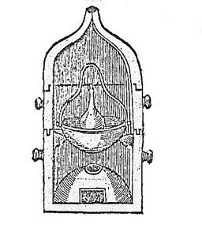
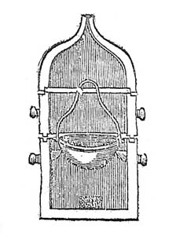
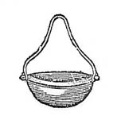
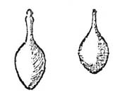
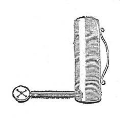
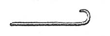

Le Filet D'Ariadne
« Pour entrer avec seureté dans le Labirinthe de la Philosophie hermetique »
Vir impius non cognoscet : et stultus non intelliget haec. Ps 91
MDCXCV

document revu le 21 décembre 2001
Plan : Introduction - avertissement - discours préliminaire sur la pierre des sages - I - De la Matière - II. Les minéraux et métaux - III. De la préparation - IV. Du Feu - V. De la putréfaction - VI. Elixir Blanc - VII. Elixir Rouge - VIII. De la Multiplication - IX. De la Projection - X. Des merveilles et Vertus de la Pierre Blanche - XI. Des merveilles et Vertus de la Pierre Rouge - Le Fourneau philosophal [figures : fourneau - écuelle - cendrier] - les cendres - l'Oeuf philosophal [figure : oeuf] - des Sceaux d'Hermès - de la Lampe [figure : lampe] - du crochet [figure : crochet] - les Balances - les Luts -
IntroductionLe filet d'Ariadne est un traité sur la pierre philosophale attribué à Batsdorff [Paris, Laurent d'Houry, 1695]. Mais certains pensent que Gaston de Claves pourrait en être l'auteur. Quoi qu'il en soit, Fulcanelli le cite plusieurs fois, notamment dans les Mystères, p. 104, quand il aborde le thème de la putréfaction. Il y revient p. 184 en évoquant le Lion vert qui est, paraît-il, le vaisseau de nature. Par la voie humide, il est beaucoup plus « intuitif » de comprendre que le vaisseau de verre et l'autre, à l'intérieur, où doit circuler le dissolvant, sont les deux vaisseaux dont l'artiste a besoin. Fulcanelli revient dans ses Demeures philosophales [DM] sur le Filet d'Ariadne, d'abord dans le chapitre Alchimie et spagyrie, p. 181 où il cite Batsdorff, évoquant ses recommandations dans l'Art sacré, puis dans le chapitre sur Louis d'Estissac, où il reproche à Batsdorff d'induire les ignorants en confusion, en les orientant vers l'antimoine. Dans le grimoire lapidaire de Dampierre, il cite encore plusieurs fois l'auteur du Filet d'Ariadne, d'abord quand Batsdorff énumère les bienfaits de la Pierre [et notamment son action sur les pierres précieuses], puis à propos de la Lampe philosophique, où il est fortement question d'alun ou à propos de ses vertus thérapeutiques [allégations de guérison d'écrouelles, d'ulcères, de loupes, paralysies, blessures, etc.] et enfin quand Fulcanelli nous parle du sel des métaux à l'occasion de l'évocation du cadran solaire du palais Holyrood à Edhimburg. Ce cadran solaire est regardé, soit dit en passant, comme un monument élevé au Vitriol philosophique, premier être de la pierre philosophale. Dans ses Etudes de symbolisme hermétique, E. Canseliet cite Batsdorff en évoquant le petit poisson ou rémora que les chercheurs d'or philosophal doivent pêcher dans la mer [mère] hermétique. E. Canseliet évoque encore le traité de Batsdorff dans ses Deux Logis alchimiques [p. 87] au chapitre La Matière et l'Esprit, par lequel débute l'examen de la porte alchimique de la villa Palombara. Jacques van Lennep nous en dit à peine plus sur Heinrich von Batsdorff : Fulcanelli aurait emprunté cette image du labyrinthe hermétique en considérant en particulier que le lever de l'astre, au centre de la toile d'araignée [arachné], ou pour mieux dire, son émergence, à l'image d'Aphrodite, hiéroglyphe spirituel du sel des Sages. Outre Batsdorff, on trouve aussi Leitungsfaden [Brunscwick, 1691] qui se soit inspiré du trajet inextricable du labyrinthe pour décrire les phases successives du Grand oeuvre. Quant à Gaston de Claves, évoqué par E. Chevreul dans sa critique de Cambriel, il est l'auteur du Traité philosophique [Paris, 1595] ; J. Van Lennep en parle en évoquant un mot qui, par cabale, peut se comprendre en des sens différents : ainsi le mot ioV, que nous avons déjà maintes fois rencontrés, et dont nous savons que sa correspondance est bien le suc ou venin, c'est-à-dire un oxyde. Gaston Claves, dit Dulco, était un avocat et un alchimiste célèbre de Nevers, contemporain de Blaise de Vigenère. Il défendit l'alchimie contre ses détracteurs. Voici un extrait de sa plaidoirie en faveur de l'alchimie :
"Toute cause efficiente entraîne le sujet et la matière vers un but quelconque. Le mouvement indique le chemin et la distance qui séparent la matière du but. Celui-ci consiste ou dans la forme, ou dans la quantité, ou dans la qualité. La cause efficiente tend donc vers différents buts. Et comme le but de l'argyropée et de la chrysopée consiste à faire de l'argent ou de l'or , son mouvement tend vers une nouvelle forme. Car la forme du plomb, de l'étain, du cuivre, du fer, du mercure, n'est pas la forme de l'argent ni celle de l'or ; mais ces métaux sont le sujet et la matière" [Th. Chemicum, t. II].Gaston Claves a laissé un certain nombre d'ouvrages. Parmi ceux-ci, il se pourrait qu'il soit l'auteur, non seulement du Filet d'Ariadne [à moins qu'il ne s'agisse de Batsdorff]. Si Dulco est le nom corrompu de Duclos [Gaston de claves], on pourrait citer un traité qui s'appelle le Recueil de M. Duclos sur la transmutation des métaux [manuscrit n° 171 de la bibliothèque de l'Arsenal]. On lit dans ce manuscrit [livre des secrets de l'empereur Rodolphe II : Teinture excellente et très véritable éprouvée à Venise :
"Prenez une part de très bon nitre pur et deux parties de chaux vive, meslez-les bien ensemble en les broyant très subtilement et faites-les calciner par trois heures au fourneau à vent. Puis faites extraction du sel des fèces avec de l'eau commune bien pure ; et coagulez à siccité par évaporation de l'eau, puis cimentez ce sel derechef avec de nouvelle chaux vive et calcinez-le comme la première fois, et faites-en l'extraction de nouveau avec de nouvelle eau chaude, et coagulez le sel en évaporant ; répétez sept fois ce travail ; enfin par ce moyen le nitre sera converti en huile, et ne se coagulera plus ni à chaud ni à froid, mais il demeurera fixe et liquide en forme d'huile, que vous garderez".
Ce passage nous décrit un des modes de préparation possible du tartre vitriolé ; la coagulation du nitre en huile, de même, ne peut évoquer que la préparation de l'alkali fixe de Lémery.
Le Filet d'Ariadne est un traité d'alchimie qui nous paraît très important à plus d'un titre ; d'abord, sa lecture, un peu austère de prime abord, montre que tous les aspects de l'oeuvre sont évoqués, depuis la préparation des premières matières jusqu'à la projection, et même au-delà. Cela ne veut pas dire pour autant que Batsdorff ait parlé du Magistère avec toute la clarté désirable, en dépit de ses promesses et de ses critiques à l'encontre d'autres alchimistes dont il nous assure, à bon droit d'ailleurs, qu'ils se sont montrés plus « envieux » les uns que les autres. Batsdorff, comme tant d'autres, jouent avec les assonances, les figurations spirituelles et les allégories. Le traité débute par des prolégomènes où Batsdorff insiste sur la nature divine de l'oeuvre [sa révélation divine], sur l'airain ; suit un exposé sur la matière, où il est question à mots couverts d'alun, de vitriol ainsi que d'antimoine. suit un exposé sur les minéraux et les métaux, sur la préparation des matières, avec une référence aux pierres précieuses ; il est question ensuite du feu secret où le talc est évoqué. Puis, c'est le tour de la putréfaction, avant l'oeuvre au blanc et au rouge. C'est ensuite la projection qui est étudiée et les merveilles procurées par la poudre ; le talc est à nouveau évoqué, de même que le corail, l'émeri, le marbre et l'art de rendre le verre malléable. Puis, chose rare dans un traité d'alchimie, le fourneau, le feu de lampe, le lut sont évoqués avec force détails.
Disons pour terminer que ce traité aborde avant tout la voie humide, voie qui nous est beaucoup moins familière -par la pensée- que la voie sèche.
Remerciements : à Marc-Gérald Cibard, pour les erreurs qu'il m'a signalées sur la page
Avertissement J'ai longtemps balancé avant que de me résoudre à mettre la main à la plume pour composer ce petit Traité, dissuadé de le faire par les mêmes raisons, qui ont empêché tous les Philosophes d'enseigner leur Science autrement qu'ils nous l'ont laissée, avouant qu'ils n'ont écrit que pour les Enfants de l'Art, et non pour les Ignorants, ni autres personnes qui en auraient pu abuser, et qu'ils se sont plutôt étudiez à la cacher qu'à la vouloir mettre en évidence : En effet il y en a qui ont composé plusieurs Volumes, chacun desquels contient bon nombre de Chapitres, qui sont autant de voiles qu'ils mettent devant les yeux, de ceux qui s'imaginent pouvoir pénétrer leurs mystères [arcanum], où ils se sont rompus inutilement la tête. Les Chimistes même se persuadent que cette Science est de leur compétence et non de celle d'autrui, voyant souvent dans leurs Livres les termes de Sublimations, Solutions, Digestions, Calcinations, Imbibitions, Coagulations, et une infinité d'autres termes, dont on se sert dans la Chimie.
Sur quoi travaillant, ils ont fait cent brouilleries qui n'ont rien produit que de la confusion dans leurs esprits et de la dépense inutile dans leurs Laboratoires, parce qu'ils ont pris à la lettre les dires des Philosophes qui doivent s'expliquer tout autrement : et comme il y a peu de Personnes, qui puissent, comme il faut, manifester leurs dires et manières de parler, j'ai fait exprès un Dictionnaire qui explique fort nettement ce qui est le plus difficile, afin de satisfaire en quelque façon les Curieux, et désabuser ceux, qui se ruinent inconsidérément, voulants travailler sur une Science qu'ils n'ont jamais apprise, et par conséquent qu'ils ne peuvent bien savoir ni mettre en usage.
Et quoi que l'on voie dans les Livres des Sages, tant de Chapitres avec des noms différents, soyez averti (cher Lecteur) que ce n'est que pour mettre de la confusion dans les esprits, et qu'ils disent ou écrivent une même chose en cent façons différentes, et mettent à la fin de leurs Volumes, ce qui devrait être au commencement, et la fin au milieu, et le milieu dès le second ou le troisième feuillet. Outre que quelquefois ce qu'ils ont dit en un endroit, ils le révoquent dans un autre, disant qu'il ne faut pas s'y arrêter.
Quelques-uns disent, que lors qu'ils semblent parler le plus clairement, c'est alors qu'ils sont plus obscurs et le moins intelligibles ; c'est ce qui a fait dire à la plupart des hommes, que comme ces Livres sont composés autrement que les autres, qu'ils sont Livres faits a plaisir, pour amuser les gens d'une Science imaginaire qui n'a point de fondement, et qui promet des Trésors chimériques. C'est pourquoi ceux qui n'y peuvent rien comprendre, et qui n'ont pas l'esprit assez pénétrant pour développer le sens des paroles des Sages, ne nomment point autrement que fols et visionnaires ceux qui s'y attachent, et ferment la bouche à ceux qui en veulent parler.
J'avoue qu'il n'y a rien de si rebutant que la lecture de ces Livres, à une personne qui ne les entend pas, et qui n'en a pas les clefs, mais aussi il faut demeurer d'accord, que ceux qui les ont et qui les entendent, sont ravis de voir la subtilité de l'esprit des Philosophes pour cacher leur Science, il n'y a pas une page, où ils ne remarquent quelque trait nouveau qui les satisfait pleinement.
Quant à moi, on ne peut pas parler plus nettement, plus sincèrement, plus intelligiblement, ni avec plus d'ordre, sans pourtant dire trop clairement quelques principes, qui au lieu de faire du bien, feraient sans doute beaucoup de mal, si je les avais déclarés autrement, parce que ce mien petit Travail pourrait tomber entre les mains de plusieurs personnes, qui en pourraient mésuser au préjudice de leur salut.
Encore que toute la substance de ce petit Traité se puisse écrire en moins de cent paroles, je m'y suis beaucoup étendu, non pas pour m'ériger en Philosophe, d'autant que j'écris trop clairement pour cela, et avec des termes vulgaires que j'affecte contre l'usage des mêmes Philosophes, mais je l'ai fais ainsi exprès, afin que rien n'y manque de tout ce qu'on y peut désirer, et que ceux qui le liront n'aient point besoin d'interprète pour éclaircir les difficultés qui pourraient naître dans leur esprit.
Reste à dire que le travail de la Pierre n'est pas grand, que la dépense est très modique, et qu'il n'y a que le temps qui est long [c'est ce qu'écrivent à peu près tous les alchimistes ; il y a un fond de vérité dans cette assertion] ; c'est pourquoi il faut faire bonne provision de patience [c'est-à-dire de sel harmoniac sophique] et ne se pas ennuyer, et devant que de commencer, se dégager du soin de toutes affaires temporelles autant qu'on pourra.
Discours préliminaire sur la Pierre des Sages La Science Hermétique est si cachée, qu'elle s'appelle avec raison, la Science de la Philosophie secrète ; les autres Sciences s'apprennent par la lecture des Livres, d'autant qu'ils sont composés de termes ordinaires et intelligibles, mais celle-ci ne peut être comprise par la lecture mille fois réitérée de ceux des Philosophes, d'autant que leurs termes ne se doivent pas prendre à la lettre, mais mystiquement, par similitude, allégoriquement, et énigmatiquement.
Si est-ce pourtant que grand nombre personnes s'y attachent, les uns par curiosité, les autres dans l'espérance d'y rencontrer de l'utilité. Encore s'ils ne faisaient tous que lire et tâcher de pénétrer le sens des Livres des Sages, cela serait en quelque façon tolérable, mais la plupart consomment leurs biens, et ensuite ceux des autres, à travailler et à chercher ce qu'ils ne trouveront jamais. En bonne foi, tous ces gens me font pitié de s'attacher si opiniâtrement à chercher avec tant de frais, et de perte de temps, et à vouloir faire une chose qu'ils ne savent pas, ni [même dont ils n'ont pas le moindre] des principes. Dans tous les Arts il faut bien savoir, les principes et le moyen d'opérer, et celui-ci qui est l'Art des arts, ils le veulent entreprendre, sans en savoir ni le commencement, ni le progrès, ni les moyens de conduire leur ouvrage à une due et raisonnable fin.
Cela est donc contre le bon sens, car tout homme prudent doit premièrement apprendre la Science, s'il peut ; c'est-à-dire les principes et les moyens d'opérer, sinon en demeurera là, sans bien, et en outre celui des autres. Or je prie ceux qui liront ce petit Livre, d'ajouter foi à mes paroles. Je leur dis donc encore une fois, qu'ils n'apprendront jamais cette Science sublime par le moyen des Livres, et qu'elle ne se peut apprendre que par révélation divine ; c'est pourquoi on l'appelle Art divin, ou bien par le moyen d'un bon et fidèle maître : et comme il y en a très peu à qui Dieu ait fait cette grâce, il y en a peu aussi qui l'enseignent, d'autant que Dieu ne veut pas qu'elle soit su de beaucoup de personnes, et que ceux qui la savent doivent lui répondre de la probité [substances à l'état de pureté] de leurs disciples, c'est ce qui a mu les Sages à la laisser à la postérité voilée de divers nuages, et de divers termes ambigus et mystiques, de comparaisons, similitudes, analogies, de métaphores, de fables, et de diverses confusions , dont ils se sont adroitement avisez et servis, sans jamais rien dire que de véritable.
Ils ne l'enseignent donc pas de suite comme font tous les autres Auteurs, mais en confusion et sans ordre mêlant toutes les parties et différentes chose avec des termes différents, imposants cent noms différents à la même chose, et nommant d'un même nom diverses matières et divers sujets. Ils lui donnent divers noms suivant les diverses couleurs ou changements qui arrivent dans le progrès du travail : quand elle est au noir, ils la nomment leur airain ; quand elle a passé de la noirceur à la citrinité
[Il semble que cette couleur ait un rapport avec la Lune hermétique et il s'agit peut-être du dissolvant des Sages. Voici une citation de Limojon extraite de sa Lettre aux Vrais disciples d'Hermès (troisième Clef) à propos de la citrinité:
"...je veux vous révéler un secret...Les uns se sont contenté de dire, que de leur liqueur on en fait deux Mercures, l'un blanc, et l'autre rouge. Flamel a dit plus particulièrement qu'il faut se servir du Mercure citrin, pour faire les imbibitions au rouge ; il avertit les enfants de l'art de ne pas se tromper sur ce point ; il assure aussi qu'il s'y serait trompé lui-même, si Abraham Juif ne l'en avait averti...Je vous ai développé un grand mystère...le Cosmopolite l'a touché fort spirituellement par une fameuse allégorie en parlant de la purification [nous ne quittons pas notre sujet malgré les apparences] et de l'animation du Mercure : Cela arrivera, si tu donnes à dévorer à notre vieillard l'or et l'argent, afin qu'il les consume, et que lui-même enfin devant aussi mourir soit brûlé [nous ajouterons par de l'eau forte]..." et on lit dans la Tourbe : "Sachez que notre œuvre a plusieurs noms, lesquels nous voulons décrire. Magnésie, Kukul, Soufre, Vinaigre, Pierre citrine..." voir pour ce terme : 1,2,3,4,5,6,7,8,9,10,11],
leur or ; quand elle est venue à une troisième couleur, la fleur de l'or ; quand elle a encore passé outre, ils l'appellent ferment : et quand elle est au rouge parfait, le venin [ioV, c'est-à-dire oxyde] des Teinturiers.
Les Sages n'en font pas la petite bouche, ils avouent franchement eux-mêmes qu'ils n'ont écrit que pour les enfants de la Science : et que quand ils semblent parler le plus clairement, c'est alors qu'ils sont le moins intelligibles et le moins croyables ; c'est pourtant à quoi s'attachent les ignorants et les Sophistes qui travaillent sur le Soufre, le Mercure, et l'Arsenic du vulgaire, et ils ne trouvent rien. Ils n'ont écrit, disent-ils, que pour donner à ceux qui ont, et ôter à ceux qui n'ont pas, suivant le dire de l'Ecriture :
Habenti dabitur ; ab eo autem qui non habet, etiam quod habet auseretur ab eo.
Ils disent que dans leur Art, on ne parle pas vulgairement : d'où s'enfuie qu'il n'y a rien de si fâcheux et dégoûtant [allusion à fluo : dégoutter et dégoûter] que la lecture de leurs Livres, parce qu'on n'y peut rien comprendre sans avoir les clefs propres pour ouvrir les portes de leurs cabinets, qui sont au nombre de trois principales, outre quelques autres de moindre importance. Ces principales sont, la vraie matière, sa préparation, et le régime, lesquelles clefs, tous ces Chercheurs n'ont jamais trouvées chez les bons Artistes, et ne les trouveront point, sans les deux moyens ci-dessus.
Ils ont donc enseigné plusieurs régimes, quoiqu'il n'y en ait qu'un ; ils disent prenez ceci, prenez cela, et il ne faut rien prendre ni ajouter ; car la nature contient en soi tout ce qui est nécessaire, et il ne faut point non plus ouvrir le vaisseau qui a été une fois scellé et fermé, jusqu'à ce que l'Artiste ait conduit son ouvrage à sa dernière perfection. [il s'agit du 3ème oeuvre]
Ils confondent aussi souvent la matière avec leur mercure, parlant de sublimation, ils la nomment diversement. Ils feignent diverses opérations, séparation et divers poids qu'ils appellent tantôt d'une manière, tantôt d'une autre. Ils écrivent beaucoup de choses qu'ils ne font pas, par exemple lorsqu'ils parlent de la dissolution, distillation, descention, ablution et calcination de la Pierre, ils font un Chapitre à part de chacune, encore que ce ne soit qu'une seule et même opération, qu'ils ne font pas ; mais bien la Nature seule, avec l'aide de l'Art. [nous sommes absolument d'accord ; le 3ème oeuvre est marqué par une série itérative d'opérations que la Nature met des millions d'années à parfaire].
Quelques-uns, n'ont pas parlé du commencement ni de la fin de l'ouvrage et n'ont parlé que du milieu, d'autres n'ont parlé que du commencement, et d'autres seulement de la fin, et s'ils ont dit quelque chose des autres parties, c'est si peu, qu'il n'y a que les Savants et les yeux de Lynx [voir les lunettes de la gravure LXII de l'Atalanta fugiens] qui s'en puissent apercevoir : d'où on doit conclure, que toutes leurs ruses, leurs adresse, et manières de parler énigmatiques, ne sont employées que pour aveugler les ignorants, rebuter les méchants, et détourner les uns et les autres du droit chemin de parvenir au but tant désiré :
Et videntes non videant, et intelligants non intelligant.Pour faire justice aux Sages, disons, qu'outre les raisons ci-dessus, il n'est pas raisonnable qu'ils enseignent leur Science autrement qu'ils font, d'autant qu'elle leur coûte beaucoup de temps, et de peine et d'étude, qu'ils prétendent en agissant ainsi que ceux qui désirent y parvenir, l'achètent au même prix qu'eux, si Dieu veut permettre qu'ils arrivent à ce grand bien : c'est pourquoi ils ont engagé leurs disciples et ceux qui la savent, à garder inviolablement le silence, à être prudent et avisez à leur exemple, et à ne s’expliquer que par des termes ambigus et énigmatiques ; ce quoi faisant, ils acquerront le glorieux titre de Sages, qu’eux-mêmes n’ont mérité que par-là.
Ils ont même donné divers noms à la Pierre, suivant les diverses couleurs qui se font voir dans le travail, et même à cause qu’elle contient en soi plusieurs choses, et qu’elle est composée des quatre éléments ; et encore parce qu’elle a en soi des vertus et propriétés de toutes choses, soit minérales, végétales et animales, aussi bien que des corps célestes [il faut obtenir la collaboration permanente du soleil et de la Lune avec les autres planètes bien qu'elles ne participent en rien à l'oeuvre. Voyez les Douze Portes de Ripley et la section humide radical métallique]. Les envieux ont encore multiplié le nombre de ces noms, pour donner le change et faire errer ; mais tous ces envieux et ceux qui ne le sont pas conviennent d’un nom, qui est de l'appeler Pierre en son commencement, en son progrès, et en sa fin.
Et pourtant elle n'est nullement pierre ni en l’un ni en l’autre état ; et pour dire ingénument la vérité, elle ne l'est qu’en puissance et en similitude, et non pas en nature : et d’autant plus qu’elle demeure au feu, dit Arnaud de Villeneuve, d’autant plus elle augmente en bonté, ce que ne font pas les autres pierres ni autres corps, car elles y sont brûlées et consumées ; mais au contraire, la Pierre des Sages est fondante au feu et y demeure volontiers, d'autant qu'il est sa nourriture et qu'il cause sa perfection, pour cet effet les Philosophes ont nommé pierre tout ce qui persiste au feu [cette persistance au feu ou cette renaissance du Roi dont parlent les textes, en général voilés à cet endroit sous l'allégorie de la salamandre, n'est compatible qu'avec des oxydes qui se recombinent entre eux lors d'un très lent refroidissement]. Il faut encore dire une raison pour laquelle ils l'appellent pierre, c'est que sur elle comme sur une vraie pierre et solide fondement, ils établissent leurs richesses et leurs fortunes.
Tant plus une chose s'éloigne de son principe, tant plus elle s'éloigne de sa perfection naturelle : l'eau d'une fontaine est très pure en son commencement et sortant de la source, mais elle prend et entraîne avec soi du limon et de la boue, en suivant son penchant et s'en allant dans une rivière. [soit dit en passant, le limon et la boue indiquent tout simplement le nom vulgaire du Sel des Sages. C'est un secret qui fut autrefois connu sous l'expression de verre malléable] Il en est ainsi de toutes choses ; il n'y a que la pierre qui se perfectionne toujours, plus elle s'éloigne de son origine : car elle perd toujours de sa perfection et de son excellence, à mesure qu'elle rétrograde par la projection qui s'en fait sur les métaux imparfaits, et qu'elle retourne vers son principe ;
Ce qui a fait bien de la confusion et du désordre dans la Science d'Hermès, c'est que les Sophistes ont été la cause qu'elle a été fort décriée, ayant composé bon nombre de Livres remplis d'erreurs, qu'il ont autant malicieusement que faussement attribués aux Philosophes, à cause qu'après avoir beaucoup travaillé, il n'ont pu faire aucune découverte : et pour se venger, se sont avisés de ce moyen infâme pour ternir la réputation qu'ils s'étaient acquise ; et ceux qui ont lu les livres de ces Sophistes, les ayant voulu mettre en pratique, suivant ponctuellement tout ce qu'ils prescrivaient, et enfin se voyant abusés, ils ont dit que cette Science n'avait rien de vrai, ni de solide, et que ce n'était qu'une Science imaginaire, comme un conte fait à plaisir, afin d'entretenir les esprits faibles et crédules dans de grandes espérances ; nous témoignant par la que leur mépris provenait que de leur ignorance et du manque d'y avoir fait de bonnes et solides réflexions, ou d'avoir rencontré un maître qui eu la charité de les mettre dans le bon chemin.
D'autres ont beaucoup lu les vrais Livres des Philosophes qui ne doutent nullement de sa possibilité, et qu'il n'y ait des personnes qui l'aient conduite jusqu'à sa dernière perfection, et eux-mêmes croient la savoir sans avoir encore mis la main à l'œuvre, car ils disent qu'ils expliquent facilement les dires et manières de parler des Philosophes ; mais s'ils n'en savent pas d'avantage, j'estime qu'ils ne savent rien , parce qu'il est du tout impossible d'apprendre par les Livres la Science Hermétique, et que s'ils expliquent quantités de choses de ces sortes de Livres, ils les expliquent suivant leur propre sentiment, et non conformément au sens caché des Philosophes, qu'il est très difficile de découvrit, sans avoir les trois clefs principales dont nous avons parlé ci-dessus, d'autant que ces Livres sont conçus sous des termes mystiques et non vulgaires.
L'ouvrage de la Pierre Philosophale s'appelle par excellence le grand Œuvre, et l'œuvre divin [assonance phonétique entre Dieu et le soufre, en grec ; c'est donc l'oeuvre du soufre, ou plus exactement d'un sel de soufre, sulfate ou sulfure], d'autant que les hommes ne sauraient faire en nature aucune chose plus excellente, ni plus grande, tant pour conserver leur santé, que pour s'enrichir ; c'est pourquoi on peut à bon droit l'appeler un don de Dieu, qu'il donne à qui lui plaît, comme il fit à Hermès, et à quelques autres qui sont en petit nombre ; et c'est l'ordre de la Providence de Dieu, que tant plus une chose est relevée et a d'excellence, tant moins il y a de personnes qui en sont gratifiées ; il n'y a que quelques âmes d'élite dégagée des affections aux richesses et vanités du Siècle, qui possèdent ce grand bien, et qui en soulagent les Pauvres.
Pauci quos aequus amavit Jupiter, aut ardens evexit ad aethera virtus.
Ceux de cette élévation sont si rares, qu'on peut dire qu'il n'y en a presque point, d'autant qu'ils font des ouvrages d'une cause surnaturelle qui les rend capables d'un si grand bien, et d'en faire un bon usage pour sa gloire et le soulagement des Pauvres, car ainsi ils sont faits les trésoriers de la Providence divine, auxquels Dieu inspire ses volontés pour les exécuter, ou leur présente les occasions pour cela ; c'est pourquoi les Sages ont dit :
aut sanctum invenit, aut sanctum facit.
D'où il faut conclure, que ceux qui par quelque occasion apprennent partie ou le tout de cette Science, sont empêchés d'y réussir par les Anges ou par les Démons, d'autant qu'ils en mésuseraient et emploieraient de si grands trésors contre l'intention de Dieu et à la perte de leurs âmes [c'est-à-dire l'impossibilité d'unir les oxydes après le départ du dissolvant].Il est encore appelé Œuvre divin lors de la partie du régime en laquelle l'âme [Soufre] de la pierre est jointe à son [Sel] corps [c'est la phase sèche du 3ème oeuvre], parce que cela est fait en un moment, et dépend de Dieu seul et de la Nature en laquelle Dieu opère, comme nous dirons ci-après en son lieu. Il l'est encore, d'autant qu'il est la forme et la figure des Œuvres admirables de Dieu envers l'homme, et qu'il contient en soi toutes les excellentes vertus de tout ce qui est au monde.
Quam admirabilia sunt opera tua Domine, nimis profundae factae sunt cogitationes tuae ?
On est donc convaincu, que cette Science est un don de Dieu, qu'il donne à peu de personnes, à cause de son excellence qui surpasse l'entendement humain et va au-delà de sa capacité, quoique quelques Philosophes l'aient appelé Jeu d'enfants et ouvrage de femmes [il s'agit des laveures ignées] ; ce qu'il faut entendre, après que le Mercure Philosophal est fait, et extrait du corps où il est enfermé, lequel il ne faut plus que conduire avec le Soleil et la Lune d'un régime à l'autre, et d'une qualité grossière à une plus subtile et plus spirituelle.
La manière de le faire, et de cette extraction, est aussi au-delà de ce que l'entendement humain eût pu penser ; Dieu l'a donné à quelques Philosophes, afin qu'ils s'en servissent pour sa gloire, et qu'ils connussent une étincelle de sa grandeur et de sa puissance, qui peut faire beaucoup de choses au-dessus de la Nature, et qu'il en serait en effet, comme qu'une Vierge enfanterait [le thème de l'Annonciation est pris d'habitude par les alchimistes comme l'allégorie de l'attaque de la prima materia], que Dieu se ferait homme, et autres telles merveilles que nous enseigne la Foi Chrétienne.
Puisque la Pierre des Sages est un don de Dieu, et son régime aussi, sans la permission de Dieu la Nature et l'Art ne peuvent la faire, mais Dieu laisse agir librement les causes secondes ; la Nature ne la pouvant faire elle seule, parce qu'elle travaille toujours simplement, et qu'elle a son pouvoir limité qu'elle ne peut outrepasser, l'Art aussi ne pouvant rien faire de lui-même, ni donner les poids et proportions aux choses, d'autant que cela passe ses forces et ses connaissances [Fulcanelli dit qu'il y a deux poids : celui de l'Art et celui de nature et que seul le premier est connu de l'Artiste ; dans le même ordre d'idée, B. Valentin exhorte ici l'impétrant à « brûler ses livres et à blanchir le laiton »] ; mais lorsque la Nature est jointe à l'Art, et qu'ils travaillent de concert, elle est élevée à une perfection si étendue qu'elle passe l'imagination, et elle acquiert une puissance presque infinie.
Et pourtant il faut savoir qu'ils ne peuvent rien faire sans le Mercure philosophal, qui est la base et le fondement de tout l'ouvrage, c'est pourquoi les Sages se sont particulièrement étudiés à le cacher ; quelques-uns même n'en ont point voulu en parler dans leurs Livres, d'autres en ont dit un mot en passant et si succinctement qu'on ne s'en aperçoit presque pas ; il y en a qu'un qui en ait fait un Livre entier, mais avec tant d'obscurité qu'il n'y a que ceux qui le savent et le connaissent parfaitement, qui puissent comprendre ce qu'il veut dire ; nous en parlerons ci-dessous plus clairement que lui, pour la consolation des Enfants de la Science. Allons maintenant plus avant et parlons à fond de la Doctrine des Philosophes, et disons :
Que Dieu a premièrement créé la Nature de rien par sa pure libéralité, bonté et volonté, en une certaine substance qui est appelée Quintessence
[cette quintessence ne peut, rationnellement, être compatible qu'avec un état de la matière instable dont les Anciens ne pouvaient avoir connaissance et qui est intermédiaire entre le Feu et l'Eau : il s'agit de chaux métalliques dissoutes, autrement dit d'oxydes fondus],
dans laquelle toute la Nature est comprise, et de laquelle substance divisée en trois parties, de la meilleure et plus pure d'icelle, le Très-Haut a fait les Anges [assimilables au plan hermétique à des sulfates, cf. section sur la Réincrudation], qui est la première ; de la seconde les Cieux, les Planètes [ce sont les hiéroglyphes spirituels des matières utilisées dans le Grand Oeuvre, en particulier les natures des chaux métalliques] et les Etoiles ; et de la troisième moins pure, il a fait le Monde inférieur [qui correspond à la chute des anges, c'est-à-dire à la transformation de sulfates en oxydes, corps « infectés » par le venin è ioV = oxyde, rouille].
C'est ce que doit entendre le Fils de Science [expression de Djabir, reprise par Fulcanelli], non comme nous avons écrit, mais comme tout a été créé ensemble par la volonté de Dieu, sans aucune suite de productions, et sans aucune matière précédente qui regarde la succession du genre ; car autrement ce ne serait pas une création de l'unité, venant scientifiquement par création de rien en une véritable entité substantielle ; c'est pourquoi il faut que vous entendiez véritablement et scientifiquement, et non pas d'une façon vulgaire et commune, parce que nous parlons ainsi au regard de la Nature. Et quand tout cela fut fait, Dieu forma le premier homme du limon de la terre [assimilable au Soufre blanc], et le fit à son image et semblance, lui inspira la vie, et ensuite le nomma Adam.
Il est certain que ce premier homme a eu toutes les Science infuses, et la connaissance de tous les Arts dès le moment de sa création [allusion à la Priscia Sapientia des Anciens dont Isaac Newton était convaincu] ; il savait donc tout ce que les causes secondes pouvaient faire dans tous les étages de la nature, c'est à dire, dans le Ciel, dans l'air, la mer et la terre, et ainsi il avait la connaissance des minéraux et des métaux, de leur origine, de leur progrès, et de leur fin ou perfection constitutive [cf. la Génération des métaux]. Tubalcaim était forgeron de cuivre [Vénus, synonyme d'Aphrodite, voilant le principe contenant un sel de la potasse] et de fer [Mars, synonyme de vitriol, cachant tout composé de l'acide vitriolique], comme témoigne le Texte Sacré : il vivait au commencement du Monde et était fils de Lamech, qui était la sixième génération depuis Adam. D'où il s'ensuit que le Soleil et les Eléments, et en un mot la Nature ne les avait pas fait en ce temps là, comme elle a fait depuis, d'autant qu'elle n'en avait pas encore eu le temps ; mais que Dieu les avait créés lui-même, en faisant le Monde inférieur.
Dès ce temps là on cherchait le minéraux et les métaux dans la terre ; et les enfants d'Adam se multipliant, ils s'écartèrent les uns des autres et firent divers Peuple et diverse Nations, et n'ayant tous qu'une même Langue, ils commencèrent d'en avoir et d'en parler diverses, lorsque leur témérité les porta à faire la Tour de Babel, de laquelle ils se désistèrent, quand ils virent qu'ils ne s'entendaient plus les uns les autres, étant allés chacun de son côté ; et ayant habité diverses contrées, ils firent des Villes aux lieux qu'ils jugèrent les plus propres, où ils s'exercèrent en toutes sortes d'Arts et de Sciences.
Lors le commerce des hommes se faisait de bonne foi, par échange d'une chose à l'autre, et a duré ainsi jusqu'à la destruction de Troyes, comme nous assure Homère ; mais quand la mauvaise foi commença de se glisser parmi les hommes, et que les métaux commencèrent aussi à devenir plus communs, on s'avisa de faire de la monnaie, et ce fut Janus
[Janus est une divinité romaine sur l'origine de laquelle les mythologues ne sont pas d'accord. Les uns le font Scythe ; les autres, originaire du pays des Perrhèbes, peuple de Thessalie ; enfin, d'autres en font un fils d'Apollon et de Créuse, fille d'Érechtée, roi d'Athènes. Devenu grand, Janus, ayant, équipé une flotte, aborda en Italie, y fit des conquêtes et bâtit une ville qu'il appela de son nom Janicule. Toutes ces origines sont obscures et confondues dans le Latium. Saturne, chassé du ciel, se réfugie dans ce pays, et fut accueilli par Janus qui même l'associa à sa royauté. Par reconnaissance, le dieu détrôné le doua d'une rare prudence qui rendait le passé et l'avenir toujours présents à ses yeux, ce qu'on a exprimé en le représentant avec deux visages tournés en sens contraires. Le règne de Janus fut pacifique. C'est à ce titre qu'on le considéra comme le dieu de la paix. Le roi Numa lui fit bâtir à Rome un temple qui restait ouvert en temps de guerre, et qu'on fermait en temps de paix. Ce temple fut fermé une fois sous le règne de Numa ; la seconde fois après la deuxième guerre punique, et trois fois, à divers intervalles, sous le règne d'Auguste. Ovide dit que Janus a un double visage parce qu'il exerce son pouvoir sur le ciel, sur la mer comme sur la terre ; il est aussi ancien que le monde; tout s'ouvre ou se ferme à sa volonté. Lui seul gouverne la vaste étendue de l'univers. Il préside aux portes du ciel, et les garde de concert avec les Heures. Il observe en même temps l'orient et l'occident. On le représente tenant d'une main une clé, et de l'autre une verge, pour marquer qu'il est le gardien des portes (Januae) et qu'il préside aux chemins. Ses statues marquent souvent de la main droite le nombre de trois cents, et de la gauche celui de soixante-cinq, pour exprimer la mesure de l'année. Il était invoqué le premier lorsqu'on faisait un sacrifice à quelque autre dieu. Il y avait à Rome plusieurs temples de Janus, les uns de Janus Bifrons, les autres de Janus Quadri-frons. Au delà de la porte du Janicule on avait élevé, en dehors des murs de Rome, douze autels a Janus, par rapport aux douze mois de l'année, Sur le revers de ses médailles on voyait un navire ou simplement une proue, en mémoire de l'arrivée de Saturne en Italie sur un vaisseau. Le mois de janvier (januarius), auquel le roi Numa donna son nom, lui était consacré. Les Latins donnaient à Saturne un fils né dans le Latium, Picus, époux de la belle Canente, fille de Janus. Par ce mariage furent réunies deux familles de dieux aborigènes. Picus, amateur de chevaux, s'occupa surtout des pâturages ; et, malgré sa métamorphose en pivert, il garda toujours dans l'opinion des villageois l'importance et le prestige d'une divinité agreste. Son fils Faunus se consacra plus particulièrement à la viticulture avec Fauna, sa femme, qui, malgré son intempérance, fut placée comme lui au rang des immortels. A ces divinités, objets de vénération dans les campagnes, on sacrifiait parfois une brebis, un chevreau ; mais le plus souvent on se contentait de leur offrir un peu d'encens, du lait et du miel. On peut rapprocher de ce culte celui de Picumnus et de Pilumnus, deux frères, fils de Jupiter et de la nymphe Garamantide. L'un, surnommé Sterquilinius, avait imaginé de fumer les terres ; l'autre avait inventé l'art de moudre le blé. Les meuniers tenaient celui-ci en haute vénération.]
qui régnait dans l'Italie et qui associa au Royaume un nommé Saturnus, qui était venu dans un Navire, et fut le premier qui enseigna et fit graver de la Monnaie de cuivre, qui représentait d'un côté l'effigie de sa Tête et celle d'un Navire de l'autre, l'an du Monde 2032. Cette sorte de monnaie dura jusqu'en l'an 547 de la Ville de Rome, qu'on fit de la monnaie d'or, qui se nommait Ducat, à Romano Ducatu ; et dès lors, à son imitation, on en fit par tout le Monde et d'or et d'argent, et cette monnaie devint commune à toutes les Nations : et par ainsi le négoce qui s'était toujours fait par échange d'une chose à l'autre, commença de se faire avec ces précieux métaux, qui ont été depuis le prix de toute choses, et le souhait, le principe et le but de l'avarice des hommes ; leur cupidité les fit entrer dans les Mines pour en tirer : ils y trouvèrent les autres métaux ; savoir, le plomb, l'étain et le mercure, que nous nommons métaux imparfaits, avec le cuivre et le fer, dont nous avons ci-devant parlé, comparés avec l'or et l'argent
[l'or n'a pas toujours désigné le métal ; les Anciens employaient aussi des succédanés pour écrire en couleur d'or, sans or : par exemple, un mélange intime de soufre natif, d'alun et de rouille. On trouve encore une recette, nous dit M. Berthelot dans sa Chimie des Anciens pour écrire en lettre d'asèm -alliage d'argent et d'or- au moyen de la couperose, du soufre et du vinaigre].
Comme chacun a son talent et son génie particulier, il se trouvait de temps en temps des hommes d'esprit, remplis de Science et de Doctrine, qui cherchaient les merveilles contenues dans tous les être. Hermès Trismégiste qui vivait selon la plus commune opinion du temps de Ninus l'an 2072 pénétra si avant dans les profonds secrets de la Nature, qu'il fut appelé le très grand Philosophe, et le Père de la Science Chymique et transmutations métalliques, et sa science a passé de main en main jusqu'à nous, et en tous les siècles il s'est trouvé des personnes qui ont eu cette sublime Science, et qui nous en ont laissé des connaissances particulières dans leurs ouvrages, mais toujours voilées de quelques énigmes, types et analogies, pour les raisons qu'ils nous déduisent dans leurs écrits, dont l'une des principales est le désordre que cela causerait par tout le Monde, si cette Science était publique comme les autres, et que chacun pût faire de l'or et de l'argent à sa volonté : d'où il s'en suivrait, que les autres Arts cesseraient, et que les terres mêmes demeureraient incultes, jusqu'à ce qu'on eût trouvé un autre moyen pour établir un nouveau commerce.
Chapitre premier
De la Matière Pour cet effet ils se sont particulièrement étudiés à cacher la matière sur laquelle ont doit travailler à cet Ouvrage divin, sa préparation et le régime du feu ; les hommes d'esprit de toutes professions l'ont cherché pendant tous les siècles en différents sujets, croyant, comme il est vrai, que dans tous les mixtes, les trois principes naturels y sont contenus ; savoir, sel, soufre et mercure : mais il est vrai aussi, qu'ils sont si éloignés, qu'il ne faut pas s'étonner si ces gens ne sont jamais venus à bout de leur intention.
Ils se sont avisés de travailler sur les animaux, sur les urines, et même sur des choses mescéantes à nommer, et ils n'ont rencontré au bout de leurs diverses opérations chimériques, que de la corruption ; et ce qui les a abusé, c'est que les Philosophes ont dit que la matière était triviale et commune, et que nous la voyons et touchions tous les jours, et qu'autant en a le pauvre que le riche [il s'agit ni plus ni moins que du nitre ; le secret réside en sa préparation dont nous parlons dans la section sur le tartre vitriolé] : ils disent tous vrai ; car par ces paroles ils entendent les éléments, qui sont la matière dont se sert la Nature, pour faire celle de la Pierre ; mais ceux qui ne savent pas expliquer les manières de parler des Philosophes, les prennent dans le sens littéral, et c'est en quoi ils se trompent, car il les faut expliquer tout autrement.
Il faut encore savoir qu'il y a deux matières de la Pierre ; savoir la prochaine qui est l'argent vif ; et la matière éloignée qui est l'eau, d'autant qu'elle a été eau auparavant d'être argent vif [c'est en partie vrai ; dans la section sur la nature de la pierre, nous discutons de l'utilité de l'eau dans la préparation du dissolvant et nous abordons la voie humide qui, sans doute, a été celle de la Nature]. Que tous ceux donc qui la cherchent dans les ordures comme les porcs, que Pontanus appelle fils de bêtes, s'aillent cacher, s'ils ne veulent s'exposer à être sifflés et rayés du nombre des raisonnables ; que ceux qui la cherchent dans les végétaux, minéraux et animaux, reconnaissent leur erreur, autrement ils ne mériteront pas le nom de Philosophes, puisqu'ils ne savent pas raisonner, ou s'ils le font en quelque manière, c'est comme les Aveugles lorsqu'ils parlent des couleurs.
Qu'ils reconnaissent donc leur ignorance ; et pour s'en guérir, qu'ils étudient la Nature, et ses opérations, ils apprendront en quel lieu se rencontre ce qu'ils cherchent, qui n'est pas dans les vilénies et dans les corruptions ; qu'ils sachent qu'il ne faut pas chercher une chose où elle n'est pas.
Qu'ils ouvrent les yeux de l'entendement et qu'ils considèrent comme la Nature s'est perpétuée, multipliée et augmentée depuis le commencement du Monde, et s'augmente toujours en se reproduisant. Qu'ils voient, dis-je comment cela se fait, ils verront que chaque chose porte sa semence, le végétal dans chaque espèce, comme le blé froment fait le froment, le blé seigle fait le seigle, l'orge l'orge, et ainsi des autres végétaux ; de même l'homme fait l'homme ; le chien le chien, et chaque animal conserve son espèce en sa semence, et par sa semence. De sorte que si tu veux faire de l'or et de l'argent par le moyen de la Nature aidée de l'art, sème de l'or et de l'argent dans le Jardin des Philosophes, et tu en feras par ton travail, en bien moins de temps que la nature seule ne le fait dans les entrailles de la terre. Ecoute le Poète Augurel [1, 2, 3, 4,]:in auro Semina sunt auri quam vis abstrusa recedant longius, et nobis multo quaerenda labore.
Prends aussi de la semence de la Lune [le Soufre blanc, terre de Chio] pour faire le mariage Philosophal tant désiré et si caché par les Sages, qui est la matière de la Pierre toute préparée [c'est au vrai une Pierre blanche, en ce sens qu'il s'agit d'un écrin vide], avec les poids et proportions que la Nature y a mises et unies ensemble d'elle-même ; et c'est ce que les Sages disent, que l'esprit humain ne peut concevoir, ni ne peut faire, et ce mercure Philosophal est le Ciel terrestre des Hermétistes ; et c'est à lui à qui il faut attribuer la plupart de ce qu'ils disent dans leurs écrits, parce que sans lui rien ne peut se faire, et que c'est lui qui fait presque tout l'ouvrage avec l'aide de l'art, et la prudence de l'Artiste ; et cette semence n'est pas la semence d'un or fait, mais à faire, ni de l'or vulgaire, mais d'un or spirituel et Philosophique.
Encore un coup, que ces Chercheurs prennent la matière où elle se trouve, et non dans les vilénies et les corruptions, et qu'ils se souviennent que c'est pêcher contre le bon sens, que de prétendre donner la perfection aux métaux imparfaits, par des choses
qui ont moins de perfection qu'eux, ou par des choses qui sont d'autre nature et d'autre espèce que les dits métaux, avec lesquels elles ne peuvent avoir de liaisons et d'union parfaite.D'autres ont travaillé sur les Minéraux, comme Marcassites, Aluns, [les deux contiennent l'acide vitriolique ; ils appartiennent donc à la sphère de Mars] Arsenic, Tuthies, Vitriols, Antimoines [sphère de la Terre, renversement des pôles] et semblables ; quelques-uns sur des champignons, d'autres sur la rosée des Equinoxes, et d'autre tels sujets ; mais tout cela ne leur a produit que bien de la peine, la perte de beaucoup de temps, et bien de la dépense inutile et du déplaisir. D'autres plus raisonnables ont travaillé sur les métaux, mais ils se sont servis de diverses eaux fortes [c'est le Caput obtenu dans la préparation de l'eau-forte qui paraît être le 1er sujet des Sages] et corrosives pour les dissoudre, sans considérer que toutes ces eaux sont destructives, qu'elles gâtent, infectent et empoisonnent les substances métalliques ; et qu'ainsi, pour édifier et faire un ouvrage, ils emploient des choses contraires, ce qui est aussi contre le bon sens, et tout homme qui se servira de chose corrompantes et adustibles, sera toujours réputé aveugle en cette Science ; mais il faut se servir d'une substance pure, et qui persiste au feu sans combustion [la salamandre].
Il est vrai, suivant tous les bons Auteurs, que la vraie matière de la Pierre des Sages, doit être de Racine métallique [il s'agit donc forcément d'un sel] : ainsi tous ceux qui travaillent sur d'autre matières, et sur des matières éloignées, ne feront jamais le grand œuvre, quoique les trois principes naturels se trouvent dans tous les mixtes, parce que cela est trop éloigné, et que les diverses préparations qu'on y emploie, détruisent et ne sont pas conformes à la simplicité avec laquelle la Nature travaille, et fait ses opérations ; ce qui est particulièrement et expressément ordonné de faire par les Philosophes, et que la matière la plus proche, et qui est de la même nature que ce que nous prétendons faire, doit plutôt être choisie que toute autre, outre qu'elle n'a pas besoin de tant de préparations et d'opérations, ni de faire un si long et dangereux voyage [s'agit-il du voyage des Argonautes ?].Pour bien comprendre cela, il faut savoir que tous les métaux sont faits et procréés dans le terre par la Nature seule, et d'un seul et même Mercure, qu'elle fait et qu'elle anime d'un seul et même Soufre ; mais les empêchement qu'elle rencontre par les chemins, qui sont les impuretés des matrices ou veines de la terre par où elle pousse son mercure et son soufre, spécifient chaque métal dans la terre par une particulière Providence de Dieu, qui les a jugé nécessaires à divers usages pour la commodité et l'utilité des hommes. [On discute de ces « empêchements » dans la section de la nature de la Pierre ; ce sont eux qui sont responsables, par le contact des roches intrusives et calcaires, des formations cristallisées qui sont pour nous l'objet même de l'alchimie]
C'est pourquoi ils sont tous appelés métaux imparfaits, comme si on disait qui ne son pas fait, ni achevés de faire, mais à parfaire, et ainsi ils désirent et attendent toujours la perfection, étant en chemin pour l'acquérir ; ce qu'ils ne peuvent que par l'Elixir ou la Pierre parfaite au blanc ou au rouge, parce qu'ils sont morts dès le moment qu'ils sont détachés de la Minière ; mais l'Elixir est vivant et anime le Mercure de tous les métaux, étant leur semence, et fait une espèce de résurrection semblable à peu près à celle qui se fait par diverses semences des végétaux.La première matière des métaux est donc argent-vif et soufre [c'est-à-dire froidure et sécheresse si l'on nous entend bien], qui ne le sont pas en leur nature, mais altérés ; ainsi la première matière des métaux est proprement une vapeur onctueuse et humide, qui contient en soi la nature de l'argent-vif et du soufre : d'où il s'ensuit que toute chose de laquelle on peut extraire une telle vapeur onctueuse semblable à celle dont les métaux sont procréés dans la terre, peut être la matière de laquelle l'Elixir ou la Médecine qui perfectionne les métaux imparfaits doit être prise ; ce qui pourtant ne se peut faire, si cette même chose n'est putréfiée par une longue digestion et décoction, et n'est élevée à une autre nature. [dans un contexte à peine différent, on peut voir une allusion à un fondant qui permet de dissoudre certaines substances, en l'occurrence des oxydes]
Les curieux de cette Science ayant lu les Livres des Philosophes et appris que la Pierre était minérale, végétale et animale, ont travaillé sur ces divers sujets, comme nous avons dit ci-devant. Il est vrai qu'ils l'appellent végétale, lorsque la verdeur [est-ce une allusion au vitriol vert ou au Lion vert ? cf. aussi le songe verd] parait, et qu'ils l'ont nommée animale lorsque l'âme est jointe à son corps et à son esprit, parce qu'ils disent que pour lors elle est animée [il s'agit du Compost, mélange fait du Rebis et du Mercure animé] ; mais ces Messieurs ne considéraient pas que ces termes sont dits comparativement, car la Pierre n'a pas une vie semblable à celle des végétaux ni des animaux, mais il faut interpréter cela selon le sens susdit des Sages ; et encore que quand la Pierre est parfaite au blanc ou au rouge, elle est une Médecine, sur les minéraux, les végétaux et les animaux.Les Métaux ne croissent point, parce que précisément ils n'ont point de vie ; ils ne se nourrissent point aussi, car n'ayant que le simple être, ils ne peuvent produire ni engendrer d'eux-mêmes ; et quand ont dit que les métaux sont mort, c'est une façon de parler qui veut dire qu'ils sont détachés de la Mine où ils avaient une espèce de vie, ou une vie en similitude par le moyen d'un esprit qui s'y attachait et s'y joignait par les exhalaisons que la Nature leur envoyait du centre de la terre. Une personne curieuse peut entrer dans les Mines, et là contempler avec attention ce qui s'y fait, pour bien concevoir les secrets de la Nature. Il y verra comment les métaux sont formés, il y apprendra que les maladies des Métaux imparfaits, ne sont autre chose qu'une humidité superflue adhérente au Mercure, et un soufre combustible tenant au soufre naturel et incombustible, que nous avons dit ci-dessus, être les impuretés des matrices ou veines de la terre ; disons en un mot.
Chapitre II
Les Minéraux et Métaux Les corps Minéraux se distinguent spécialement en deux parties ; savoir en la métallique, c'est à dire en métaux, qui sont prochainement faits de mercure, et sont nommés grands minéraux ; comme, or, argent, cuivre, étain, plomb, fer et vif-argent. Et
en la partie minérale qui n'est pas faite de mercure prochain, mais d'un mercure éloigné, comme sont les sels, les attramens, aluns, vitriols, arsenics, orpiments, antimoines, soufres et semblables, [on voit très nettement désignés ici des sulfures et des sulfates ; l'atrament est du sulfate de fer : 1,2,3,4,5 et ne diffère donc pas essentiellement des aluns ni des vitriols] qui sont appelés petits minéraux, et qui à cause de l'éloignement de leur mercure, ne peuvent servir de matière pour l'ouvrage des Sages. [Battsdorff ne montre ici évidemment envieux puisque rien ne peut être préparé sans ces substances ; il est vrai qu'il ne cite pas le nitre, mais il parle des sels semblables...]
Les métaux se réduisent en leur liqueur ou en eau, parce que leur matière est eau, et une eau mêlée fortement avec une substance terrestre qui ne se peuvent facilement séparer l'une de l'autre, si ce n'est avec un feu fort étendu, et selon qu'ils sont plus ou moins mêlés et unis, et qu'ils ont plus ou moins de soufre combustible, c'est-à-dire de pureté ou d'impureté ; pour faire voir que leur première matière est argent-vif ou mercure, lorsqu'on les veut faire fondre, ils se réduisent en forme de mercure ; or toute chose est de ce en quoi elle se convertit, comme la glace moyennant chaleur, se réduit en eau, d'autant qu'elle a été auparavant et prochainement eau devant que d'être glace.
Les petits minéraux ne sont pas faits d'un mercure prochain comme les métaux, mais d'un mercure éloigné ; et lorsqu'ils sont mis au feu, ils ne se réduisent pas en mercure, c'est ce qu'ils feraient s'ils en étaient prochainement, mais il n'y a que leur sel ; c'est pour cela, quoiqu'ils participent en vertu minérale avec les métaux, qu'ils ne peuvent par quelque artifice que ce soit, être réduits en métaux, étant d'une autre nature et espèce, et ne participant point avec eux en leur matière prochaine. D'où il faut conclure, que ces petits minéraux ne se peuvent parfaitement unir avec les métaux, et ne peuvent donner aucune teinture permanente, d'autant qu'il n'y a que la même nature et la même espèce qui se puisse parfaitement unir. [passage nettement envieux ; on sait que ce sont les complémentaires qui peuvent s'unir et non les semblables]
Ils font bien une espèce d'union apparente, mais fausse, et qui se sépare lorsqu'on leur donne l'épreuve ordinaire, et par-là on reconnaît la vérité de l'axiome :Nihil convenit rei, nisi quod propinquius est ei.
Et quand on veut unir deux choses de diverses natures et espèces, l'une chasse l'autre naturellement, ou bien la nature ne produit que des monstres et des faussetés défendues par les Lois. Et si ces corps étranges pouvaient donner une teinture fixe et permanente, ils donneraient la leur et non celle du Soleil ou de la Lune, parce que chaque chose produit son semblable ; c'est pourtant ce que prétendent faire contre la raison et la vérité, les Sophistes, les Ignorants et un nombre infini de Souffleurs, en quoi ils ressemblent les Aigles bâtards, dont les yeux ne peuvent souffrir la splendeur du Soleil.
Je demeure pourtant d'accord que le soufre des corps imparfaits peut arrêter le mercure en corps imparfait, mais non pas en parfait ; car une chose ne peut donner ce qu'elle n'a pas, ce que les Philosophes bâtards prétendent opiniâtrement pouvoir faire ; mais tout homme de bon sens, sans être Philosophe, leur peut donner hardiment le démenti et leur faire connaître leur ignorance crasse.
J'avoue encore que les petits Minéraux peuvent purger et dissoudre les métaux, et leur donner une forme accidentelle et superficielle pour abuser les hommes ; mais ils ne peuvent, comme j'ai dit ci-dessus, leur en donner une fixe et permanente, ne pouvant s'unir parfaitement avec eux à cause qu'ils sont de diverses espèces et de diverses natures. Hermès tranche le mot, disant qu'il n'y a point de vraie teinture que du Soleil et de la Lune, c'est-à-dire du Soleil et de la Lune des Philosophes [Tabula smaragdina].Ce qui manifeste l'erreur des Souffleurs et des Sophistes, et qui doit faire précautionner ceux qui ont de l'esprit et du jugement contre ces sortes de gens, qui ne leur prêchent autre chose que des secrets pour s'enrichir, que des teintures fixes sur la Lune, et des fixations de mercure dans les deux luminaires, afin de tirer l'argent de ceux qui sont curieux des belles choses, et notamment de la Science Hermétique ; mais le seul moyen de fixer le mercure de leur tête, est de les traiter de mépris, pour les obliger de s'employer dans une profession plus honnête que celle d'affronteurs publics. Or je soutiens, que puisqu'il n'y a point de vraie teinture, ni de fixation parfaite au blanc ou au rouge, que celles qui se font par le moyen du Soleil et de la Lune des Philosophes ; qu'il n'y a aussi aucun secret pour faire Soleil ou Lune, c'est-à-dire vrai or ou argent Philosophique, que la pierre blanche ou rouge des mêmes Philosophes.
Il y a une grande erreur parmi les gens qui s'imaginent savoir quelque chose dans les secrets de la Nature, et notamment dans la métallique, qui est qu'ils croient que ce qui est à présent plomb, dans un grand temps deviendra étain, cuivre, argent et enfin or
parfait, et que ce qui est à présent or, a passé par tous ces degrés : mais s'ils avaient bien conçu, comme j'ai dit ci-devant, que c'est l'impureté des matrices ou veines de la terre qui spécifie et distingue les métaux, et que dans la suite des temps la nature poussant toujours son mercure et son soufre vers la superficie de la terre, ne peut faire autre chose, que de faire métal de quelque espèce que ce soit les terres proches ce qu'elle a déjà fait tel et tel métal.
Et s'il se trouve dans les Mines de plomb ou d'autre métaux, quelque peu d'or ou d'argent, il faut savoir que cela se fait, parce que la Nature a trouvé telle terre plus pure que le reste de la Minière, et ainsi plus disposée par sa perfection à recevoir telle forme métallique meilleure et plus excellente que le reste de la Mine ; et ce qui leur a pu donner lieu d'avoir une telle pensée, doit aujourd'hui les détromper, et les faire entrer dans la connaissance et dans les sentiments de la vérité que nous avons avancée.
Je ne nie pas que l'or fait par l'art de la Philosophie secrète, n'ait été argent auparavant qu'il soit devenu or, d'autant que l'un et l'autre sont sous un même sujet ; mais celui qui a été fait par la Nature n'est pas de même, à cause des empêchements qui s'y sont rencontrés, qui ont spécifié chaque métal, quoiqu'ils soient tous provenus d'un même soufre et d'un même mercure. Il est vrai qu'après avoir préparé les métaux, on peut leur donner des teintures qui les font paraître or ou argent ; mais ce ne sont point encore un coup, des teintures fixes ni permanentes, ni pénétrant leur intime, mais seulement superficielles ; c'est pourquoi lorsqu'on les expose aux épreuves ordinaires, tout s'en va en fumée : ainsi, il faut rejeter le faux, et s'attacher fortement à la vérité, en travaillant toujours conformément à la nature, et non autrement.A présent il est bien aisé de comprendre comment l'Elixir ou la pierre parfaite au blanc ou au rouge, donne et communique sa perfection aux métaux imparfaits, et leur donne une teinture fixe et permanente, et fixe leur volatilité, qui résiste ensuite à toutes épreuves de quelque nature qu'elles puissent être ; cela se fait parce que ces teintures fixes ont pénétré l'intime et l'occulte des métaux imparfaits, non seulement par leur perfection, mais leur plus que perfection, car l'Elixir est bien élevé au-dessus de la perfection ordinaire par sa spiritualisation ; et s'il n'avait que la perfection ordinaire comme l'or vulgaire, il ne pourrait communiquer aux imparfaits que la perfection ordinaire, encore ce serait avec la perte de la sienne propre, comme fait l'or minéral mêlé avec un métal imparfait, d'autant qu'il n'a qu'une simple perfection, que lui a donné la Nature, qui ne travaille que simplement sans pouvoir jamais s'étendre plus loin.
La grande extension de perfection de l'Elixir se communique donc aux métaux imparfaits, à proportion qu'elle a d'élévation lorsqu'il est projeté sur eux, et qu'ils sont réduits en forme mercurielle, c'est à dire lorsqu'ils sont fondus, si ce sont les métaux mous ; mais si ce sont les durs, il ne faut que les enflammer et faire comme il sera dit ci-après, lorsque nous traiterons de la projection. Si les mous sont donc fondus, l'Elixir projeté sur eux en très petite quantité, sépare ce qu'ils ont d'impuretés et se communique à leur pur, qui est leur mercure et bon soufre, achève de leur donner la coction parfaite qui leur manque, les teint d'une teinture invariable, et les fixe parfaitement : et si on appelle cela transmutation de métaux, c'est parler improprement ; mais c'est proprement et vraiment purgation, fixation, teinture et perfection de métaux imparfaits.
Il faut maintenant savoir pour la parfaite intelligence du commencement de l'ouvrage Philosophique et du choix de la matière, que puisque tous les métaux sont de la quintessence et de la même nature ou principe du métal parfait, duquel ils ne diffèrent que de pureté et de coction, que tous les métaux peuvent servir de matière à notre ouvrage, quand ils auront été purgés et préparés comme il est nécessaire, c'est-à-dire qu'ils auront été réduits en leur principe et première matière, qui est leur mercure.
Beaucoup de personnes se sont trompées en travaillant sur le mercure ordinaire, comme étant du nombre des métaux, et ce semble une matière plus prête et plus commode que les autres ; ils se sont dis-je trompés, parce qu'il est tout volatil et qu'il n'a rien de fixe ; car il faut que la matière propre et convenable pour faire le grand œuvre, soit nécessairement en partie fixe et en partie volatile : et ainsi, le mercure commun peut seulement servir pour recevoir la projection de l'Elixir parfait, comme étant de la quintessence, de la nature, et du nombre des métaux. Il faut donc tirer le mercure du métal, qui est sa quintessence, et par ce moyen vous aurez la matière prochaine de l'œuvre des Philosophes, parce qu'il est fait Mercure philosophal, c'est-à-dire purgé, préparé et extrait de Racine métallique par art de Philosophie qui rejette toutes eaux fortes.
Ou bien vous serez comme il est dit dans le Livre de la Toison d'or. Notre corps deviendra premièrement cendre [c'est le Caput obtenu dans la préparation de l'eau-forte], puis sel [alkali fixe], et après par ses diverses opérations devient enfin le Mercure philosophal, c'est-à-dire que le métal doit être calciné, réduit en sel, et enfin travaillé en sorte qu'on en fasse le mercure Philosophal : sur quoi il est nécessaire de savoir, qu'il n'y a que les sels métalliques qui soient propres à l'ouvrage, et que tous les autres en doivent être exclus pour les raisons ci-dessus alléguées ; et d'autant qu'ils ne peuvent s'unir parfaitement avec l'or, à la réserve de celui de l'eau de mer, ou sel marin [il s'agit du natron].
Encore que je vous ai ci-dessus enseigné plusieurs voies certaines pour arriver à l'Elixir parfait, néanmoins ce n'est pas de cette matière et de ce mercure dont les Philosophes se sont servis pour faire leur grand œuvre ; leur matière et leur manière est bien plus facile et moins embarrassante que les précédentes : et pourtant, il n'y a qu'une matière et un chemin, car ils sont homogènes, quoiqu'ils semblent tous différent ; la matière de laquelle les Philosophes se sont servis quoique homogène avec celles ci-dessus, encore un coup n'est pas de même, en quoi plusieurs s'abusent grandement, parce que l'intention de la Nature et de l'Art sont bien différentes.
La Nature prétend engendrer les métaux, comme vraiment elle fait avec un fort longtemps, l'Art ne prétend pas cela ; mais faire chose bien plus excellente que la Nature, qui est, de faire une Médecine, qui convertit en peu de temps les corps imparfaits, en vraie Lune ou vrai Soleil ; c'est pourquoi l'Art se sert d'autres voies et manières et d'autre matière, quoique pourtant il imite la Nature en quelque façon, se servant comme elle de semence ; savoir, la Nature, des principes naturels et des quatre éléments, et l'art, de la semence de l'or Philosophal : l'Art commence à travailler où la Nature a fini son opération, en commençant à l'aider, et faisant ensemble le mercure des Sages, qui est la première sublimation, exaltation, subtiliation ou amélioration de la pierre, dont la matière éloignée est un composé qui contient les quatre qualités élémentaires, comme dans un tempérament d'égalité, et la matière prochaine, est le mercure et le soufre.Et lorsque les Philosophes disent qu'il naît en l'air, ce n'est pas de la matière faite par la Nature et de laquelle elle se sert, dont ils entendent parler, mais de celle que fait l'Artiste, qui est le mercure Philosophal, lequel vraiment naît en l'air, et se fait par la
Nature et l'Art unis ensemble, et s'appelle encore la matière de la pierre, faisant confusion de l'une avec l'autre [c'est ce point précis qui fait toute la difficulté de la compréhension du processus alchimique. Car ceux-ci, contrairement aux apparences, ne disposent pas leur matière « dans l'air » ; mais il faut comprendre que l'Air des Sages, comme le nomme Philalèthe, est constitué du Mercure et des oxydes qui y sont dissous. Comme il se crée un mouvement de circulation qui doit avoir un rapport avec ce que les alchimistes appellent les cohobations, ils ont imaginé de voiler leur dissolvant derrière cette allégorie de l'Air -]; ce qui se fait et se doit faire par destruction réitérée en résolvant et sublimant, et au même temps qu'on fait la séparation du pur et de l'impur, et du subtil d'avec l'épais de la matière, et aussi du Soleil et de la Lune ; ce que les Sophistes ne peuvent faire, mais il faut être bon Philosophe, pour extraire comme il faut les puissances de la Nature, dont il résulte une quintessence merveilleuse qui contient toutes les perfections de cette Nature.
Et quoique les Philosophes ne parlent que du mercure et du soufre, qui sont deux des principes de la Nature, et qu'ils ne disent rien du sel, qui est le troisième : il y est sous-entendu, d'autant que c'est lui qui fait la liaison des deux autres, et c'est de lui qu'ils entendent parler, quand ils disent notre terre, ou notre corps terrestre. Voyons ce qu'en disent les Philosophes anciens et Modernes, et commençons par le chef et le père des autres ; c'est-à-dire par Hermès Trismégiste.Il dit que ce qui est dessus est semblable à ce qui est dessous, et que ce qui est dessous est semblable aussi à ce qui est dessus ; et que comme toutes choses ont été faites d'un, ainsi tout le magistère de la pierre se fait d'une seule substance et d'une seule matière. Il entend par ces termes cachés du dessus et du dessous qui sont semblables l'un à l'autre, le fixe et le volatil, le mercure et le soufre, qui sont d'une même substance, et ne font eux deux qu'un composé, qui se nomme Rebis ; c'est-à-dire, une chose qui est faite de deux substances homogènes. Et ce mercure et ce soufre, ne sont pas le mercure et le soufre du vulgaire, mais le mercure et le soufre des Philosophes ; et ce mercure tout seul, ou ce soufre tout seul, ne peuvent pas être la matière de la pierre, mais bien étant unis ensemble par l'opération de la Nature, et non par celle de l'Artiste, ni de l'Art et de la Nature unis ensemble : et comme il y a la pierre blanche et la pierre rouge, il faut conclure comme le docte Abbé Synésius, que l'une et l'autre sont sous un même sujet ; et ne proviennent que d'une même et seule matière.
Artéphius commence son Livre par la matière de notre Ouvrage, disant :
« l'antimoine est des parties de Saturne, et a en toutes manières sa nature, et dans cet antimoine Saturnin, le Soleil et la Lune s'y submergent, c'est-à-dire s'y précipitent, s'y joignent et s'y unissent, et ne paraissent jamais qu'après la fixation parfaite. » [E. Chevreul traduit : le plomb est des parties de Saturne]
Par ces termes énigmatiques, il dit la même chose qu'Hermès ; ce que je n'explique pas d'avantage exprès pour vous donner lieu de pénétrer dans sa pensée vous-même, et pour vous y aider : il suffit d'avoir marqué, qu'il dit la même chose.
Le docte Abbé Synésius veut que la matière de la pierre soit un médium entre le métal et le mercure, qui soit en partie fixe et en partie volatile : autrement, dit-il, il ne tiendrait pas le milieu entre le métal et mercure. Celui-ci est bien plus clair et plus intelligible, et dit encore la même chose.
Flamel veut que ce soit deux dragons, dont l'un a des ailes et l'autre n'en a point ; il les explique lui-même, l'un être mâle et l'autre femelle ; l'un le fixe et l'autre le volatil ; l'un le soufre et l'autre le mercure, qui ne sont pas le soufre et le mercure du vulgaire, mais ceux des Philosophes également proportionnés par la Nature seule sans la participation de l'Art, d'autant que cela surpasse les forces de l'entendement humain, en quoi plusieurs s'abusent, qui ne peuvent savoir les proportions requises, ou se servent d'autre matière que celle des Philosophes.
Philalèthe étant le dernier qui a écrit, est aussi le plus intelligible : il dit qu'il y a une chose dans le règne métallique si excellente pour faire la Pierre des Sages, que celui qui sait la prendre dans le temps de sa naissance, n'a que faire de se mettre beaucoup en peine, d'autant que le Soleil et la Lune des Philosophes y sont plus proches que dans le Soleil et la Lune du vulgaire : en un mot, c'est-à-dire que c'est là le grand secret des Philosophes, qui fait un Elixir bien plus parfait que celui qu'on peut faire avec autre chose ; et quoique les Sages semblent se contrarier, ils sont pourtant d'accord, et disent tous la même chose sous des termes différents et manières de parler qui leur sont particulières, et qui en entend un parfaitement, peut expliquer facilement les autres ; c'est ce qui m'a fait mettre ici leurs dires et manières de parler touchant leur matière.Puisque tous les Sages disent la même chose à l'égard de leur matière, et que ce que j'ai ci-devant avancé des métaux et des sels métalliques l'est aussi, et qu'il n'y a et ne peut y avoir qu'une seule matière sur laquelle l'art emploie son industrie pour la rendre à la fin un Elixir, ou la Pierre des Philosophes parfaite au blanc ou au rouge ; il s'ensuit nécessairement que tout ce que j'ai dit ci-dessus, et ce que les Sages disent, n'est qu'une matière homogène revêtue pourtant de diverses formes accidentelles, qui subsiste sous ses formes sans la destruction de la forme substantielle et altération de la substance.
Il est bien vrai, que l'Art détruit le mercure depuis la tête jusqu'aux pieds, et l'élève aussi depuis les pieds jusqu'à le tête, en forme plus subtile d'une substance naturelle qu'elle n'était auparavant ; mais cela ne se nomme pas proprement destruction, mais bien amélioration.
La Pierre des Sages est une, sa matière est unique, quoique de plusieurs choses, et ne se peut trouver en autre chose du Monde, et il n'y a rien qui en approche en tout cet Univers ; elle est la matière première de tous les métaux ; elle est un mixte de terre et d'eau animé de l'esprit de la quintessence et des influences du Ciel. Elle est faite par la Nature sans que l'Art y ait contribué : et comme la Nature agît toujours simplement, l'Art doit l'imiter autant qu'il peut, c'est pourquoi il l'a prépare pour la perfectionner par une seule manière, la réduisant en une quintessence si admirable, qu'à la fin il l'a pousse jusqu'à une perfection si étendue qu'elle est faite une Médecine universelle sur toute la Nature, c'est-à-dire sur le minéral, sur le végétal et sur l'animal, et qui voudra la préparer par autre manière ne viendra jamais à bout de ses désirs.
Cette matière est un corps terrestre, elle est pondéreuse, aérienne, sulfureuse, mercurielle et aqueuse, qui contient en soi la nature, la force, la vertu et la perfection de tous les Métaux, et de tous les êtres. Enfin, sa Racine est métallique, c'est pourquoi elle s'unit parfaitement avec tous les métaux ; elle convertit les imparfaits en parfaits, lorsqu'elle a été élevée à la dernière perfection ; ce qu'elle ne pourrait pas faire, si en son caché elle n'en participait.De cette matière naissent deux Lions ou Dragons, dont l'un n'a point de plumes, et l'autre en a [c'est exactement ce qu'assure Michel Maier dans son Atalanta fugiens, cap. XVI - ]; ils sont toujours en action, et ne dorment jamais qu'ils ne meurent à l'heure même, c'est pourquoi ils mangent continuellement par les soins d'Hercules, qui leur
fournit tout ce qui leur est nécessaire [Hercule est assimilé à l'Artiste. Pour ses Douze Travaux, voyez Fontenay]; et ces aliments dont ils ne manquent point, sont cause qu'ils acquièrent toujours plus de vigueur, sans avoir besoin de repos et de sommeil ; et on peut dire que ce sont ces deux animaux qui veillaient à la garde de la Toison d'or, que Jason endormit par l'industrie que lui suggéra Médée [voir section Matière où nous parlons aussi du Jardin des Hespérides]. Et encore que cette matière soit de deux natures, elle n'est pourtant pas hermaphrodite, quoiqu'on en ait dit, parce que ce n'est qu'une Nature homogène.
Ecoutez le Comte de la Marche Trévisane ; notre Pierre, dit-il, se fait d'une racine et de deux substances mercurielles crues, prises et extraites de la Minière, lesquelles étant purifiée et mondifiée, sont jointes et unies aimablement par le feu, qui les cuit assidûment, selon que la Nature le désire, jusqu'à ce que de deux ils soient fait un, et cet un, fait de deux, est semblable à la matière, de laquelle la Nature se sert dans la terre à la procréation des métaux, nonobstant toutes opinions contraires, et la diversité des noms qu'on lui impose, qui n'empêche pas que ce ne soit une seule chose. [changez l'expression de procrétion des métaux par procréation des minéraux, et vous aurez une idée exacte du courant positif de l'alchimie]
Dans cette matière, dit Zachaire, tout le magistère est contenu, à laquelle nous n'ajoutons rien d'externe, ni de laquelle nous ne diminuons rien aussi, mais seulement nous éloignons en la préparation ce qui est superflu. Et il faut donner de garde de prendre aucune matière dont les Philosophes se sont servis pour comparaison, comme quand ils disent : prenez de l'Arsenic blanc, du Soufre vif, et choses semblables, et si vous ajoutez quelque chose d'externe, c'est-à-dire, qui ne soit pas de la même nature, elle donnera lieu à corrompre et détruire tout votre ouvrage, et vous priver de vos désirs.
Cette matière est vile à ceux qui savent l'Art, en comparaison ce grand trésor qu'ils possèdent, comme s'ils ne les possédaient pas, ayant toujours demeuré dans les propres limites de leur naissance : et en disant que la matière est vile, ce n'est pas à dire de vil prix, car elle prend son origine du Soleil et de la Lune, qui sont son père et sa mère, et la terre sa nourrice, comme dit Hermès. Cette matière est vile et précieuse en même temps ; vile, parce qu'elle a un corps terrestre ; et précieuse, parce qu'elle contient tout ce qu'il y a d'excellent et de parfait dans toutes les créatures. [Voyez l'Atalanta fugiens, XVI pour l'explication de cette énigme]
Bonus dit que cette matière est composée de corps et d'esprit ; que l'esprit est de nature mercurielle et volatile, et son corps de nature fixe : ainsi, elle est l'argent-vif des Philosophes, et leur Soleil et leur Lune ; l'union donc de ces deux est nécessaire en cet Art, car il faut les réduire en leur première matière par l'argent-vif des Philosophes ; c'est-à-dire les convertir en une eau visqueuse, ce qui ne se peut mieux faire que par l'argent-vif des Sages, qui en vient facilement à bout, et il ne faut pas entendre cela du Soleil et de la Lune, et du mercure du vulgaire, dit Rosarius ; mais de notre pierre, qui contient la nature et les propriétés de ces trois choses ; et cette réduction en première matière s'appelle la dissolution de la pierre, d'où il faut conclure que la pierre est composée de deux choses ; savoir, de corps et d'esprit : l'esprit se sublime de soi et non pas le corps, s'il n'est incorporé avec l'esprit. Et cette dissolution en eau, n'est pas proprement dissolution, mais liquéfaction comme cire, et comme celle du sel, qui se fait lorsqu'il est mis à l'air ou à l'humidité.
Cette dissolution se fait pour réduire le corps qui est terrestre en sa première matière et pour que l'esprit et le corps soient inséparablement unis, soient fait un, et prennent une même couleur ; elle se fait pour réduire le corps à la qualité de l'esprit, et ainsi le corps se mêle avec l'esprit sans jamais s'en séparer non plus que l'eau avec l'eau ; c'est pourquoi le corps s'élève au commencement avec l'esprit, et à la fin se fixe avec le corps.
Elle se fait donc pour subtiliser [on doit lire le néologisme « subtilier »]les corps avec les esprits, et les pousser par après tous les deux jusqu'à une si grande spiritualisation qu'ils soient tout esprit ; c'est pourquoi la dissolution est absolument nécessaire pour pouvoir parvenir à la sublimation, et ainsi la dissolution est la première sublimation de la pierre.
Elle se fait enfin pour extraire ou tirer l'âme de son corps, laquelle contient la teinture blanche et la rouge cachée sous la blanche, afin d'unir l'âme faite spirituelle avec son esprit et qu'elle puisse donner la vie à son corps : cette dissolution se fait avec son eau, qui est une eau mercurielle, car la pierre est toute mercure, et un mercure qui contient en soi naturellement son propre soufre.
Quoique les Philosophes aient parlé dans leurs écrits de tout l'ouvrage de la pierre, chacun en a passé sous silence quelque partie, ou n'en a dit qu'un mot en passant. Bacon s'étend plus que les autres sur la matière : le Comte de la Marche Trévisane,
est le seul qui ait beaucoup parlé de la préparation dont il a fait un livre entier. Et Sendivogius, s'est plus étendu sur le régime du feu, que tout autre Philosophe ; mais dans ce Livre je ne prétends pas faire ainsi, je veux mettre toutes les parties de l'ouvrage comme elles doivent être, c'est-à-dire sans aucune confusion, et dans l'ordre qu'on les doit décrire et qu'on le peut désirer sans rien laisser en arrière.
Je dis donc que tout l'ouvrage de la pierre, n'est qu'une perpétuelle sublimation Philosophale et non Chymique, car la Chymique n'est qu'une élévation de la matière au sommet du vaisseau ; mais la Philosophale est une amélioration et élévation à un plus haut degré de perfection auquel on porte la matière, ce qui se fait toujours jusqu'à ce que la pierre ait acquis sa dernière perfection, par le moyen de l'art et de la nature unis ensemble, qui s'accompagnent toujours.
Or la sublimation présuppose toujours la dissolution du corps [c'est-à-dire la putréfaction, épithète du régime de Saturne], et tout corps est dissout par l'esprit avec lequel il est mêlé, et par lui il est fait spirituel ; et lorsque le corps est dissout, l'esprit se coagule par la même opération, qui est divine, surnaturelle et incompréhensible : d'où il faut insérer ce qui est dissout et qui est dissout, sont de même nature, et que s'il y avait quelque nature étrangère, il ne se ferait pas une vraie et physique dissolution du corps et congélation de l'esprit [la coagulation progressive de l'eau mercurielle].La première opération s'appelle l'extraction de la semence de l'or, qui est la première sublimation ou préparation du mercure Philosophal ; l'or en cette semence par le moyen de l'art acquiert la puissance de se multiplier, et ainsi le sujet de la matière que l'Artiste doit choisir pour faire son ouvrage, et d'où il peut tirer la forme de la semence de la pierre [Chevreul a comparé cette opération à celle que fait le boulanger qui lève sa pâte avec le levain. Voyez une Histoire de la Matière -].
En faisant cette opération, le récipient qui est de verre doit être mis dans l'eau froide, ou bien il le faudra rafraîchir par des linges mouillés, de crainte que le verre, quoique double, vienne à se casser par la force et violence des esprits qui entreront dans ce récipient, et se condense en une liqueur blanche, épaisse et pondéreuse.
Et d'autant que la Nature engendre toutes chose par le mâle et la femelle, et les multiplie aussi par la même voie, et que l'art doit imiter la nature : cette semence de l'or sera l'agent et le mâle, et le mercure sera la femelle de même espèce et origine ; l'un sera dissolvant, et l'autre sera la matière qui sera dissoute ; l'un est fixe et l'autre volatil, et de l'union de ces deux, il naît l'enfant du Soleil si merveilleux ; et de même que l'homme qui a été créé de la terre, n'engendre pas son semblable de la terre, mais de soi-même, et que l'homme se nourrit de la terre, et de cette nourriture se fortifie, croît et s'augmente : ainsi l'or engendre l'or, et doit être nourri de sa première substance ou matière très pure, et c'est ce que dit Hermès. Sa nourriture est la terre.
Cette première sublimation se nomme aussi distillation, parce qu'en distillant l'eau monte au haut du vaisseau Philosophal en espèce ou en forme de fumée ; c'est pourquoi Hermès dit que le vent la porte en son ventre. Par la sublimation parfaite, la destruction, la contrition et la pulvérisation de la matière s'ensuit, qui est, de mettre en chaux par un feu fort, le corps qui est demeuré au fond du vaisseau : ce qui se fait, afin que le lien et la consolidation des parties terrestres et combustibles soit rompu et les subtiles soient séparées, et que l'âme subtile qui est la partie tingente en soit plus facilement extraite : le Trévisan la nomme Elixir, d'autant que ce premier degré est de faire le mercure Philosophal, qu'il nomme le mercure végétal net et pur, que les Philosophes appellent Soufre blanc non brûlant, qui est un moyen de conjoindre les soufres avec le corps et mercure ; et les Sages disent qu'il conjoint les teintures aux corps, qu'il est de nature fixe et arrête les esprit.[il y a là une confusion savamment entretenue. Rappelons que le Mercure est le moyen ou milieu qui permet de conjoindre les deux extrémités du vaisseau de nature : le Corps - appelé aussi Sel par Paracelse ou Arsenic par Geber - et le Soufre rouge ou teinture que d'autres appellent l'Âme ]
La sublimation des Philosophes contient plusieurs opérations ; savoir la purification, afin d'avoir une substance pure et nette : la dissolution, pour réduire toute la masse de la matière en eau [il s'agit donc de la dissolution de sulfates ou d'oxydes dans un fondant alcalin] ; la troisième, la putréfaction ou corruption [c'est la disparition momentanée des substances dissoutes ; il s'agit sans doute de la 2ème putréfaction de l'oeuvre] ; d'autant que rien ne se fait sans que premièrement la corruption précède, suivant l'axiome des Philosophes :corruptio unius est generatio alterius.
L'ablution, le nettoiement, blanchiment [les laveures de Flamel] et savonnement suit, parce que toute chose sordide doit être nettoyée de toute impureté corrompante, cette ablution se nomme aussi incération et mondification. L'autre est la coagulation, parce qu'il faut que cette eau si précieuse de laquelle nous avons parlé, soit desséchée et retourne en forme de poudre dont elle avait été extraite. La calcination suit, d'autant que la matière calcinée est plus propre et plus disposée à la sublimation, et qu'elle est plus proche de la fixation, ce que plusieurs Philosophes nomment fusion [manifestement, l'ordre des opérations n'est pas le bon ; il est clair qu'une fusion ne saurait précéder une calcination...]. Et la dernière est la fixation, qui est parfaite lorsque la couleur ne change plus. [il s'agit de l'accrétion du principe Soufre au Corps ou « résine de l'or »]
Toutes lesquelles opérations sont en la sublimation, les parties volatiles sont élevées comme dans le vaisseau pour être fixées avec le corps fixe, et pour qu'ils puissent donner la fusion au corps ou parties plus grosses, et se défendre de la vitrification [c'est-à-dire de la coagulation ; cf. aussi la porcelaine de Réaumur] : ce qui justifie ce que j'ai ci-devant avancé, que tout le travail de la pierre n'est qu'une perpétuelle sublimation Philosophale : et cette sublimation, que sa fixation, qui est élevée en sa substance, en vertu et en couleur à une plus haute perfection.
Cette sublimation contient la dissolution qui a été faite dès le commencement, et à la fin on fait la fixation, qui est la coagulation parfaite : et conséquemment, comme l'on dit que l'ouvrage de la pierre est une perpétuelle sublimation, on peut aussi dire qu'il ne consiste qu'en une perpétuelle dissolution et coagulation. [mais la dissolution précède forcément la coagulation et celle-ci ne prendra forme que si la température décroît très progressivement][A la fin de ce chapitre, on peut relever plusieurs points glissés de façon furtive par Batsdorff : les attraments, aluns, vitriols, arsenics, orpiments, antimoines et autres soufres sont d'un intérêt certain dans l'oeuvre. Nous avons vu ailleurs, notamment dans l'Affaire de l'Argentaurum, que l'on pouvait obtenir une variété allotropique d'argent qui donne le change avec l'or. A la vérité, il apparaît peu probable que les alchimistes aient pu découvrir cette substance. Néanmoins, on est obligé de reconnaître que les ingrédients dont parle Batsdorff ont tous à voir avec les trois matières indispensables à la préparation de la forme particulière de l'argent allotropique jaune. Voyez la section Argentaurum sur le sujet]
Chapitre III
De la Préparation Après avoir parlé si abondamment et si clairement de la matière, venons à parler de sa préparation, que les Sages se sont tant étudiés de cacher, quoi qu'elle soit la chose la plus difficile de tout l'Art. Ils l'ont fait exprès, d'autant que si par hasard, ou par l'imprudence de quelqu'un, un homme venait à la connaissance de la vraie matière, ne sachant pas comment la préparer, (ce qui est absolument nécessaire) ne pût parvenir à l'accomplissement de l'œuvre : et comme grand nombre de personnes pêchent à l'égard de la matière, il y en a encore plus qui manquent en la préparation, sans laquelle la pierre n'ayant point de mouvement de soi, ne peut être faite un Elixir parfait, mais doit le recevoir de l'art et du travail.
Ces préparations, purgations et purifications ne sont pas vulgaires, mais Philosophiques ; et les Artistes ne peuvent les faire par des voies contraires à celle de la nature, et celui qui en emploie, détruit son ouvrage, parce qu'il doit imiter la nature et lui aider, puisqu'il doit travailler avec elle, mais non pas lui faire violence ; c'est à dire se servir des eaux fortes pour dissoudre en la préparation, d'autant qu'elles sont corrosives et corrompent la substance des corps ; car plus ces eaux les corrodent et corrompent, plus elles les éloignent de l'espèce des métaux. [plus exactement, c'est dans la préparation de l'eau-forte elle-même que réside sans doute le 1er secret de l'oeuvre et l'Entrée ouverte au Palais du Roi]Mais les dissolutions qui se font comme il faut, se font par l'argent-vif ; c'est-à-dire par l'eau des Philosophes, qui corrompt seulement la forme extérieure des corps qui sont dissous, mais non la substance, d'autant qu'elle a en soi une vertueuse humidité qui les dissout amiablement et sans aucun dommage, et qui est plus forte que le feu, d'autant qu'elle se fait du corps de l'or, un pur esprit ; ce que le feu ne peu pas faire, ainsi que dit la Tourbe. [c'est indiquer par là que la substance n'est pas réellement réduite en son premier principe. Partant, elle ne saurait convenir à la préparation de la Pierre -]
La préparation se fait et doit se faire par la destruction réitérée en résolvant et sublimant, et en séparant de la pierre le pur d'avec l'impur, l'épais d'avec le subtil, comme dit le Philosophe, dans le même temps qu'on mêle le soufre et le mercure, le Soleil et la Lune ensemble, et sans perdre aucun temps par crainte de la dissipation des esprits, sans lesquels rien ne se peut faire, n'ayant point de mains ; mais c'est aux mains de l'Artiste auxquelles cette opération est dévolue : ce qui étant bien fait, la matière ne peut plus demeurer dans son espèce ni dans sa forme, mais bien dedans le genre et dans la sienne, et ainsi la matière est disposée à recevoir la forme de tous les métaux, et est une opération qui seule la dispose à la séparation de toutes les parties qui la composent.Quand l'animal a pris des aliments, et qu'ils sont après digérés par la chaleur naturelle, la séparation du pur et de l'impur desdits aliments se fait par la Nature ; l'impur et le grossier est chassé, et ce qu'il y a de pur et de subtil est retenu et converti en chyle, lequel est ensuite distribué à toutes les parties du corps ; il en est à peu près de même dans cette opération que l'Artiste fait, parce que la Nature ne l'a pu faire, etc.
Les principes de la pierre sont soufre et mercure, non pas dans leur nature, mais altérés et ensemble mêlés, et dûment proportionnés par la nature : en sorte que leur mélange avec les deux luminaires, il en vienne une troisième nature, et qui pourtant retient parfaitement les vertus et propriétés de l'un et de l'autre : sur quoi il faut savoir, que le soufre et l'argent-vif sont des esprit volatils et que l'argent-vif l'est d'avantage que le soufre, d'autant qu'il suit d'avantage le feu, comme ayant plus de contrariété avec lui, mais le soufre a en lui la vertu de coaguler et fixer ; ainsi la pierre a principalement de l'argent-vif la propriété de voler, et du soufre la puissance de fixer, qui sont les deux principaux fondement que les Philosophes veulent unanimement qu'ait la pierre ou matière de la pierre, pour devenir Pierre parfaite.
Et quand cette opération est faite par le moyen de l'art et la prudence de l'Artiste, le mercure et le soufre étant unis ensemble et proportionnés avec le Soleil et la Lune, une troisième nature qui en provient est leur mercure, auquel les Sages ont donné divers noms, car ils l'ont appelé eau de mer [allusion probable au salpêtre : l'eau de mer, en grec, peut prendre l'acception almh, épithète d'efflorescences salines -], parce qu'il y a plus d'eau que de mer, et que de la nature ignée : il acquiert la subtilité, l'amertume et la puanteur. Il est nommé eau de nuée, mais eau permanente [il s'agit du Mercure philosophique, fondant spécial qui ne doit pas se volatiliser à haute température], d'autant que l'eau de nuée vulgaire n'est pas permanente au feu, mais s'enfuit et s'exhale, Hermès lui donne le nom de queue de dragon, parce que le dragon qui est le corps ou la terre [l'homme double igné de B. Valentin. La queue du dragon est évoquée par Jung qui la compare à celle du Lion -], la dévore et la boit toute, et ce dragon est la substance fixe. Ils l'appellent leur eau dorée et leur eau de talc [c'est assez dire la nature de ce Mercure ; nous l'évoquons dans la section du Mercure naturel], parce qu'elle contient en puissance la substance des deux luminaires. Leur mercure minéral et corporel, leur mercure animé, le double mercure, le mercure métallique, le mercure essentiel sans lequel rien ne peut se faire ; leur eau de vie, eau céleste, leur eau douce, eau antimoniale et mercuriale, eau bénite [c'est ainsi qu'en parle E. Canseliet dans ses Etudes de symbolisme hermétique, par référence à la mérelle de Compostelle - ], eau venimeuse, eau puante, eau des eaux, eau pondéreuse, parce qu'étant métallique, elle est plus pesante que toutes les autres eaux. Ils lui ont donné une infinité d'autres noms, non seulement pour le cacher aux ignorants et aux méchants, mais aussi à cause de son excellence, et il n'y a pas un de ces noms qui ne lui convienne parfaitement. [nous opterions ici pour les qualificatifs : eau bénite ; eau venimeuse. Nous traitons ailleurs de ce point particulier. Voyez en particulier l'Oeuvre Secret d'Hermès de Jean D'Espagnet -]
Il contient les quatre éléments dans une proportion égale, qui s'altèrent dans l'ouvrage les uns et les autres ; et enfin deviennent, nonobstant leur propension mutuelle à la guerre réciproque dans un si parfait tempérament et dans une si grande paix et amitié, que ne faisant plus qu'une même chose : cette chose est un remède à tous les maux pour le soulagement de toute la nature. [c'est la Pierre achevée : un corindon coloré ou un nésosilicate. Sur les Quatre Eléments, voyez l'Atlas des Connaissances humaines de Chevreul -]
Mais auparavant qu'il est été travaillé, il est une eau qui ne mouille point, il est un feu qui ne brûle point, il est une eau qui ne craint point le feu, il est un feu qui ne s'éteint point dans l'eau, et qui y subsiste sans s'y altérer. Il est un aimable dissolvant de tous les corps sans excepter les pierres les plus dures. Il se dissout, se calcine, se sublime, se coagule et se perfectionne lui-même. Il est le dissolvant et l'eau forte des Philosophes ; il est un Protée et un Caméléon, qui se change en toutes couleurs jusqu'à ce qu'il ait atteint le rouge parfait. [il est très peu probable qu'il s'agisse là d'une substance unique. Néanmoins, certaines variétés de strass peuvent prendre ainsi des couleurs différentes selon le degré de chaleur. Voyez la voie humide sur le sujet -]
Et la raison, c'est qu'il contient le mercure et le soufre des Sages, qui sont les vrais dissolvants de tous les métaux, et qu'il ne se trouve point qu'aux métaux. Ce mercure congèle facilement le mercure vulgaire, mais ne le fixe pas ; pour y parvenir, il faut qu'il soit joint au Soleil et à la Lune, [il s'agit du Soufre rouge qui est une chaux métallique et du Soufre blanc qui est la « Toyson d'or » ou Corps] c'est-à-dire, il faut qu'il soit cuit et réduit en Elixir parfait au blanc ou au rouge, et il n'importe avec lequel il doit être joint, c'est-à-dire, fixé.
Geber dit que ce mercure est une gomme plus noble que les marguerites et les pierres précieuses, et que ceux qui pensent faire l'ouvrage sans lui, sont semblables à ceux qui veulent monter au haut d'une Tour sans échelle, et qui tombent sur le pavé en commençant []. Ce mercure subtilisé est appelé eau permanente qui résiste au feu étant unie à son corps, sans lequel elle ne serait pas permanente : et la raison pour laquelle elle est permanente, c'est qu'elle est engendrée dans le feu, et par le feu ; et qu'ainsi qu'on peut dire que le feu est son père, quoiqu'il ne soit que sa nourriture.
Elle est cette humidité vivifiante de la pierre, sa vie et sa résurrection ; elle dissout et congèle tout, elle est la chose qui teint et qui est teinte invariablement, parce qu'elle est animée d'une chaleur vivifiante, c'est pourquoi sa teinture est permanente et ne peut être effacée ; les Philosophes ont scellé la manière de la faire, parce que c'est la principale clef de tout l'œuvre et de leur magistère : cette eau est l'esprit des corps convertis en nature de quintessence donnant vertu à la pierre.
Devant que la pierre soit travaillée, elle se divise en corporelle et spirituelle ; l'un fort de l'autre, et l'un rend l'autre meilleur ; l'un est masculin et l'autre féminin, l'argent-vif des Philosophes est l'humidité radicale de la pierre, la magnésie est tout le compost dans lequel est l'humidité susdite, laquelle humidité n'est pas comme les autres humidités qui fuient le feu, parce qu'il les consume, mais celle-ci y courre ; dans cette humidité ou pierre sont le Soleil et la Lune en vertu et puissance, et aux éléments en nature : et s'ils n'étaient pas en ce compost, rien ne se ferait, et de cela ne se ferait pas le Soleil et la Lune, qui sont autres et meilleurs que ceux du vulgaire, parce qu'il sont vivants, et que ceux du vulgaire sont mort.
Cette eau contient en soi tout ce qui lui est nécessaire pour son amélioration, et sa dernière perfection, n'ayant besoin que du secours de l'art, c'est-à-dire d'un feu artificiel et proportionné [là gît le grand secret : les régimes de température : la première règle est que la diminution de la température doit être très progressive et lente] : et on ne peut errer qu'en ce commencement, c'est-à-dire au feu, parce qu'il est difficile de trouver sa proportion.
Rasis dit que quand ce mercure naît, qu'avec lui dans son ventre naissent le Soleil et la Lune. Enfin il y a tant de merveilles en ce mercure, qu'il contient en soi non seulement toute la perfection métallique, mais encore toutes les perfections de tous les êtres
tant supérieurs qu'inférieurs ; et en un mot de toute la nature, et son animation est la transformation de l'or en sperme, et ce sperme n'est que pur or spirituel.Ce mercure contient en soi un feu, qui doit être repu et nourri de plus grand feu au second régime de la pierre, et ce feu du second régime doit être enclos par ce second ; les Philosophes le nomment propre instrument. Ce mercure est de terre et d'eau, et on le met dans l'œuf tout frais et récent avec tout son sang ; c'est-à-dire avec tous ces esprits ; c'est pourquoi il faut sceller le plus promptement qu'on pourra, avec le plus commode sceau d'Hermès, dont sera parlé ci-après, afin qu'il y soit sublimé et exalté à la nature d'air et de feu, comme dit Arnauld de Villeneuve.
Que les Chymistes ne cherchent donc plus de dissolvants autre que celui-ci, qui est le vrai dissolvant universel, qui dissout tout corps, quelques durs qu'ils soient, doucement, aimablement et sans altération, ni corrosion aucune. Qu'ils ne distillent plus des soixante muids d'eau de puits pour en faire un, et que les Sophistes laissent toutes leurs folles imaginations pour en trouver un propre à leurs desseins, et que les uns et les autres ne se rompent plus la tête à en vouloir faire avec divers sujets et diverses drogues.
Tous leurs dissolvants ne seront jamais dissolvants qui puissent radicalement dissoudre les corps sans corrosion et altération. Qu'ils étudient donc, et qu'ils cherchent le moyen de faire ce divin dissolvant, qui dissout si bien tous les corps quelques durs qu'ils soient, et qui se dissout soi-même, qui est ce merveilleux mercure, qui contient en soi tout ce qui est parfait au monde, et qui est l'abrégé des merveilles de Dieu : il est corporel et spirituel, il est esprit et participe des natures spirituelles.
Lorsque par une merveilleuse industrie on a tiré ce mercure du lieu auquel il était caché par la Nature, quoi qu'il ait encore beaucoup de superfluités, il n'en faut rien séparer ; et ceux qui prétendent qu'il y a du phlegme ou des impuretés qu'ils disent devoir être séparées, ne sont pas bien éclairés ni habiles gens en cet Art, d'autant que le feu des Philosophes convertit tout cela en substance spirituelle, pure et fixe : ce qu'aucun Philosophe n'a enseigné que Pontanus, et ceux qui en séparent quelque chose gâtent l'ouvrage, et n'y pourront arriver.
Mireris dit que la pierre est froide et humide au commencement, et après qu'elle est faite, chaude et sèche ; que néanmoins il n'y a qu'un régime à l'égard de l'Artiste, qui tend à rendre la pierre en sa perfection ; ce que ne se peut faire que par une parfaite digestion, à laquelle on ne peut arriver que par diverses digestions particulières, qui produisent divers effets et plusieurs couleurs : d'où il s'ensuit, que devant qu'elle arrive à sa perfection, elle passe de nature en nature, et de couleur en couleur ; de sorte qu'à l'égard de l'intention de venir à la fin, il n'y a qu'un régime et une opération ; et quant à la diversité des natures, il y a diversité d'opérations.
Et quand le Philosophe dit : il monte au Ciel, c'est-à-dire au sommet de l'œuf ; et qu'après il descend en terre, c'est-à-dire au fond du vaisseau. Quand la matière est noire, cette noirceur se nomme putréfaction ; et lorsqu'elle a perdu cette couleur, elle est appelée ablution et cération par quelques Philosophes. Enfin tout le travail de la pierre moyennant la Nature, n'est qu'une coction et digestion continuelle de la même nature, par un travail très simple et très aisé, pendant le progrès duquel toutes les Planètes se font voir ; c'est pourquoi la pierre a été appelée des noms des Planètes et même de ceux des minéraux. [il s'agit des régimes de Philalèthe ; ils constituent la partie la plus obscure du Magistère et se dérobent à une interprétation rationnelle ; ils semblent intervenir uniquement au cours de la voie humide]
Devant que l'Artiste commence son travail, il doit savoir et bien connaître la matière propre, et le moyen de la travailler comme il faut, il doit s'armer d'une grande patience, être vigilant et observer ponctuellement tout ce qui se passera dans ses vaisseaux, d'autant qu'il se doit régler sur ce qu'il verra ; il apprendra même par là, les merveilles que Dieu a mises et cachées dans la Nature, sur lesquelles faisant de solides réflexions, il aura souvent des lumières, auxquelles il n'aurait pu atteindre, ni même avoir la moindre espérance da pouvoir les acquérir. Il faut qu'il écrive tout pour sa consolation, et afin que rien ne lui échappe : et surtout, que rien ne lui manque de ce qui lui est nécessaire devant que commencer son travail, dont il trouvera un état dans l'article du Fourneau ci-après déclaré.
Or le vrai moyen de conduire l'ouvrage à une bonne et due fin, c'est d'imiter la Nature, qui par une continuelle et douce chaleur fait l'argent-vif et le soufre dans la terre, sans quoi l'Artiste ne ferait jamais rien qui vaille, et ceux qui font autrement et à leur fantaisie, ou se servent du mercure et du soufre du vulgaire, travaillent en vain, parce que l'intention de la Nature et des Philosophes n'est pas cela ; mais bien qu'on prenne leur argent-vif et leur soufre.
Il est constant que la Nature est longtemps à les faire ; mais quand elle est jointe à l'Art, et que l'art commence où la nature a fini ses opérations, il en vient à bout en peu de temps ; et comme l'art tout seul ne peut rien faire sans la nature, la Nature qui a mis les poids et les proportions dans la matière, aide encore l'Artiste à perfectionner ce qu'elle avait commencé seule, en travaillant avec lui et lui fournissant son feu central ou interne, et l'Artiste le feu externe proportionné, avec les vaisseaux à peu près pareil à ceux dont se sert ordinairement le même nature.
Mais à cause qu'il faut élever la matière à une perfection fort étendue, pour en pouvoir perfectionner les métaux imparfaits ; il faut de temps en temps augmenter le feu externe, qui est la nourriture de la pierre, à mesure qu'elle se fortifie, suivant le sentiment de quelques Philosophes ; nous en parlerons à fond dans l'article du Feu.
Devant que de finir ce Chapitre, il faut que je mette ici une chose rare de notre mercure Philosophal. Tout le monde sait qu'il dissout assez facilement les métaux, vous en savez la raison qui a été dite ci-dessus, et pourquoi il ne les corrode pas comme font tous les autres dissolvant [c'est-à-dire aqua sicca et eau régale] ; et s'il les dissout amiablement quelques durs qu'ils soient, à plus forte raison il dissout les choses moins compactes.
Or si on lui donne de l'oripeau à dissoudre, cet oripeau deviendra en un moment en bouillie fort claire, laquelle étant prise, par un tour de l'Art, avec un pinceau de métal, et appliquée sur du bois, du fer ou autre matière, la dorera d'une dorure infiniment plus belle que celle dont on se sert ordinairement, et qui durera même beaucoup d'avantage, puisqu'elle fait par pénétration dans les matières, selon la dureté de leurs corps, ce que la commune ne fait que superficiellement et par application.
Ce secret doit en le méditant faire bien penser à ceux qui en auront la connaissance, à inventer cent beaux ouvrages dont on ne s'est jamais avisé, et cette grande pénétration en doit être comme la base et le fondement.
Le corps mort est réduit en une terre noire qui n'a plus que peu de sel fixe ni de volatil, et qui pourtant étant trituré et réduit en poudre, est capable par sa grande siccité d'attirer puissamment l'esprit universel [c'est du salpêtre qu'il est ici question : l'acide de l'air ou esprit universel, contribue à la formation du salpêtre] de nouveaux sels et esprit conformes à sa première nature : ce qui est un autre secret qu'aucun Philosophe n'a jamais enseigné, et que je sais par expérience ; de sorte qu'on peut encore y trouver une substance, qui n'est pas à mépriser.De même en est-il des matières dont on fait les eaux fortes communes et vulgaires, qui étant épuisées par l'Art, de tous leurs esprits, en fournissent encore plus d'une fois qui ne cèdent en rien aux premières, lorsqu'on se donne la peine de faire ce que dessus. Par ces exemples, on peut chercher quelque chose de nouveau dans la plupart des fèces et corps morts [il s'agit de la tête morte obtenue au fond de la cornue dans la préparation de l'eau-forte], des matières dont se servent la Chymie et la Médecine ordinaire. Je pourrais encore ajouter quelqu'autre chose, mais cela suffira pour aiguillonner les Curieux au travail, et à la recherche de diverses merveilles qui sont encore inconnues aux plus savants et meilleurs esprits.
Chapitre IV
Du Feu Après avoir amplement traité de la matière de la Pierre et du choix qu'on devait en faire, et encore du mercure des Sages, qui sont deux des principales clefs de tout l'ouvrage, même réfuté quelques opinions erronées ; il reste maintenant à parler du feu, qui est la troisième et dernière principale clef, que les Philosophes n'ont point enseignée, que sous des termes forts obscurs et énigmatiques ; disons que comme il ne se fait aucune génération en ce monde sans Soleil, de même sans le feu qui est le plus pur des éléments, et qui ne souffre point la corruption, lequel les Sages nomment leur Soleil, rien ne se fait et ne peut faire en cet Art. Sans le feu la matière demeure inutile dans la main de l'Artiste, et le mercure Philosophal n'est qu'une chimère qui n'a de substance que dans son imagination, et qu'il ne peut réduire en acte.
Tout homme a ce Soleil élémentaire en sa disposition, duquel il peut se servir à son plaisir, lui donnant tantôt plus et tantôt moins de chaleur, afin d'en régler les degrés selon ses désirs, et selon qu'il les juge nécessaires aux opérations qu'il veut faire réussir ; mais de trouver ce degré proportionné au fourneau et à la matière qui est dans l'œuf, c'est ce qui est très difficile.
Arthéphius l'a enseigné fort obscurément, et Sendivogius en a plus parlé que des autres parties de l'ouvrage, et plus dit lui seul que tous les Philosophes ensemble. Quand donc un homme ne sait pas donner la proportion du feu, il travaille toujours inutilement et sans aucun fruit ; sans cela, c'est-à-dire, sans cette troisième clef, il ne peut jamais entrer dans le parterre des Philosophes, à la porte duquel elles sont attachées toutes trois, mais si haut, qu'il n'y a que les grands hommes qui puissent y atteindre ; et si quelqu'un voulait franchir les murs, il ne manquerait jamais de se tuer, à cause de leur grande hauteur, et de la profondeur du terrain. [relation à l'Aurora Consurgens, série d'extraordinaires médaillons dont on voit, sur l'un, un homme monté sur une échelle, choir parce qu'il a voulu trop vite attraper le secret de l'Art -]
Avançons et tachons d'avoir cette troisième clef, puisque nous avons déjà les deux autres, et que sans elle nous ne pouvons rien faire. Et pour prendre les choses de loin, afin que rien ne manque à notre instruction disons :
Que la nature ne peut rien faire que par un grand temps, quoiqu'elle peut détruire une chose en peu. Que dans ses œuvres elle a certaines bornes qu'elle ne peut outrepasser, et qu'elle contient aussi en soi tout ce dont elle a besoin pour ses opérations et ses productions ordinaires. Elle engendre bien les métaux mais non pas les teintures, quoiqu'elle les contienne, et qu'en elle elles soient cachées, mais le fils du mercure et du soufre en est tout rempli, et c'est de lui seul qu'on en doit espérer de fixes et d'invariables. [nous voici indirectement avertis : la Nature engendrerait les métaux d'un côté, mais de l'autre serait incapable d'engendrer les teintures. Peut-on croire Batsdorff, et ne faut-il pas plutôt renverser la proposition ?]
La Nature a une propension à perfectionner tous ses ouvrages, mais elle ne peut d'elle-même leur donner qu'une simple perfection, d'autant qu'elle agit toujours simplement, si l'Artiste ne lui prête son secours, et n'agît de concert avec elle. Or le moyen dont l'Art ou l'Artiste se sert pour l'aider, n'est autre chose que la chaleur convenable, qui ne se trouve que dans le feu.
Les Philosophes ont accusé plusieurs feux dans leurs écrits, savoir celui du fient de cheval, du bain-marie, et celui du charbon, pour détourner les idiots du droit chemin, lesquels prenants leurs dires à la lettre, se sont servis de tous, sans avoir pu rencontrer quoi que ce soit, et sans considérer que tous ces grands hommes et ces maîtres de l'Art, ne parlent jamais que par énigmes, métaphores et similitudes ; car toutes ces chaleurs et ces feux ne pouvant longtemps durer dans un même degré et même tempérament, doivent être rejetés, d'autant qu'il faut absolument que le feu propre à faire la coction du mercure et le changement des éléments ou qualités élémentaires, les unes dans les autres, soit un feu égal, continuel et approchant de celui dont la Nature se sert pour la procréation des métaux. [il est donc essentiel de bien distinguer ici les feux artificiels, produits de main d'homme, du feu naturel qui n'est pas accidentel, quoique l'Artiste puisse l'obtenir à volonté. Pour en savoir plus, consultez l'Atalanta fugiens, XVII -]
Or il n'y a que le feu de lampe qui puisse faire cela,
[le feu de lampe se fait, lorsque quelque matière contenue dans un vaisseau de verre, est échauffée par la chaleur toujours égale d'une lampe allumée. Le feu de lampe est aussi employé pour échauffer le col d'un petit matras à l'endroit où on veut le rompre. L'huile qu'on emploie à la lampe doit être de la plus pure et de la plus propre à brûler ; si l'on se sert d'une huile trop grossière, il se forme souvent sur la mèche des manières de champignons qui interrompent la lumière et la chaleur. Pour éviter cet accident, on peut préparer et purifier l'huile de la manière suivante : prenez six livres d'huile, mêlez-y une livre de vitriol desséché en blancheur -vitriol vert calciné- et pulvérisé, faites bouillir le mélange à petit feu, afin que le vitriol absorbe l'humidité aqueuse de l'huile : tout ce vitriol restera sans se dissoudre ; on coulera l'huile pour s'en servir. La mèche qui pourrait paraître d'abord la plus commode pour la lampe, serait l'alun de plume, car il ne se consume point au feu, mais il serait très incommode car il s'éteint souvent ; et l'on est obligé d'interrompre l'opération à tous moments pour le rallumer : les meilleures mêches sont de coton [adapté de Lémery, Cours de Chymie]. On pourrait croire Batsdorff sur parole et penser qu'il parle de la façon la plus naturelle du feu de lampe ; or, les substances qu'ils citent pour d'eux d'entre-elles, jouent un rôle majeur dans l'oeuvre : l'alun et le vitriol vert. L'alun fournit l'acide vitriolique nécessaire à la préparation du tartre vitriolé et le Soufre blanc ; le vitriol vert peut aussi fournir l'acide vitriolique et l'un des soufres rouges]
et avoir les qualités nécessaires pour faire un si bel ouvrage, c'est pourquoi il est nommé le feu philosophique, le feu secret et de génération ; et en effet, ce feu est un des plus grands secrets de l'Art.
Ce feu de lampe ne peut être égal et continuel, qu'avec un grand soin et une grande peine, si on se sert de la mèche ordinaire ; c'est-à-dire, de coton, d'autant qu'il faudrait que l'Artiste veillât continuellement et sans intermission, et que très souvent il fût obligé de tirer une lampe, et d'en remettre à l'heure même dans le fourneau, autrement elle pourrait s'éteindre, à cause que la mèche se consumant fait en peu de temps des champignons, qui font languir au commencement, et ensuite étouffent le feu ; ce qui serait un travail insurmontable et plus qu'Herculéen.
Mais pour soulager l'Artiste et lui donner courage, il se peut exempter de toutes ces peines, se servant de la mèche incombustible, qui se fait avec le Talc de Venise
[La creta argentaria était une espèce de talc de Venise, une terre magnésienne : elle se composait de lamelles, d'un blanc d'argent, grasse au toucher (d'où son nom de stéatite). La magnésie, confondue longtemps avec la craie et l'argile blanche, forme la base du talc, du mica, des stéatites, de certaines ardoises [phyllades], et en général de toutes les substances minérales dont le toucher donne à la main la sensation d'un corps gras, d'où les noms de talc [mot d'origine allemande : talg = graisse] et de stéatite [du grec stear, graisse]. Il s'agit donc de la graisse de terre telle qu'en parlent certains textes. La pierre samienne dont une espèce s'appelait étoile, aster, de Samos était, selon Avicenne, le talc qui peut être calciné au feu le plus violent sans s'altérer. Ses colorations diverses lui ont valu les noms de selenites, argyrodamas (diamant d'argent), gallaica, galactites (pierre de lait), leucogea (terre blanche) dont l'interprétation exacte a exercé l'esprit des commentateurs. [Cette aster n'est pas étrangère au Grand oeuvre è stibew] Quelles espèces produisent la coloration des pierres précieuses et par quel traitement ? Nous savons en effet que l'agent commun dans les oeuvres de cet art est la comaris (talc) et nous allons dire quelles espèces sont susceptibles de colorer les pierres ; comment, unies à la comaris, elles colorent les verres et augmentent la teinte des pierres naturelles ; quels sont les vases et les moyens du traitement. En ce qui touche la fabrication des émeraudes, suivant l'opinion d'Ostanès, ce compilateur universel des anciens, les espèces employées sont la rouille de cuivre, les biles de toutes sortes d'animaux, et matières similaires. Pour les hyacinthes (améthystes), on emploie la plante de ce même nom (jacinthe) et la racine d'isatis, mise en décoction avec elle. Pour l'escarboucle, c'est l'orcanète et le sangdragon. Le nom de pierre spéculaire était aussi donné au mica et au talc qui pouvaient, comme le gypse, se diviser en feuillets écailleux et transparents. Ce sel qui sert à la préparation de l'albâtre des Sages présente des caractères qui en font un candidat de choix pour le Mercure philosophique : il est indécomposable par le feu le plus violent, presque infusible ; ce qui signifie que mêlé à un autre sel de nature semblables, il deviendra fusible. Les correspondances hermétiques en grec sont : la chaux vive -guyoV-et en proche assonance guy -vautour, oiseau de proie dédié à Junon et enfin guroV -cercle, rond],
ou l'Alun de plume, l'Amiante, ou bien le Sel gemme préparés comme il faut, et pour tout travail, il ne restera que celui de ne point laisser manquer d'huile à sa lampe : ce qui est facile à faire, puisque cette lampe doit être de celles de l'invention de Cardan, qui se fournit d'huile elle-même, et qui en contient plus que le feu n'en peut consumer en vingt-quatre heures. [cette huile est l'aspect physique que présente le Mercure lorsqu'il est convenablement imprégné du feu vulgaire qui constitue le premier moteur qui fait tourner la roue -]Par ce moyen il aura la liberté d'aller prendre l'air, [c'est-à-dire oisif, paresseux è argoV : brillant, blanc et lithos argoV è pierre brute avec le renvoi évident au bateau Argos] et vaquer à ses affaires, s'il lui en est survenu, sans avoir la moindre inquiétude pour son travail et son ouvrage. Et si ce feu n'était pas continuel, c'est-à-dire, s'il était éteint et que la matière fut refroidie, et ainsi eut manqué de sa nourriture ordinaire, l'Artiste le plus éclairé du monde ne pourrait rétablir son ouvrage par quelque artifice que ce pût être. La raison en est, que la pierre est engendrée dans le feu, et par le feu, qu'il est sa vie et sa nourriture ; et quand il est éteint, la pierre meure en même temps, et ne se peut plus revivifier ; c'est pourquoi il serait obligé de recommencer à faire d'autre mercure Philosophal, et aussi le surplus des opérations qu'il aurait ci-devant faites.
Les Philosophes distinguent prudemment deux feux, et disent que la matière qui est leur mercure, a son feu interne et central, et que ce feu seul ne suffit pas pour sa coction parfaite, mais a besoin de la chaleur du feu élémentaire pour mettre en mouvement la chaleur de son feu naturel assoupi et engourdi ; c'est ce que doit administrer ou fournir l'Art ou l'Artiste, non pas dans une cour ou jardin, ou bien tel autre lieu exposé à l'air, comme on est obligé de faire en quelques opérations Chymiques, parce que l'air souffre souvent diverses altérations par un froid excessif, par une trop grande abondance d'humidité, ou telles autres qualités, qui sans doute feraient impression sur cette matière très délicate, et ainsi détruiraient entièrement l'ouvrage : c'est pourquoi il faut être à couvert. [Le feu interne et central est celui du Mercure qui est le moyen ou milieu, enfin l'artifice dont parle Fulcanelli, qui va permettre de faire cristalliser ensemble des substances amorphes. La matière de la Pierre a besoin d'une quantité de chaleur appropriée en sorte que cette opération puisse se dérouler. ]
Et le fourneau Philosophal est le lieu le plus propre pour cela, c'est là dedans que la pierre se dissout, se calcine, se coagule, se blanchit, se rougit, et reçoit commodément sa dernière perfection par la seule opération du feu, qui fait toute sa coction, et tout ce qui est nécessaire à ce divin ouvrage. Il ne faut aussi mettre ce fourneau dans un lieu obscur, d'autant que l'Artiste doit voir commodément tout ce qui se passe au-dedans, par le moyen de quelques petites fenêtres vitrées qu'on y a faites exprès.
Ce feu doit être égal, modéré, continuel, et proportionné à la qualité de la matière, laquelle proportion secrète dépend de la prudence de l'Artiste, qu'un Philosophe dit être artificiel à trouver ; et lequel feu, tous les Philosophes disent devoir être doux, lent et du premier degré. Nous enseignerons ci-après divers moyens infaillibles pour le rencontrer ; mais il ne suffit pas d'avancer ces paroles en un point de si grande importance, sans l'autoriser par la raison et le témoignage le plus sincère des Philosophes.
Une des principales raisons est, que l'intention de l'Art est de faire une Médecine qui contienne en soi les quatre qualités élémentaires dans un tempérament d'égalité, et conséquemment qu'il faut conserver la froideur de l'eau, qui doit dominer en ce commencement ; ce qui ne se peut faire que par un feu très lent, par un feu doux, tempéré et continuel, qui puisse seulement mettre la Nature en mouvement, et insensiblement dessécher l'humidité superflue de l'eau ; et si on faisait un plus grand feu, on consumerait cette froideur si nécessaire à conserver, et rien ne se dissoudrait et ne se coagulerait, parce que le grand feu est ennemi capital de la froideur, mais ce feu doux et modéré du premier degré, est le seul propre à conserver cette qualité, à dissoudre le compost ; et enfin à faire réussir ce bel ouvrage.
La seconde raison, c'est que la pierre en son commencement est en partie fixe, et en partie volatile, et participe plus du volatile que du fixe, ainsi il faut se servir d'un feu doux et lent, pour vaincre peu à peu cette volatilité surabondante, en cuisant doucement la pierre, l'accoutumant insensiblement à souffrir le feu, qui de sa nature est sec, et par ces qualités dessèche son humidité superflue sans altérer tant soi peu sa froideur, et la dispose à ne plus craindre aucun feu ; d'où on peut conclure, que par un grand feu on ne conserverait pas la froideur, on brûlerait les fleurs très tendres du compost, et le vaisseau se romprait par la violence des esprits subtils et trop agités, qui seraient contraint de se faire passage, et le tout serait perdu sans aucune ressource. [il semble donc que ce soit la voie humide qui soit évoquée]
Tous les Philosophes sont de ce même sentiment, qu'il faut se servir de ce feu lent et tempéré, parce qu'il n'y a que celui-là seul qu'ils ont éprouvé capable d'extraire les humidités corrompantes sans aucune lésion des qualités du compost, recommandant toujours de ne s'ennuyer pas de la longueur du travail, et blâmant la précipitation. Le seul témoignage d'Hermès, outre que dessus, devrait suffire pour notre conviction, sans rapporter ici ceux des autres Philosophes ; néanmoins je ne laisserai pas de le faire, afin qu'il ne reste pas dans l'esprit de ceux qui liront ce petit ouvrage, le moindre doute de cette vérité, que je n'ai avancé qu'après en être pleinement convaincu moi-même.
Hermès dit : Tu sépareras la terre d'avec le feu, c'est-à-dire d'avec l'esprit ce qu'il explique lui-même, ajoutant le subtil de l'épais doucement et suavement, et avec une grande conduite. Il ne pouvait pas mieux exprimer le premier degré du feu, qui fait cette séparation dans l'œuf Philosophal, élevant doucement le subtil, qui est la substance spirituelle, et laissant la terre au fond ; ce qui n'arriverait pas, si on faisait un grand feu, car l'épais ou le terrestre monterait avec l'esprit ou le subtil, et tout se perdrait dans cette confusion faute de conduite et de jugement.
Au Livre de Saturne, il est dit ; que celui qui gouverne son travail par un feu long [tous les travaux de synthèse minéralogique insistent sur la lenteur de de feu ; certains même, évoquent un feu alternant des températures plus ou moins élevées, en particulier dans les expériences de sous-fusion] peut arriver au secret, d'autant que faisant ainsi, les qualités les plus délicates de la matière sont conservées dans leur entier, et que la matière ne se vitrifie pas, mais demeure toujours en état d'être dissoute, calcinée, etc. Gallicanus, Morienus, Geber, Artéphius, et les autres, disent la même chose. Mais il ne suffit pas que ce feu soit lent et tempéré : il faut, comme j'ai dit ci-dessus, qu'il soit encore égal et continuel, c'est ce qu'enseigne Morien, disant : prenez bien garde d'oublier aucun de ses jours et faites que votre feu soit doux et tempéré, et qu'il brûle toujours également.
Pour trouver ce feu, il faut consulter la Nature qui fait ses opérations dans la terre par la continuelle et douce chaleur du Soleil. On doit aussi prendre exemple sur la poule qui couve ses œufs et les fait éclore par sa seule chaleur, (au sentiment d'Arnauld de Villeneuve) que l'Artiste doit plutôt imiter que la première, d'autant que la Nature a besoin de plusieurs siècles pour faire les métaux, à cause de la trop grande lenteur de la chaleur dont elle se sert, et que l'Elixir est réduit en peu de temps en sa dernière perfection, ce qui ne procède que de la diversité de la chaleur et de la coction ; c'est pourquoi l'Art avance son travail bien plutôt que la Nature.
Ce feu tempéré et du premier degré, se peut trouver en tenant la main par un longtemps dans le fond de l'écuelle, sans se brûler et souffrir aucune lésion, ou bien mettant des œufs dans l'écuelle où seront les cendres préparées ; et si dans le temps prescrit par la Nature, il vient à éclore des poussins, cela sera bien, et vous aurez le premier degré du feu qui vous est nécessaire, suivant le sentiment de ce Philosophe :
Pullifica concoctione focers non definit donec, etc.
Et s'ils n'éclosent pas dans le dit temps, ou le feu est trop faible, ou bien il est trop fort, et aura brûlé le germe, et les aura cuit ; ce que vous connaîtrez en les cassant, de sorte qu'il ne sera question que de régler ce feu sur l'un de ces défauts.
De même, si la noirceur ne paraît pas dans quarante ou quarante-deux jours, ou au plus cinquante-deux, c'est signe que le feu est trop faible et qu'il le faut augmenter, et continuant toujours ce même feu, par son retardement vous jugerez avec certitude de l'augmentation qui lui est nécessaire. Et quand les Philosophes disent, que le feu est trop faible, que la matière se morfond, c'est une de leur manière de parler, qui veut dire que le feu doit être augmenté, ou autrement qu'il fera longtemps, comme la Nature, à réduire son ouvrage dans l'état qu'on le désire. Ainsi on voit qu'il n'y a point de péril à faire le feu faible, et qu'il y en a à le faire trop fort, et qu'il est mieux d'éviter ces deux extrémités.
Voici un autre moyen, qui est d'échauffer premièrement le fourneau et les cendres de l'écuelle avec le feu de quelques charbons, (ce qui se doit toujours faire pendant 24 heures) dans lesquelles cendres vous aurez mis un creuset vide que vous couvrirez, dans le lieu ou doit être posé l'œuf Philosophal, et de la même manière ; et après les 24 heures, les charbons étant ôtés, vous introduirez la lampe fournie d'huile d'olive et allumée du nombre des fils de mèches que vous aurez jugé à propos, et en même temps vous mettrez dans le creuset du saturne ou plomb fondu à petit feu dans un autre creuset, en sorte qu'il ne soit que seulement ou simplement fondu, et qu'en posant un fétu dedans, il ne soit point brûlé, et couvrant le dit premier creuset et le fourneau, vous laisserez cela au feu de lampe durant trois jours sans intermission ; et si vous voyez après le dit temps que le saturne demeure toujours fondu sans se congeler, votre chaleur est bonne.
Toutefois cela n'est pas encore suffisant pour être assuré, car cette chaleur pourrait peut-être excéder la juste proportion qui vous est nécessaire. C'est pourquoi pour le savoir au vrai, il serait bon de mettre quantité de petites lamines de saturne dans un creuset que vous poserez dans ladite cendre, auprès de l'autre creuset où est le plomb fondu, le couvrirez de même, et les laisserez là ensemble à ce même feu durant trois jours astronomiques, lesquels expirés, après avoir ouvert vos vaisseaux ; si vous voyez que vos lamines ne sont aucunement fondues par cette chaleur, et que le plomb de l'autre ne soit pas congelé, alors vous êtes assuré d'avoir le premier degré et régime du feu que vous cherchez et qui vous est nécessaire pour votre ouvrage, et pour faire dans son temps la putréfaction ou corruption de la matière, qui prend la couleur noire, ainsi que nous dirons peu après.
Ce feu doux du premier degré doit durer sans aucun changement jusqu'à la blancheur parfaite, dit Morien, parce qu'il est propre et nécessaire à la fixation qui ne se fait qu'en la blancheur, d'autant que depuis le commencement de l'ouvrage jusqu'alors, le volatile règne et surpasse le fixe, et on peut errer et tout gâter, en donnant un feu plus fort ; mais quand on est parvenu à cette couleur, on ne peut plus faillir, d'autant qu'alors le soufre de la matière ne se peut plus brûler, et que le fixe a surmonté la nature du volatile, vu que le volatile même s'est fixé avec son soufre fixe, sans en pouvoir jamais être séparé.
Arnauld de Villeneuve dans sa Lettre écrite au Roy de Naples, veut que le feu soit augmenté à la blancheur, mais petit à petit jusqu'à la rougeur, et de la rougeur encore peu à peu jusqu'à la rougeur parfaite, conformément aux termes de son Testament :
Donec colorum varietate lapis denisdatus, in niveo colore laetificet, et extunc, fine metu periculi sustinet poenas ignis crescentis, donec colore tinctus purpureo, egrediatur e monumento cumregia potestate.
Et sa raison et celle des Philosophes, c'est que pour lors tous les esprits sont fixés et sont capables de souffrir le feu qu'ils fuyaient auparavant ; et si on l'avait augmenté plutôt, la force et violence des esprits aurait sans doute rompu l'œuf pour se faire passage : outre que la froideur qui est une des qualités élémentaires qu'il est nécessaire de conserver, aurait été détruite, d'autant qu'elle n'est pas compatible avec un feu fort.
Il y a néanmoins des Philosophes qui ne sont pas de ce sentiment, et qui disent : Que quand les anciens Sages ont écrit d'augmenter le feu après la blancheur parfaite, ils n'ont pas entendu que cette augmentation fût une extension de la chaleur, mais une prolongation de temps et de travail, d'autant que ce même feu qui a pu conduire l'ouvrage jusqu'à sa perfection et fixation au blanc, par sa continuation, pourra aussi le pousser jusqu'au rouge parfait, à cause que par cette continuation la pierre se change mieux et plus aimablement de couleur en couleur, et de nature en nature ; outre que ce feu n'a plus à combattre aucune humidité ni froideur comme ci-devant, et que la pierre en l'état qu'elle est, a en elle un feu plus étendu qu'elle n'avait auparavant, et qu'elle s'aide d'elle-même à se perfectionner d'avantage et à recevoir l'impression du feu, qu'elle contient déjà en son caché.
On peut expliquer le dire d'Arnauld, selon cette subtile pensée, et dire que les Sages nous insinuent ainsi ; qu'il n'en faut pas demeurer là, et que ce serait une perte notable, puisqu'on peut faire l'Elixir rouge en peu de temps, qui est sans comparaison beaucoup plus parfait que le blanc, parce que le blanc ne contient que trois éléments ; savoir l'eau, la terre et l'air, et que le rouge contient encore le feu, qui est le quatrième et le plus pur de tous, lequel achève la roue élémentaire et le dernier changement des éléments ou qualités élémentaires les unes dans les autres, réduites dans un tempérament parfait d'égalité, contre leur inclinaison mutuelle et naturelle de se faire une guerre perpétuelle : et si le feu n'entre point dans l'Elixir blanc, il n'y exerce pas sa dernière perfection et vertu comme il ferait, si l'ouvrage était conduit jusqu'au bout.
Quant à moi, je donne les mains à cette charmante explication, et tiens qu'il est plus sûr de continuer la même chaleur, parce qu'on ne peut errer en aucune manière, et que s'il y a quelque mal à suivre cette voie, il ne consiste que dans le retardement, comme nous voyons arriver aux opérations de la Nature, qui sont toutes longues à cause de la faiblesse et débilité de la chaleur qui lui aide à faire son travail dans les entrailles de la terre. Néanmoins on peut suivre le sentiment d'Arnauld avec assurance.
J'ai dit ci-devant, que si une fois pendant le travail, le feu était éteint et la matière refroidie, on ne pourrait par quelque artifice que ce fût réanimer ou pousser plus loin son ouvrage, et qu'il fallait recommencer le tout. Je le répète ici exprès pour avertir le Lecteur, que si l'Elixir blanc est aussi refroidi, on ne peut plus le pousser au rouge, sinon en le rétrogradant, c'est-à-dire, en le dissolvant dans de nouveau mercure Philosophal, et recommençant l'ouvrage comme auparavant, car c'est réduire l'Elixir en sa première matière ; il est vrai aussi que le travail ne soit pas si long, à cause des qualités et élévations que cet Elixir avait déjà acquises par le long travail précédent : ce qui est un grand secret, que je n'ai jamais lu en aucun lieu. Il y a encore d'autres feux dont je ne parle point ici parce qu'ils ne sont pas nécessaires à cet ouvrage, et qu'ils ne feraient qu'embarrasser l'esprit ; on les peut voir dans mon dictionnaire, ils sont le feu naturel, le non naturel, et celui qu'on nomme contre nature. [nous parlons de ces sortes de feux dans l'Atalanta fugiens, XVII - le feu naturel est celui qui procure la flamme : c'est le feu élémentaire. Le non naturel est celui qui permet de liquéfier la Terre. ]
Chapitre V
De la Putréfaction Il y a des Philosophes qui divisent le travail de la pierre en la sublimation, déalbation, rubification : mais sous chaque partie, il y en a d'autres considérables qui y sont comprises et sous-entendues ; savoir, sous la sublimation, l'extraction du mercure et la putréfaction. Sous la déalbation, le cours de diverses couleurs qui paraissent devant et après, et la première fixation des esprits de la matière réduite en une couleur blanche, qui est la première pierre. Et sous la rubification, la dernière perfection de la seconde pierre qui se rougissant fait paraître plusieurs couleurs et diverses sortes de rougeurs, et enfin se rougit d'une couleur rouge invariable ; et entre ces trois parties, toutes les couleurs qu'on se peut imaginer se font voir diverses fois, jusqu'à ce que la couleur de pavot ait pris leur place, en laquelle couleur toutes les précédentes se sont comme abîmées et sont contenues. [ces couleurs sont, paraît-il, le propre de la voie humide. Fulcanelli a fait voir que de nombreux auteurs voulaient entendre ces couleurs de l'entendement seul. La couleur noire serait alors celle qui symboliserait la dissolution des chaux dans le Mercure. La couleur blanche serait la première manifestation de la coagulation de l'eau mercurielle, qui trouverait alors son terme dans la couleur rouge. Ces régimes de couleur sont l'une des énigmes désespérantes du grand Magistère.]
Dans la putréfaction la couleur noire règne, qui est la terre ; dans la déalbation, la blanche ; qui est l'air ; et dans la rubification, la couleur rouge, qui représente le feu ; ces trois principales couleurs de la pierre, dans lesquelles les autres sont contenues, achèvent toute l'opération.[D'autres auteurs ont vu, effectivement, un Elément par couleur, comme nous l'avons dit ailleurs. NOIR = TERRE - ROUGE = FEU - BLANC = AIR. L'EAU n'est pas représentée... ] la couleur noire, est le signe de la corruption et bonne commixtion de l'humide avec le terrestre ; la blancheur, le signe de la fin de l'humidité superflue, et si on continue le feu, la chaleur agissant la couleur rouge est engendrée. [la couleur noire signale le régime de Saturne et de Mercure]
La putréfaction est la corruption de la matière, ou du mercure Philosophal, qui se fait par le feu lent ; car le feu fort consume et détruit ; le feu lent au contraire, est appelé le feu de génération ; mais devant que la génération se puisse faire, il faut nécessairement que la corruption précède ; sur quoi pour la bien faire, il faut savoir que tant plus le temps en est prolongé, tant plus elle est excellente, et partant que ceux qui la précipitent par augmentation de feu, ne font rien qui vaille, et ne peuvent jamais réussir, c'est pourquoi, un Philosophe disait :
Omnis praecipitation a diabolo.
Quand on a le degré du feu, et que l'œuf est bien scellé du sceau d'Hermès, en sorte que rien ne respire, c'est-à-dire qu'aucun esprit de la matière ne puisse s'enfuir, à compter du jour qu'on commence à travailler cette matière ou ce mercure, lorsqu'il est dans l'œuf, au bout de quarante ou quarante deux jours, ou bien cinquante deux au plus tard, la noirceur commence à paraître, qui est le signe certain que la putréfaction se fait, et que l'artiste est dans le bon chemin. Les Philosophes lui ont donné divers noms, et l'ont appelé occident, ténèbres, éclipse [de Lulle - Pour les noms que lui ont donnée les Adeptes, voyez la liste que Pernety a établi dans ses Fables Egyptiennes et Grecques ; cette liste figure dans l'Oeuvre Secret d'Hermès, dû à Jean d'Espagnet -], lèpre, tête de corbeau, mort, et la mortification du mercure, pour par après ressusciter plus clair, plus net, plus pur, et plus fort qu'auparavant, et par là il reçoit et prend la vertu minérale du Soleil et de la Lune [Batsdorff livre ici un grand secret, en parlant de vertu minérale -], qui s'y unissent inséparablement, et que les Sages ont nommé le mariage Philosophal, et l'anneau du souverain Lien.
De cette union de mâle et de femelle de même nature et de même espèce (car à la génération de chaque chose il est nécessaire d'avoir son semblable) suit l'ingrossation, ou sublimation ès légers éléments ; en sorte que cette terre noire, par les continuelles circulations qui se font dans l'œuf, qui retombent toujours sur le corps mort, qui est appelé par les Sages, le corps, la terre, le fixe, et le ferment [voir Chevreul sur le ferment -]: et la partie qui s'élève qui est la spirituelle et la plus subtile, ils l'ont nommé la partie volatile, qui retombant fait d'elle-même les imbibitions et calcinations nécessaires, et qui tant plus elle continue de s'élever, tant plus elle se subtilise, et plus aussi elle calcine mieux ce corps, et cette calcination est la purgation de la Pierre ; et le vrai signe de la calcination parfaite, est la congélation du mercure, et la congélation est une fixation des esprits ; en telle sorte qu'après un grand temps, de noir et immonde qu'il était, il semble qu'il ait été nettoyé, purgé, purifié et savonné, tant il a de blancheur ; c'est pourquoi les Maîtres de l'Art lui ont donné les noms de lavements, purgations, purifications, savonnement et d'ablutions [les laveures de Flamel] ; au commencement l'eau paraissait, car le mercure est eau ; mais quand cette eau est épaisse et que le noir se fait voir, c'est pour lors la terre noire qui se fait voir.
Il appert donc, que par cette putréfaction, on fait la séparation du pur et de l'impur : ce que la Nature n'a pu faire, mais c'est à l'Artiste à qui ce pouvoir est dévolu : ce qui étant bien fait, la matière ne peut plus demeurer dans son espèce, ni dans sa forme, mais bien dedans le genre et dans la sienne, et ainsi la matière est disposée à recevoir la forme de tous les métaux, et est une opération, qui la dispose à la séparation de toutes les parties qui la compose, n'étant point permis à l'Artiste, ni même aux Anges de détruire le genre, sans une particulière permission de Dieu, qui l'a ainsi voulu dès le commencement et dès la création de tous les êtres.
La nécessité de la putréfaction est évidente, puisque sans elle l'ouvrage ne se peut faire, d'autant qu'il ne se fait point de génération d'une nouvelle forme si la première n'est corrompue ; c'est pourquoi cela se doit faire en notre mercure, à cause des imperfections qui l'accompagnent, desquelles il le faut dégager par diverses altérations. Or les signes d'une vraie et bonne putréfaction sont une noirceur très noire ou très profonde, une odeur puante, mauvaise et infecte, dite des Philosophes, toxicum et venenum, laquelle odeur n'est pas sensible à l'odorat ; mais seulement à l'entendement ; et quand elle devient comme une huile très noire, et tant que cette couleur dure, c'est la femelle qui domine, c'est à dire le volatil. [passage cité par Fulcanelli]
La noirceur est la vraie putréfaction ou corruption naturelle de la pierre, et cette corruption est le principe de nouvelle génération, et de nouvelle forme : et par la continuation de la chaleur, la nouvelle forme s'introduit et parait, qui est la couleur blanche tant désirée, qui en son commencement n'est qu'un petit cercle blanc, que Flamel nomme blancheur capillaire, qui s'augmente peu à peu et insensiblement, et enfin vient en une parfaite blancheur très éclatante, qui témoigne que la pierre est privée de toute humidité superflue : et quand cette blancheur parait, c'est le signe que l'œuvre approche de sa fixation ; et quand Hermès dans son Testament dit, toute sa force est convertie en terre, c'est-à-dire en fixation.
Le mariage Philosophal de mâle et de femelle, ou l'union du corps et de l'esprit, se fait premièrement pendant la noirceur ; et quand par l'opération l'esprit se spiritualise et volatilise son corps, et que le corps corporalise et fixe l'esprit qui de sa nature est volatile : pour lors ils sont fait un, et ne peuvent jamais être séparés et désunis, étant tous deux spirituels et corporels, mais d'une corporalité spiritualisée.
Chapitre VI
Elixir Blanc Dans cette noirceur, la blancheur est cachée, et entre ces deux couleurs plusieurs autres se font voir ; à savoir, quelque rougeur, la couleur citron, et une couleur verte, laquelle verdeur est le signe du commencement de la végétation de la pierre : après cette verdeur, on voit une autre rougeur, et ensuite la vraie blancheur, dans laquelle la vraie rougeur est cachée ; et entre la vraie blancheur et la vraie rougeur, les couleurs précédentes se font encore voir, mais elles ne durent pas tant, et diverses rougeurs paraissent devant la vraie rougeur, qui est de couleur Pavot. [la blancheur se situe au régime de la Lune tandis que la couleur grise serait, selon Pernety, celle de Jupiter]
Lorsque la mère a mangé son enfant ; c'est-à-dire, lorsque la terre qui est fixe, a bu toute son eau, qui est le volatile, une simple blancheur ne suffit pas pour la perfection de l'Elixir blanc, d'autant que le milieu peut avoir encore de la noirceur ; c'est pourquoi il faut continuer le feu jusqu'à la couleur citrine, qui dénote que tout le compost est parfait au blanc : et c'est alors une Nature neuve exempte de toute terrestréité et sulphuréité corrompante. Cet Elixir s'appelle de plusieurs noms ; savoir Soufre de nature, Soufre blanc, et Elixir, ou la Pierre au blanc.
Un Philosophe dit : Que dans le même temps de la déalbation, toutes les couleurs dont nous avons parlé ci-dessus, se perdent et s'unissent en elle : et comme la noirceur est le principe de l'œuvre et la première couleur qui parait à nos yeux, de même la blancheur est la couleur moyenne entre la noirceur et la rougeur ; par laquelle couleur moyenne, il faut nécessairement passer pour aller à la citrine, qui est la digestion parfaite : de même, que la blancheur n'est autre chose que la purgation ou nettoiement de la noirceur, ce qui se fait par la seule continuation du feu.
En ce même temps, dis-je, l'âme entre dans son corps, et la teinture s'y joint aussi : cette union de l'âme au corps est une œuvre divine, parce que cela dépend de Dieu seul et de la Nature dans laquelle il agit ; et ce temps est celui auquel Morien dit qu'il y aura de grandes merveilles, qui est celui de la déalbation, auquel l'âme entrant dans son corps, le fixe et l'élève en une teinture permanente au blanc et au rouge ; savoir, au blanc dans son extérieur, et au rouge dans son caché : et cet Elixir blanc en son manifeste qui contient l'or en son occulte, est l'or blanc des Philosophes ; et l'or rouge en prochaine puissance, c'est-à-dire en son caché. Et lorsque cet Elixir blanc est projeté, il donne le poids de l'or aux métaux qui reçoivent cette projection ; ce qui
n'arriverait pas, si l'or n'était compris sous cette substance blanche : cette âme qui entre dans son corps, est la vertu de la matière, et l'esprit est la matière volatile. Dans le Livre des sept Sceaux, cet Elixir blanc est nommé Anneau d'or couvert d'argent, c'est-à-dire la Pierre des Philosophes qui en son profond est mâle et or, et en son extérieur est argent et femelle.On rencontre souvent dans les Livres des Sages les termes de tuer, couper la tête et semblables, qui ne veulent dire autre chose, sinon fixer ; parce qu'en tuant un animal avec une épée, qui est le feu des Philosophes, [représenté par un glaive de feu torsadé, cf. Figures Hiéroglyphiques]son sang sort de son corps dans lequel consistent et résident les esprits de sa vie : de même, lors de la fixation, toute la volatilité, qui représente le sang et les esprits, ne parait plus. C'est ce que dit Hermès, en ces termes : Que la Pierre a pour lors la force des choses supérieures et des inférieures, c'est-à-dire des spirituelles et corporelles qui sont unies ensemble dans la fixation. Et si cet Elixir blanc n'a pas d'ingrès ou fusion, il faut l'incérer peu à peu, ou goutte à goutte avec l'huile blanc des Philosophes, jusqu'à ce qu'elle flue comme cire, dont la meilleure manière est celle qui se fait par imbibition dans la multiplication, dont nous parlerons ci-après. Quand on est parvenu à cette blancheur parfaite, les Philosophes disent qu'ils ont coupé les pieds à Mercure, parce que tout est réduit en fixation ; et cette fixation coupe aussi les pieds au volatile des métaux imparfait, ce qui sera plus amplement expliqué dans l'Article de la Projection.
Chapitre VII
Elixir Rouge Nous avons dit ci-devant, que la Nature contient en soi tout ce qui est nécessaire, et que pour se perfectionner, elle n'avait besoin que du secours de l'Art, qui lui fournit un feu égal, continuel et proportionné, avec lequel tout l'ouvrage se fait dans un seul vaisseau, sans qu'il soit nécessaire de l'ouvrir jusqu'à la fin. Par la continuation de ce feu, nous avons vu la noirceur ou la putréfaction et corruption de la matière : et par cette même continuation sans addition d'aucune chose, nous sommes venus à la blancheur et fixation des esprits avec son corps qui ont fait l'Elixir blanc parfait. De même par la prolongation du feu, ce qui était blanc et argent, devient rouge et or parfait ; c'est-à-dire, que le soufre blanc de l'argent-vif des Philosophes, devient leur soufre rouge et leur Elixir parfait au rouge, que quelques-uns appellent Crocus, qui ne change plus de couleur en couleur, et qui retient celle du feu, qui alors prédomine et contient en soi et en son caché toutes les autres couleurs précédentes.
Cet Elixir rouge, ou Pierre des Philosophes au rouge, est celle qui est la seconde, et qui a acquis sa dernière perfection, lorsque ce rouge ne change plus, et qu'il est venu à la couleur du Pavot ; et lorsqu'étant mis au feu, il fond comme de la cire, qu'il y persiste et n'y diminue point, ne faisant ni fumée, ni aucun bruit ou pétillement, et qu'il s'attache et s'unisse inséparablement avec toute lamine de métal embrasée, et la teint de sa teinture, la fixe et lui donne son poids et sa perfection aurique, et par même moyen toute sa nature et son excellente incorruptibilité, en laquelle tous les éléments y sont fortement mêlés les uns dans les autres dans un tempérament d'égalité, qui ne peut plus souffrir d'altération, ni de contrariété.
Cette rougeur est nommée la Racine du ferment du Soleil et de la Lune : premièrement de la Lune, parce que l'argent-vif dominant dans la première fixation, y donnait sa couleur blanche ; et dans la seconde, c'est le soufre qui prédomine par la vertu et impression du feu, qui est attribué au Soleil.
L'ouvrage des Philosophes si excellent et si caché, est donc achevé, sur lequel il est besoin de faire quelques belles et solides réflexions, et notamment qu'il a été commencé par l'élément terre, qui a été réduite en eau, puis l'eau en air, l'air en feu, et enfin le feu en fixation, c'est-à-dire en terre, et partant qu'on achève par où on avait commencé : c'est là, ce que les Philosophes veulent dire, quand ils parlent de la conversion des éléments les uns dans les autres, parce qu'ils symbolisent et conviennent en matière prochaine, laquelle conversion est toute Philosophique, et bien éloignée de celle des Chymistes, qui font cent brouilleries sans raison ni jugement et ils prétendent séparer les éléments les uns des autres ; ce qu'ils ne peuvent faire parfaitement, d'autant qu'ils sont naturellement inséparables. [sur la conversion des eléments, voyez le tableau I de l'Atlas des Connaissances humaines de Chevreul -]
Ils prennent ordinairement dans toutes leurs opérations, le contre pied de celles des vrais Philosophes, ne mettent-ils pas de l'or pour le ferment rouge, et de l'argent pour le ferment blanc : ce qui est contraire au sentiment des Sages, qui veulent que la pierre rouge et blanche soient sous un même sujet, et sous une même matière. Ils laissent même leur travail à la moitié de l'opération, pour le reprendre et le continuer après un longtemps, contre le vrai chemin de parvenir au but, et de la continuation sans intermission, que les Sages ordonnent à l'imitation de la Nature, qui agit toujours sans aucune interruption de temps. [on peut se demander dans quelle mesure Batsdorff ne fait pas allusion, ici, à la préparation de la pierre infernale, ou nitrate d'argent, qui a permis à Carey Lea, à Tiffereau et à Jollivet-Castelot de préparer une variété jaune d'or d'argent allotropique ; cf. l'Affaire de l'Argentaurum -]
Cet Elixir ou rouge ou blanc, donne la vie aux métaux qui sont mort, et qui sont détachés de la Minière, lesquels animés par la grande perfection ignée qu'il leur communique sont rendus capables de communiquer leur vie, et rendre aussi la vie à d'autres métaux qui sont demeurés en arrière par leurs impuretés, et la privation de la vie qu'ils avaient dans les entrailles de la terre.
Quand on est parvenu à l'Elixir parfait, il ne faut point mettre entre deux creusets d'Adaptation, sinon quand on a mis l'or minéral purgé dissoudre dans le mercure Philosophal, qui est un amalgame, (et qui fait une Pierre beaucoup moins parfaite que la première où on n'en met point) devant que les mettre cuire : auquel cas, il faut le mettre dans l'un des creusets, dont il est parlé ci-dessus, et le poser pendant trois jours et trois nuits, au feu de Réverbère ou de verrier : après lequel temps, on l'ouvre, et on trouve au fond une terre séparée et sous l'Elixir, laquelle terre n'est autre chose, sinon la terrestréité et mauvais soufre de l'or qui a été dissout dans ladite eau mercurielle : et si ce soufre n'eut été séparé, il eut empêché qu'elle n'ait fusion ; mais vous leur donnez l'un et l'autre par les imbibitions et multiplications lorsque vous faites votre ouvrage, selon le desseins des Philosophes.
Et quoique je demeure d'accord que mettant de l'or pour ferment dissoudre dans le mercure Philosophal, on puisse faire la pierre : je ne dis pourtant rien de contraire à ce que j'ai avancé ailleurs, lorsque j'ai déclaré qu'il n'y avait qu'une matière, et un seul régime ou moyen d'opérer, parce que cet or minéral est homogène avec l'or Philosophique, quoique accompagné de beaucoup de mauvaises qualités et terrestréités ; et lorsque j'ai blâmé les Chymistes de mettre de l'or minéral pour ferment, c'est d'autant qu'ils le font dissoudre dans des eaux fortes, qui sont de mauvais dissolvants et qui le gâtent, et qu'ils n'ont pas la connaissance du mercure des Sages, ni de sa matière, par quoi ils ne peuvent jamais réussir, quand même ils seraient dans le vrai chemin d'opérer.
Chapitre VIII
De la Multiplication Quand on est parvenu à cet Elixir rouge parfait, il ne se faut pas rebuter du long travail passé, car on n'a encore fait que la moitié de l'ouvrage, d'autant qu'il est en trop petite quantité, et qu'en s'en servant aux maladies des métaux imparfaits, des végétaux, et des animaux, il serait bientôt consumé s'il n'était multiplié, et il serait fâcheux de recommencer encore, comme fit Flamel jusqu'à trois fois, un œuvre si long et si ennuyeux ; c'est pourquoi il est nécessaire d'ajouter ici le moyen de le multiplier, sans perdre tant de peine, et employer tant de temps qu'on peut épargner, afin qu'ayant toujours ce trésor en abondance, il ne puisse jamais vous manquer, d'autant qu'on peut l'augmenter presque à l'infini par plusieurs multiplications, qui l'augmentent notablement en quantité et qualité : ce qui sera expliqué ci-après.
Quelques demi Savants ont voulu que la multiplication fut impossible ; mais s'ils eussent bien considéré de quelle manière la Nature se perpétue, ils eussent changé de sentiments, car ils eussent appris que toute chose naissante et croissante, est multipliée et augmentée par sa semence, comme ils est manifeste aux végétaux et animaux, et qu'il en est de même à peu près des métaux, qui ont pourtant cela de différence avec les autres êtres sublunaires, qu'ils ne se multiplient pas d'eux mêmes comme eux ; mais qu'ils se multiplient presque à l'infini, lorsque l'Art en a tiré la semence, qu'il purifie premièrement de leurs terrestréité et hétérogénéité, et ensuite pousse cette semence à un tel degré, qu'elle fait des générations prodigieuses, et qui surpassent l'imagination.
L'ouvrage de la multiplication se fait en deux manières ; savoir, selon l'espèce et selon le nombre. Elle se fait selon l'espèce par rétrogradation, en mettant du mercure Philosophal sur la moitié de votre poudre, en sorte qu'elle n'en soit pas noyée ou couverte, mais seulement à demi pour la première fois, et aussi pour le dernière ou la septième, ou bien si vous en mettez d'avantage, que ce soit au plus aux deux tiers ; le mercure dissoudra cette poudre ou cet Elixir qui sera dans l'œuf, lequel aura été scellé du sceau d'Hermès, comme il a été dit ci-devant, puis mis à cuire sur les cendres dans le fourneau Philosophal, par le feu des Sages, du premier degré, ainsi qu'il a été fait dès le commencement ; car ce mercure qui est crud, et qui n'a pas été cuit, décuit l'Elixir et le réduit en eau comme lui, c'est ce qui s'appelle rétrogradation.
Et pour le conduire ou le réduire au même état de coction et de perfection qu'il était auparavant, il faut le cuire de nouveau et recommencer l'ouvrage comme la première fois ; mais aussi l'opération ne durera pas si longtemps que la première, et ne sera au plus que de cinq mois, à cause que le feu central de la matière qui avait été portée jusqu'à la perfection, et qui se trouve dans l'œuf, est notablement augmenté, et toutes les couleurs qui s'étaient fait voir dans la première opération, recommenceront à paraître selon leur rang et l'ordre précédent, mais ils ne dureront pas tant beaucoup près.
Et lorsqu'on sera encore parvenu au rouge parfait comme la première fois, on recommencera derechef comme ci-devant à mettre du mercure Philosophal dans l'œuf sur l'Elixir, et on le mettra cuire de la même manière et au même feu ; et on réitérera cette opération tant et tant de fois qu'on voudra, moyennant qu'on ait toujours de quoi fournir, à faire du mercure : et à chaque multiplication qu'on fera, le temps de l'ouvrage diminuera toujours, et enfin sera si court, qu'en moins de demi quart d'heure tout le travail sera achevé, par la raison susdite, que le feu central de la matière a toujours plus d'extension. [nous ne voyons pas comment cela serait possible et là, aucun trait de cabale ne peut nous être de quelque secours. C'est de l'ésotérisme absolu -]
Ce n'est pas le tout que le temps diminue si notablement chaque fois qu'on recommence, mais l'Elixir augmente aussi, non seulement en quantité de matière parfaite ; mais encore il augmente à chaque fois en qualité, c'est-à-dire, que si au commencement un poids n'allait que sur dix ; à la première multiplication il ira sur cent ; à la seconde sur mille ; à la troisième sur dix mille ; à la quatrième sur cent mille, et ainsi augmente toujours de dix en dix à chaque multiplication ; et en continuant, il augmente jusqu'à l'infini.[on voit cette multiplication dans l'une des dernières planches du Mutus Liber] D'où on doit conclure, que si on s'était contenté, lorsqu'on est parvenu au blanc ou au rouge parfait, sans faire les multiplications ; outre qu'on aurait peu d'Elixir, on se serait fait grand tort, puisque les multiplication de l'Elixir s'étendent si fort et se font en si peu de temps ; et par ce moyen, on se fait un fond et un trésor inépuisable, qui vaut mieux que tous les trésors du Monde unis ensemble.
Il faut pourtant observer : Que quand j'ai dit ci-dessus qu'on pouvait emplir l'œuf jusqu'à la moitié ou aux deux tiers au plus, que cela se doit seulement entendre, pour la première opération ; car pour les autres il y aurait du péril, à cause du feu central et interne de la matière qui augmente toujours à chaque multiplication, et pourrait rompre le verre, pour n'y avoir pas assez d'espace ou d'air pour les circulations des esprits ; c'est pourquoi l'Artiste prudent doit régler cet espace, à proportion de l'extension du feu de la matière ; car l'air est une des clefs à l'œuvre, sans laquelle on ne peut réussir, c'est-à-dire un des plus grands secrets du travail de la Pierre.
Mais quand vous aurez retranché de votre poudre à chaque multiplication, si vous aviez d'autres fourneaux, pour cuire le mercure que vous lui ajouteriez pour la dissoudre, vous gagnerez bien du temps, et vous ferez quantité d'Elixir d'une élévation prodigieuse : et quand vous n'avez pas de fourneaux autant qu'il vous serait nécessaire, il faut mettre chaque poudre à part dans des vaisseaux de terre ou de verre bien bouchés et mis dans un lieu sec, afin qu'il n'y entre aucune poussière ou ordure, ni aucun air humide ; et à chaque vaisseau y mettre un écrit contenant le nombre de ses multiplications, afin de les mettre toutes d'une même qualité et élévation, commençant toujours par la plus éloignée, à masure que vous recommencerez.
Quand vos multiplications ont tant d'étendue qu'elles se font dans l'espace d'un miserere [psaume L ou LI : il y a là une indication -], à cause de leur grande subtiliation, vous pouvez diminuer quelques fils de la mèche, d'autant que pour lors la matière n'a pas besoin de tant de feu externe comme par le passé, à cause qu'elle en a toujours acquis de plus grand, à mesure qu'elle a été multipliée, et il lui suffira d'un feu si modéré et si faible, qu'il ne fasse qu'exciter tant soit peu son feu central. Et si votre matière est si subtile, à cause du grand nombre des multiplications, qu'elle pénètre les parois du vaisseau, il faudra en demeurer là, et ne la pas pousser plus haut : ou bien mettre peu de votre poudre, et la noyer de votre mercure, gardant toujours la proportion de laisser vide au moins, les deux tiers de votre vaisseau ou œuf ; ce quoi faisant, vous vous satisferez et augmenterez toujours vôtre Elixir en quantité et qualité par cette autre espèce de rétrogradation.
Nous avons dit ci-devant, ce que c'était que la sublimation Philosophale, et qu'elle est une exaltation à un plus haut degré de perfection ; de sorte que tout le premier travail de la pierre jusqu'au rouge parfait, en ce sens, se doit appeler être sublimé de première sublimation ; et les autres travaux de la pierre, ou les multiplications, sont aussi des sublimations de seconde, troisième, quatrième, cinquième, sixième et septième sublimation, etc… d’autant que la pierre est toujours élevée à une plus haute perfection par chaque multiplication.
L'autre espèce de multiplication, qui est selon le nombre, se fait par la projection d'un poids sur cent, et d'un poids de ces cent sur cent autres ; et encore de même, et c'est toujours Médecine. Mais cette multiplication de nombre , n'est dite multiplication que très improprement, d’autant que l’état de perfection de la pierre diminue au lieu d'augmenter, et diminue toujours à proportion qu'elle s'éloigne de sa dernière sublimation ; et cette décadence, est une rétrogradation simple, et non pas de la nature des précédentes. Mais la vraye multiplication Philosophale, est une multiplication en quantité et qualité de force et de vertu, qui arrive à la matière dont nous avons parlé ci-dessus.
Cet Elixir étant venu en sa perfection, est très-pur et très-subtil ; et tant plus il est subtilisé par les imbibitions et les multiplications , tant plus il est pondéreux, l'or minéral est de même qui augmente son poids à mesure qu'il est plus purifié par le moyen de l’Art. Mais l’or de rivière, n’a pas d'une couleur aurique profonde, étant à demi blanc faute de coction, et ne monte que jusqu'à quatorze carats, et à cause de cela est plus léger, et a aussi plus de volume que l'autre.
Chapitre IX
De la Projection Après tant de travaux et tant de difficultés surmontées, l'artiste est enfin arrivé à la joie tant désirée, et au temps des moissons, comme disent quelques Philosophes. Il ne tiendra plus qu'a lui de jouir pleinement du fruit de ses labeurs et de son bonheur, usant avec grande prudence des grands biens qu'il a en sa possession, c'est-à-dire avec une grande modestie et discrétion, pour la gloire de Dieu, le bien de son Eglise, et le soulagement des Pauvres, Dieu les lui ayant donné à ce sujet, et pour en user pour son propre salut, et non pas pour les possessions des honneurs et vanités de ce monde.
Il est donc maintenant question de savoir, comment on doit se servir de cette poudre si admirable, afin de purger les métaux imparfaits de leur lèpre, et les convertir en or parfait, ou en argent, suivant la qualité de la poudre. Cette partie de l'ouvrage s'appelle la projection qui se fait en deux manières. La première, réduisant le métal en forme mercuriale, c'est-à-dire en fondant le métal mou dans un creuset par le moyen d'un feu convenable, ou bien les métaux durs, comme le fer et le cuivre réduit en lamines, et en forme de feu, c'est-à-dire, enflammées ou ignifiées.
La projection qui se fait sur les métaux mous, comme le plomb et l'étain est la plus excellente manière, la plus prompte et la plus commode, et se fait comme il s'ensuit. On prend cent poids de l'un ou de l'autre de ces métaux, on les met fondre dans un creuset, et étant en cet état, vous mettrez un poids de la poudre dans un petit morceau de papier, et le jetterez dans ledit creuset, dans ce moment l'Elixir se fond et pénètre le métal fondu jusque dans son intime, d'où il s'élève un grand feu, dans lequel diverses couleurs paraissent ; lesquelles passées et le feu apaisé, après un miserere, vous laisserez refroidir le creuset, puis ôtez la matière, et vous verrez la séparation que l'Elixir à faite des impuretés corrompantes du métal ; lesquelles rejetées vous vous conserverez le surplus, qui est aussi une Médecine sur d'autre métal [tous les récits de transmutation sont formels : il y a toujours un excès de poudre de projection. Cela d'ailleurs pourrait être utilisé à des fins de vérification sur de l'or alchimique avec lequel on a battu monnaie...]; c'est pourquoi, vous prenez un poids de ces cent convertis en Médecine, et faites comme devant, et tout est encore Médecine, laquelle est frangible comme du verre, et vous réitérez toujours cette même opération, jusqu'à ce que votre matière devienne de la même couleur que l'or le plus pur.
Il serait bien aisé de rencontrer à point nommé le nombre des poids et la juste proportion que l'Elixir en convertirait tout d'un coup, sans tant de fois réitérer la même opération, mais je n'en parlerai point ; car il ne faut pas se servir de cette voie, d'autant qu'il y aurait trop de perte, par la réaction qui se ferait. Et en la faisant comme ci-dessus, la poudre en convertira bien d'avantage, c'est pourquoi il est mieux d'opérer par degrés. De même quand on veut s'en servir en Médecine, pour l'animal ou pour le corps humain, il faut dissoudre un grain d'Elixir dans un esprit convenable à la nature de la maladie, comme dans l'esprit de vin, de miel, ou d'autre : même dans de l'eau, s'il est expédient, en petite quantité, c'est-à-dire environ une verrée, puis prendre un peu de cette verrée et le mettre sur une autre verrée, et continuer ainsi jusqu'à ce que vous voyez que la couleur ou teinture soit devenue faible, et de cette manière l'Elixir sera bien proportionné pour être pris par la bouche en petite quantité dans une verrée de liqueur propre à la maladie, ou dans un bouillon, ou bien appliqué sur une maladie externe, comme nous dirons ci-après.
La première raison en est, que si on en mettait une si grande quantité tout d'un coup, l'Elixir serait noyé, et sa vertu ne s'étendrait pas si loin, que si vous n'y en mettiez qu'une petite portion.
La seconde raison, c'est que la pierre n'a pas acquis sa grande extension et élévation, que successivement et de degré en degré, et qu'il faut se servir des mêmes voies pour la faire rétrograder sans lui causer de violence et la bien réduire à la proportion requise pour s'en servir avec sûreté par la bouche ou par application extérieure.
Ou bien, on met en projection un poids sur mille du corps plus prochain fondu, et on met le vaisseau au four à quatre registres, et il est laissé là pendant trois jours astronomiques pour se bien mêler, lui donnant petit feu au commencement, et l'augmentant de temps en temps et de degré en degré selon l'Art ; lequel temps passé, on laisse doucement refroidir le vaisseau, ayant ôté la plupart du feu, et laissant mourir le reste de lui-même faute de nourriture. Et quand le tout sera froid, prendre encore mille poids, les faire fondre, et prendre un poids de ces mille qui ont été convertis ; cela est fait en un jour, et réitérer encore la même opération et cela est fait en un instant, qui est un grand secret.
Or le métal le plus prochain est celui qui symbolise d'avantage avec l'Elixir, parce qu'il est plus facilement, plus promptement et plus parfaitement converti, que ceux qui en sont plus éloignés, et conséquemment qui ont moins de convenance avec lui, quoi qu'il les perfectionne tous, mais avec moins d'étendue les uns que les autres ; d'autant que la Nature qui est projetée sur sa même nature, s'y unit plus promptement et plus facilement que dans un autre corps qui lui est étranger.
Quand on fait la projection sur la Lune, l'Elixir a bien de l'étendue, parce qu'elle approche de la perfection, et qu'elle ne manque que d'un peu de coction, de fixité et de couleur, il répare tous ces défauts, lui donnant le poids de l'or ; mais il fait la séparation de ce que cette Lune avait d'impur et de mélange d'autres métaux imparfaits, dont les soufres étaient combustibles ; mais quand la projection se fait sur le mercure commun ou du vulgaire, bien purgé par le sel et le vinaigre et passé par le chamois, ou bien mis dans un mortier de pierre ou de verre, avec du saindoux de porc, et pareille quantité de térébenthine, et là bien battu et mêlé, puis versé par inclination, il est excellemment purgé en peu de temps de toute terrestréité, et c'est à mon avis la meilleure et la plus prompte manière de la préparer ; car tout ce qu'il a d'impur demeure dans cette graisse, et il sort de ce mortier aussi beau que de l'argent.
Quand on veut faire la projection sur ce mercure purgé de l'une de ces manières, il la faut faire comme suit. On met le mercure dans un creuset sur peu de charbons ardents afin de l'échauffer, et lorsqu'il frémit ou commence à bouillir et à vouloir fuir, c'est alors qu'il faut projeter peu de votre poudre dessus, laquelle sentant la chaleur, se fond à l'heure même, pénètre ledit mercure, et l'environnant de toutes parts, l'empêche de s'exhaler ; et quand ils ont été ainsi un petit quart d'heure, et que toutes les couleurs ont cessé, ôtant le feu, vous laissez doucement refroidir, pour lors la conversion est faite ; et les pieds et les ailes du mercure ont été coupés, puisqu'il est fixe, et qu'il a perdu toute sa volatilité ; mais dans ce mercure l'Elixir n'a rien séparé, d'autant qu'il n'y a point trouvé d'impureté et de terrestréité corrompante, et qu'il est tout de sa nature. Il y a deux belles raisons pour lesquelles l'Elixir sépare le pur de l'impur des métaux imparfaits. La première, c'est que la pierre étant très pure et parfaite, est aussi tout feu, et ce feu ne peut souffrir aucune impureté et corruption, non pas même celles des autres éléments avec lesquels il sympathise. La seconde, c'est que ces impuretés sont des corps étrangers à la pure substance métallique, avec lesquels les métaux parfait ne se peuvent parfaitement unir. Cette seule raison bien appuyée de l'expérience devrait convaincre d'erreur tous ceux qui prétendent donner aux métaux imparfaits, des teintures tirées des corps étranges, et qui ne conviennent point en nature et espèce avec eux.
Les métaux ont leur mercure qui est pur, mais ils ont deux soufres ; l'un pur, et l'autre impur, mauvais et combustible. Quand donc on fait la projection sur un métal, l'Elixir s'attache toujours fortement à ce qui est pur comme lui, qui est le mercure et le soufre pur, et chasse ce qui ne l'est pas, par les raisons précédentes.
Et ceux qui font la projection sur le mercure des métaux, ne font pas mal, mais ils se donnent beaucoup de temps et de dépenses inutiles, puisque l'Elixir de lui-même purge les métaux de leurs hétérogénéités, et s'attache fortement à leur mercure et leur bon soufre, qui de sa nature est très fin et très pur ; duquel soufre pur, et séparé du soufre brûlant et impur, si l'Artiste faisait la projection sur quelque métal comme sur la Lune, il ne lui donnerait pas la couleur auréique, le poids, le volume et le son de l'or ; d'autant que le soufre seul, ni le mercure seul ne peuvent produire une teinture auréique, mais bien lorsqu'ils sont joints et unis ensemble, et qu'ils sont réduits en leur principe, digérés selon l'Art et poussés jusqu'à la perfection auréique : or ce soufre n'ayant pas ces qualités ne peut donner une telle teinture, mais seulement et au plus, celle du métal duquel il a été tiré.
Quand la projection est faite une ou deux fois, comme nous avons dit ci-devant, elle est Médecine, mais elle est frangible ; et lorsqu'elle vient en un état qu'elle n'est plus Médecine, et qu'elle est encore frangible, le secret de lui ôter cette frangibilité, est de la passer à la coupelle sans y ajouter du plomb, d'autant qu'elle se purifiera bien d'elle-même dans l'espace de trois heures, et vous l'aurez exempte de ce défaut.
A l'égard des métaux durs, lorsqu'ils sont réduits en plaques ou lamines, il est nécessaire de les mettre dans un feu, qui leur communique fortement son impression ignée, en sorte qu'elles ne paraissent que feu ; pour lors un peu de votre Elixir mis dessus, les convertit parfaitement en or ou argent, suivant la qualité de l'Elixir, d'autant que par le moyen de cette forte ignition, l'Elixir se fond et pénètre ces métaux, jusque dans leur intime, à cause que leurs pores sont ouverts.
Cette pénétration et conversion se fait encore mieux, lorsqu'on dissout un grain de l'Elixir dans un esprit comme est l'esprit de vin, d'eau de pluie ou de rosée cinq ou six fois rectifiées, dont on emplit un verre et qu'on prend une plume dont on imbibe le petit bout de la peluche de ladite liqueur, de laquelle peluche on touche légèrement en divers endroits les lamines enflammées. C'est une merveille surprenante, de voir qu'en un moment la pénétration, la conversion, la teinture et la fixation sont faites, et ces métaux bien plus légers que l'or reçoivent aussi en même temps le poids et le volume de l'or si l'Elixir est au rouge, et toutes les qualités de l'argent si l'Elixir est au blanc.
On m'objectera ici que l'Elixir projeté en cette manière sur les métaux durs et enflammés ne peut les convertir entièrement comme ils sont en or ou en argent parfait, suivant la qualité de l'Elixir ; d'autant que j'ai dit ci-devant, que quand la projection se fait sur les métaux mous, l'Elixir fait la séparation du pur et de l'impur desdits métaux réduits en forme mercurielle, et ne s'attache qu'à leur pur ; or les métaux durs ont quelques fois plus d'impuretés que les mous, lesquelles l'Elixir ne sépare pas du corps des dites lamines, et par conséquent ne les convertit pas entièrement, puisque les impuretés y demeurent, qui sont des corps étrangers avec lesquels l'Elixir ne se peut parfaitement unir. Je réponds qu'il est vrai qu'il n'en fait pas alors séparation, à cause de leur forte union avec le corps terrestre qu'il ne peut détruire ; mais s'il viennent à être travaillés et fondus ou mis aux épreuves ordinaires, c'est alors que ladite séparation se fait et que le pur se détache de l'impur avec lequel il ne peut avoir parfaite union.
Et quoique je n'aie parlé dans la projection que de l'Elixir rouge, la même chose se fait par l'Elixir blanc, sur les métaux imparfaits, qu'il congèle, teint et fixe en argent, qui reçoit le poids de l'or, d'autant que cet Elixir blanc est l'or blanc, auquel il ne manque que la couleur, ou un peu de coction, parce qu'il n'est composé que de trois éléments, et que le feu qui est le quatrième ne lui a pas donné sa dernière perfection. Les ignorants croient, que la congélation, teinture et fixation Philosophiques, sont des opérations diverses et différentes ; mais les Sages ne reconnaissent ces trois choses, que pour une seule et même opération Philosophique, quoique s'en soient plusieurs dans l'entendement.
Il y a des Plantes qui congèlent le mercure ; mais à la coupelle, tout s'en va en fumée, à cause que la congélation est imparfaite, de même que celle qui se fait à la fraîcheur de la cave, et qui fait des rubis.
Il y a bien des gens qui manquent de jugement, quand ils prétendent perfectionner les métaux imparfaits par des choses corrompantes, et par celles qui sont de diverses natures, et même moins parfaites qu'eux. Qu'ils apprennent aujourd'hui que les métaux, même les imparfaits, ne teignent point et ne fixent point, mais qu'ils sont teints et fixés, d'autant que leur soufre manque de coction et est impur ; c'est pourquoi il n'y a que le soufre de l'or et de l'argent des Philosophes, qui soit capable de les congeler, teindre et fixer parfaitement et en même temps, à cause de leur coction et digestion parfaite. Quand je dis qu'il n'y a que le soufre du Soleil et de la Lune, je dis vrai, parce que l'argent-vif de soi n'a point de vraie teinture métallique, ni blanche, ni rouge, mais bien le soufre, qui a même vertu de digérer, congeler et coaguler le mercure.
Or si les métaux imparfaits ne peuvent teindre, à plus forte raison les petits minéraux, qui ne conviennent point avec la Nature métallique, et conséquemment sont des corps étrangers. On a souvent éprouvé la fixation du mercure par l'esprit de la Lune métallique, mais cette Lune diminue toujours de poids aussi bien que d'esprit qu'elle communique au mercure ; or si cette Lune métallique qui approche de la perfection, ne peut fixer le mercure qu'en se détruisant elle-même, que pourront donc faire tous les minéraux ensemble qui sont éloignés, et qui n'ont point de convenance avec les métaux ? Et quand les Philosophes ont parlés des Herbes pour la fixation, il paraît qu'il n'ont dit cela que métaphoriquement ou comparativement, et que leur Lunaire [sélénite è talc] n'est autre chose que la plus pure substance de leur Lune pour le blanc, et de leur or, pour le rouge, et cette pure substance est l'esprit métallique, qui ne peut-être plus pur que dans l'Elixir.
Voyons maintenant ce que c'est que teindre, suivant les Philosophes, c'est donner sa nature et sa perfection à la chose qui est teinte ; or si vous donnez une autre teinture que celle de l'or ou de l'argent des Sages, vous ne teindrez pas en or ou en argent, mais en la nature de la teinture, qui n'est ni or ni argent, et qui n'étant pas de la nature des métaux, ne peut pas s'unir parfaitement avec eux, car toute chose produit et engendre son semblable : or n'étant pas de la nature métallique, elles n'engendreront pas du métal, mais une chose semblable à soi, ou à sa nature, ou au plus quelque chose qui semblera être métal et ne le sera pas en effet ; c'est pourquoi telles teintures s'en vont au feu, et ceux qui les font, au grand chemin du gibet.
Chapitre X
Des merveilles et vertus de la Pierre blanche sur l'Animal, le Végétal et le Minéral Nous avons enseigné dans le Chapitre précédent, le moyen de se servir de la Pierre pour la Médecine des métaux ; en celui-ci, il nous faut traiter des petits minéraux, des Végétaux et des Animaux, où nous verrons encore l'élévation ou exaltation éminente de la pierre sur divers beaux sujets, qui doivent être aussi secrets et aussi cachés que la pierre même, qui fait tant de prodiges, aussi bien que l'étonnement des esprits les plus éclairés.
Un homme qui a une fois fait cet Ouvrage avec les multiplications susdites, n'a plus rien à désirer en ce Monde, sinon d'avoir la liberté d'en user sans crainte, envers les sujets dont nous avons parlé ci-dessus ; car hors de là il ne doit avoir que du mépris pour tout ce qu'il y a d'éclatant en l'Univers, puisqu'il a en ses mains la Médecine universelle qui purge à fond les corps humains et métalliques, à connaissance de laquelle peu de personnes sont parvenues. Cette Médecine guérit parfaitement toutes les maladies de quelques natures qu'elles soient, aux trois règnes de la Nature ; elle fortifie et rétablit l'homme, quelque proche de la mort qu'il soit ; et enfin le rajeunit par son extrême subtilité et pureté qui éloignent toute corruption.
L'Elixir blanc fait merveilles aux maladies de tous les animaux, et particulièrement à celle des femmes avec lequel elles ont le plus de sympathie, ainsi que dit un savant Philosophe, qu'avec l'Elixir rouge, le prenant dissout dans une potion convenable au mal ; et lorsqu'on se veut précautionner contre le mauvais air, on en prend à jeun de dissous dans de l'esprit de vin, comme nous avons enseigné ci-devant, et il donne une force et une vigueur non pareille pour résister à tout air corrompu, et à la Peste même, préserve de plusieurs maladie qui ne font que commencer, car c'est la vraie Lune potable des Anciens, de laquelle ils ont écrit une infinité de choses surprenantes.
Entre autres choses, que si une femme voulait se renouveler, et rendre son corps aussi vigoureux qu'il était dans sa jeunesse, s'étant mise par trois fois dans un Bain d'herbes odoriférantes, avec lesquelles elle aurait nettoyé son corps, et s'être essuyée ; elle se mettrait dans un autre Bain sans herbes, dans lequel on aurait mis trois grain de l'Elixir blanc dissout dans une chopine d'esprit de vin six fois rectifié, et ayant seulement demeuré un quart d'heure dans ce Bain, en sortirait sans s'essuyer, mais irait à l'heure même devant un grand feu, dont la chaleur ferait sécher cette eau précieuse sur son corps, et ferait tel effet, qu'outre la vigueur qu'elle donnerait, elle rendrait tout le corps d'une beauté et blancheur extraordinaire. Hermès même en demeure d'accord, mais il veut qu'on en ait pris à jeun sept jours de suite dissout en quelque liqueur ; et que si la même personne fait cela tous les ans, elle vivra exempte de plusieurs maladies, et prolongera sa vie de plusieurs années sans aucunes incommodités.
Cet Elixir blanc mis en dissolution dans une chopine d'Esprit de vin cinq ou six fois rectifié, tant qu'il en pourra dissoudre, est la vraie huile de Talc des Anciens, [voir Alexandre Sethon et Huginus à Barma sur l'huile de talc]qu'ils on toujours cachée, quoiqu'ils en aient dit tant de belle choses, et notamment pour le décoration du visage, y mettant dessus une ou deux gouttes lesquelles s'étendent d'elles-mêmes par toute la face, et lui donnent une blancheur si grande qu'elle surprend.
De nos jours, une petite Paysanne toute brûlée des ardeurs du Soleil auquel sa naissance l'obligeait d'être exposée, après s'être bien lavée et décrassée le visage ; deux Dames de conditions pour faire l'épreuve d'une liqueur qu'on leur avait vendue pour la vraie huile de Talc, et qui l'était en effet, lui en mirent deux gouttes sur le visage et continuèrent trois jours de suite, après lesquels cette petite fille paru si changée et si blanche, qu'on avait peine à la reconnaître.
Voici encore une autre chose bien particulière. Une Dame de ma connaissance, à laquelle on avait fait présent de quelques gouttes de cette huile, s'en étant servie, comme il est dit ci-dessus, entretint son visage si bau, et si frais pendant toute sa vie, qui fut assez longue, qu'après sa mort elle ne parut que très peu changée, car cette eau ou huile avait non seulement pénétré sa peau, mais avait passé jusqu'à son crâne, qui après avoir été seize ans en terre, ut vu aussi beau et aussi blanc que l'argent. Ce Secret sans doute détruirait le Proverbe, qui dit : Que laver un Ethiopien est peine perdue, car puisqu'il passe jusqu'au crâne, il le blanchirait et ferait pour cet effet tomber plus d'une peau, ou en ferait le changement entier sans cela.
Les Philosophes, pour cacher cet Elixir et son usage, lui ont donné le nom d'huile de Talc : ce qui a obligé bien des gens à travailler sur la Pierre portant ce nom, qui véritablement fait quelques petites choses, mais ce n'est rien en comparaison de notre Elixir, préparé comme nous avons dit.
L'eau préparée comme celle du Bain, dont nous avons parlé, mise au pied des arbres languissants et moribonds, les ravive et rétabli en peu de temps, et leur fait porter abondance de fleurs et de fruits. Les Plantes délicates et qui ont de la peine à venir dans les climats d'un tempérament contraire à celui qui leur est naturel, en étant arrosées, deviennent aussi vigoureuses que si elles étaient dans leur terroir et solage propre, et ordonné de la Nature.
On peut avec cet Elixir faire des métamorphoses et changement prodigieux sur tous les sujet, comme sur l'émeri, l'acier, le corail, le jaspe, le porphyre, le marbre, et quantité d'autres choses, quoiqu'on n'y conçoive aucune proportion ou homogénéité, sinon très éloignée ; car qui croirait qu'il fut capable de changer les pierres, soit naturelles, soit artificielles, en pierres précieuses, d'ôter toutes les tâches de celle qui en ont ; ce qu'il fait pourtant, en les plongeant seulement dans la liqueur, puis les suspendant pour les faire sécher à l'air et au Soleil, et continuant cela deux ou trois fois ; et si c'était une pierre fine ou diamant qui eut des tâches, le chauffant premièrement à cause de sa dureté difficile à pénétrer, les effaces et les rend d'un éclat admirable, et plus beau cent fois qu'auparavant.
En voici un exemple surprenant : Le Sieur Casteleon qui demeurait dans la Ville d'Aix, acheta un diamant d'Alençon qu'il mis au feu, puis dans une fiole où il y avait de l'esprit de vin cinq ou six fois rectifié, dans lequel il avait mis de l'Elixir blanc autant que cet esprit en avait pu dissoudre, le retira de là lorsqu'il jugea qu'il n'avait plus de chaleur ; il le remis au feu, et fit de même le mettre dans une fiole pareille à la première, réitéra une troisième fois à le mettre au feu, puis le remis dans la première fiole ; il le mis ensuite au feu une quatrième fois, et après le plongea dans cette seconde fiole : d'où l'ayant retiré, il s'en alla le vendre comme véritable diamant fin, dont il eut une somme considérable.
L'Elixir réduit le cristal en diamant fin, agissant sur lui si puissamment, qu'il lui donne non seulement l'éclat, le poids et la dureté du diamant, mais le rend diamant en effet en le plongeant plusieurs fois dedans de l'Esprit de vin qui aurait dissout de l'Elixir comme ci-dessus ; mais il faut observer de ne guère chauffer le cristal pour la première fois, de crainte qu'il ne se calcine ; mais on le peut d'avantage à la seconde, à cause que la liqueur qui l'a pénétré, le préserve de cet accident ; et la troisième fois, il faut le rougir bien fort, afin qu'il soit mieux pénétré.
Cet Elixir ôte les taches des perles et les blanchit d'un blanc plus éclatant que leur naturel, ôte la couleur à celles qui sont jaunes, leur en imprimant une naturelle. Il dissout sur un feu doux les semences des perles, et même les plus grosses, en sorte qu'étant réduites en une pâte, un Artiste en peut former de telle grosseur et figure qu'il lui plaira, qui seront non seulement fines, mais encore auront plus de poids, et une plus belle eau qu'elles n'avaient auparavant.
L'Elixir rend le verre malléable [le verre malléable est probablement de l'aluminium, découvert par hasard par un potier du temps de Tibère ; voir Atalanta fugiens, XV], susceptible de toutes couleurs, et capable d'extension comme le métal, lui ôtant sa frangibilité : ce qui le rend plus précieux sans comparaison que l'or même, qui n'est pas diaphane comme le verre. Secret qui a été perdu du temps de Tibère, par la mort de celui qui lui présenta un vaisseau de cette espèce de verre, dont il fit l'épreuve en sa présence avec son marteau et une petite Enclume qu'il avait porté exprès.
[il semble que cet épisode se rapporte en fait à la préparation de l'aluminium à l'état de pureté ; Tibère aurait été tellement surpris par les qualités du vase qu'on lui présentait qu'il aurait décidé, pour éviter la ruine du pays, par dépréciation de l'or, d'éliminer toute trace du potier qui avait réussi, par hasard, ce tour de force]
Secret que les Sages ont tenu caché depuis, pour les raisons qu'on peut penser.
Enfin cet Elixir fait tant de merveilles que je n'aurait jamais fait, si je voulais mettre ici tout ce qu'on en dit et écrit ; je me contenterai d'en dire encore une seule particularité, qu'on aurait peine à croire, si un homme digne de foi n'en avait rendu un témoignage authentique, qui est, qu'un linge ou autre chose pénétrable et de matière combustible qui aura été trempé dans ladite eau, le feu ne pourra le consumer, ni même lui donner la moindre atteinte. [cette expérience est pratiquement la preuve de l'action de l'alun sur un linge qui le rend incombustible è asbestoV] Je laisse à penser à ceux qui liront ceci, d'où peut lui venir tant de propriétés, et tant d'effets admirables.
Le même Elixir guérit aussi toutes les maladies externe du corps, comme sont les ulcères, cancers, écrouelles, loups, paralysies, blessures, et telles autres maladies,, étant dissout dans une liqueur convenable, et appliqué sur le mal par le moyen d'un linge imbibé de la liqueur, ou bien appliqué en forme d'emplâtre, comme il sera dit dans l'Article qui suit, qui est l'Elixir rouge.
Les hommes s'en peuvent aussi servir fort utilement, aussi bien que les femmes en toutes les maladies qui leur arrivent, de quelque nature qu'elles soient, ou extérieures ou intérieures, et toutes celles dont les animaux sont affligés.
Chapitre XI
Des merveilles de la Pierre rouge, plus abondantes que celles de la Pierre blanche Après avoir amplement déduit plusieurs merveilles de la Pierre blanche, qui pourtant ne contient que trois éléments, et qui n'a pas encore acquis la dernière perfection de la Nature et de l'Art, d'autant qu'il lui manque l'élément feu, qui la rendrait parfaite en toutes manières, par le tempérament de cet élément avec les trois autres, qui vivent après ensemble dans une concorde et amitié fraternelle, nonobstant leur contrariété naturelle ; c'est pourquoi l'Elixir rouge est bien autre chose que le blanc, envers toutes les maladies des animaux, végétaux et minéraux, ayant bien plus de force, de perfection et d'extension : aussi en faut-il bien moins pour leur parfaite guérison, ce qu'il est aisé de concevoir. [il semble bien que l'Elixir blanc soit la préparation du Sel des Sages, encore appelé par Geber Arsenic ou Corps de la Pierre : une résine silicato-alumineuse - l'Elixir rouge indiquerait le résultat final - ]
Car comme tout ce qui est épars dans la circonférence d'un cercle, est amassé dans son centre en pouvoir, à savoir en un seul Soleil ; de mêmes toutes les vertus médicinales partagées aux plantes, poissons, oiseaux, animaux terrestres, minéraux et pierres précieuses, sont ramassées en notre Soleil ou Elixir, qui les contient toutes, ayant en soi toutes les qualités élémentaires dans un parfait tempérament, et dans une perfection éminente et digestion complète ; c'est pourquoi il peut guérir toutes maladies, froides ou chaudes, humides et sèches ; ce que les autres choses ne peuvent faire, d'autant qu'elles n'ont chacune qu'une petite participation très faible de vertu pour une maladie particulière. Je ne répète point ici ce que j'ai dit de l'Elixir blanc, pour en faire comparaison avec le rouge ; mais je dirai seulement, que tout ce que fait le blanc, le rouge le fait encore mieux, et en moins de temps, pour les raisons précédentes, et n'excepte rien sinon la couleur aux choses qui doivent être blanches, parce qu'elle leur est naturelle. Et s'il me faut encore ajouter quelques raison, c'est que quoique le blanc contienne virtuellement en soi la qualité du feu, il ne le contient pas si parfaitement que le rouge, d'autant que le feu n'a pas encore surmonté en lui les qualités élémentaires, comme il a fait dans le rouge.
Quand donc l'Elixir rouge est accompli, il est le vrai or potable des anciens Philosophes |pour l'or potable, voir la voie humide, inséparable des dissolutions auriques -], mille fois plus excellent que celui qui se fait avec l'or minéral, quelque épuré et raffiné qu'il soit, notamment s'il est multiplié sept fois, comme nous avons dit en son lieu, faisant toutes sortes de guérisons en moins de temps, et en beaucoup moindre quantité, étant dissout dans une liqueur convenable à la maladie, et préparé comme nous avons dit de l'Elixir blanc.
Quelques Médecins défendent de donner de l'Elixir blanc ou rouge pour les maladie internes du corps humain, lorsque l'un ou l'autre ont été multipliés ; d'autant, disent-ils, que la Nature ne demandant qu'à être aidée, son feu intérieur et potentiel pourrait bien surmonter et détruire l'archée [1, 2, 3, 4, 5,]ou le feu central de la Nature, qui ne demande seulement que du secours, par similitude de vertu et substance. Mais ils ne considèrent pas, qu'ayant été multipliés l'un et l'autre, on ne les donne pas au Malade, ni en quantité, ni avec toute sa qualité, puisqu'on les doit faire rétrograder par la dissolution qu'on en fait dans un esprit, ou bien dans une liqueur qui doit être plus abondante en l'un qu'en l'autre, et à proportion de son élévation ; et quand même ils ne seraient pas multipliés, il faudrait les dissoudre et les proportionner à la force du sujet et à la qualité de la maladie ; mais ils auraient meilleure raison de dire, qu'on s'abstient d'en user seulement lorsqu'on s'en est servi en projection, quand même ce ne serait qu'une fois, ce qui est vrai et très remarquable.
Je veux pourtant mettre ici un moyen commode et extraordinaire pour s'en servir, sans qu'ils puissent y trouver à redire, et pour satisfaire pleinement ces Messieurs, qui font tant les scrupuleux, lorsque les remèdes viennent par un autre canal que le leur, et qui ne voudraient pas se donner la peine qu'il faut prendre, comme je l'ai enseigné ci-devant ; c'est d'en prendre le poids d'un grain de blé, et le faire avaler dans une liqueur, à un animal ; par exemple à un Veau, ou à un mouton, ou bien le quart d'un grain à une volaille, et 4 ou 5 heure après faire tuer cet animal, qui aurait souffert l'effort du feu de la pierre, si la proportion n'était pas juste, et le malade après que de telles viandes sont cuites, pourrait s'en servir avec assurance, ou en bouillon, ou bien autrement ; c'est ce que je conseillerais volontiers à ceux qui voudraient seulement s'en servir par précaution, et même quelquefois à ceux qui sont malades.
Encore faut-il aussi prescrire un moyen de s'en servir pour les maladies du dehors. Quand on a dissout de cet Elixir, ou de l'autre dans un esprit ou liqueur, on en peut mettre un peu dans les huiles, essences, quintessences, esprits, ou toutes autres drogues, médicament, et toute autre médecine extérieure, même dans de la cire, ou onguents pour en faire des emplâtres, qui procureraient en bref un parfaite guérison, non seulement aux animaux, mais encore aux végétaux et minéraux atteints de leurs maladies ordinaires. L'Elixir rouge convertit en un instant les métaux en or parfait, et fait la séparation de tout ce qui est superflu, impur, et d'une autre nature et espèce que de la métallique ; les rend fixes en un moment, les teint d'une couleur invariable, leur donne le poids, le volume, et le son de l'or ; et d'autant qu'il n'en faut que fort peu pour convertir beaucoup de métal en sa propre nature, les Sages lui ont donné le nom de ferment, c'est à dire levain, par comparaison d'un peu de levain, qui fermente beaucoup de farine réduite en pâte [Batsdorff se trouve ici absolument d'accord avec Chevreul, à ceci près que l'illustre chimiste se faisait une idée purement mentale de la transmutation au lieu que l'auteur du Filet d'Ariadne semble y voir une évidence -]. Cet Elixir étant dissout dans quelque liqueur, comme nous avons dit en traitant de l'Elixir blanc, peut convertir en or parfait, tous les métaux durs réduits en lamines rougies et embrasées par le feu, se servant de la plume, ainsi qu'il est amplement dit en l'Article de la Projection du Sol. Il y a des Philosophes qui disent que la quintessence du Sol est l'huile incombustible, de laquelle on a tant fait de bruit autrefois, et que toute graisse, huile ou cire, où il y aura de cette liqueur dans laquelle on aura dissout de l'Elixir, s'enflammeront et brûleront toujours, sans se consumer, y ayant une fois mis le feu : de même en est-il d'un linge, d'une étoffe, ou autre matière combustible, qui aura une fois été imbibée de cette liqueur.
L'Elixir rouge multiplié ou non, (mais le multiplié fait mieux) préparé et employé comme ci-dessus, dit, converti le verre et le cristal en rubis fins, en escarboucles, en émeraudes, turquoises, opales, saphirs, topazes, et généralement en toute sortes de pierre précieuse ; c'est ce qu'enseigne Raymond Lulle, et même qu'il rend le verre et le cristal malléable, leur donnant la dureté et l'extension du métal, ce qu'on ne peut assez estimer : même, pour des ouvrages exquis dans les Mathématiques. [comme maints Adeptes, Batsdorff ne dévoile l'arcane que tardivement dans le traité. Cyliani, dans son Hermès Dévoilé, ne procédera pas autrement.]
Toutes ces belles et merveilleuses productions de l'une et de l'autre Pierre, sans parler d'une infinité d'autres, devraient exciter aux personnes qui sont hors du commun ; c'est-à-dire, aux personnes curieuses et de jugement ; un ardent désir d'apprendre le moyen de faire cet ouvrage des ouvrages, et ce secret des Philosophes, afin de contenter leur curiosité, par des Expériences que nous avons enseignée, et pour la conservation de leur santé, plutôt que pour le désir d'acquérir des richesses, que tout homme d'esprit et de vertu doit mépriser. Et pour leur donner lieu d'avoir ces pensées, je leur dirai pour conclusion de ce petit travail.
Que quelques Philosophes vont bien au de là de tout ce qui est dit ci-dessus ; car ils assurent que cette Science contient encore en soi, un secret plus admirable et plus souhaitable, que tous les précédents ; puisque ceux qui sont assez heureux de la posséder, quelques méchants qu'ils fussent auparavant, sont dans un instant et tout d'un coup changés en leur mœurs, et deviennent gens de bien, ne se mettant plus en peine de tout ce qui est de ce monde, qu'ils méprisent, avec toutes les satisfactions des sens, les ambition, les vanités et les richesses, ne souhaitant plus que de s'unir à Die, qui est la vraie richesse, et le souverain contentement de l'homme, auquel soit honneur et gloire pendant toute l'éternité. Ainsi soit-il.
FIN
Le Fourneau Philosophal Vous voilà pleinement instruit des trois principales clefs ; il est maintenant question de travailler et de mettre la main à l'œuvre, ce que vous ne pouvez faire sans avoir la matière prête, un fourneau pour la préparer, qui est celui de Piger
[Piger Henricus, est le fourneau Athanor : on lui a donné ce nom parce qu'il peut être gouverné par un paresseux, ne donnant pas grand peine ni grand soin à conduire],
de calcination, ou à quatre registres un œuf Philosophique d'une hauteur et grosseur convenable, et proportionné à l'écuelle où seront les cendres, et l'écuelle aussi au fourneau Philosophal. Or comme la première proportion est celle du fourneau, et que toutes les autres en dépendent, afin de parler justement de toutes en particulier ; il est expédient de commencer par le fourneau, et d'en faire la juste description, et même déclarer de quelle matière il doit être composé, et de quelle forme.
Prenez tant de terre grasse [riche en argile, c'est-à-dire en alumine, base de la matière avec lequel on prépare le verre malléable -] que vous en ayez suffisamment pour faire votre fourneau, nettoyez-la de toutes pierres et la pétrissez avec une masse, devant que de la pétrir pesez la premièrement, et en écrivez le poids sur un papier, crainte de vous tromper. Mettez deux onces de limailles de fer sur chaque livre de terre, fiente de cheval, et bourre bien écharpée à discrétion ; mêlez le tout ensemble, humectant d'urine pour la bien lier ; et quand la terre sera ainsi préparée, vous commencerez la fabrique de votre fourneau, ainsi qu'il s'ensuit.
Sur une planche, ou un ais rond d'un pouce d'épais et de dix pouces de diamètre ; il faut élever ledit fourneau, et lui donner deux pouces d'épaisseur et douze de hauteur, à prendre au fond en dedans, lequel sera de sept pouces de diamètre. A quatre pouces et demi, il y aura des deux côtés un verre en forme ronde, ou un œil, d'un pouce de diamètre chacun, se répondant l'un à l'autre en droite ligne. La porte pour y introduire la lampe sera de deux pouces trois ligne de hauteur, et de largeur d'un pouce huit lignes, qui commencera dès le bas du four, c'est à dire dès la planche.
A neuf pouces de hauteur, seront fichés d'égale distance en triangle trois lames de fer, dans la parois dudit fourneau, chacune de la largeur d'environ un pouce, et qui le seront d'autant au dedans, pour soutenir le vaisseau contenant les cendres ; au bout de chaque lame de fer, il y aura un trou afin d'aérer ledit vaisseau percé de trois trous à son bord, d'égale distance aux trous des dites lames.
Sur ce four, s'adaptera un chapiteau de même épaisseur, uniquement, de la hauteur de cinq pouces et demi au-dedans ; au milieu duquel il y aura un trou au haut d'environ huit lignes de diamètre, pour donner issue à la fumée, et sera ce chapiteau en figure de poire comme s'il avait une poignée de la hauteur de quatre doigts, pour le poser et ôter facilement. Ce chapiteau sera en dehors d'environ neuf à dix pouces de hauteur, et ce trou ne se doit jamais boucher, pour laisser toujours libre la sortie de la fumée.
Le fourneau ainsi fait doit être mis en lieu propre pour bien sécher, c'est à savoir en un lieu chaud, ou à l'air pendant l'Eté, en un endroit ou le Soleil ne donne pas durant la grande chaleur, d'autant qu'il sécherait trop tôt, et ainsi, il pourrait s'ouvrir en quelques endroits et devenir presque inutile, ou du moins il faudrait réparer ce défaut, mais il est mieux de le laisser sécher doucement et à l'aise.
Figure du Fourneau

FIGURE I
partie du fourneau par pièces séparées.

FIGURE II
De l'EcuelleLe bord dudit vaisseau ou écuelle, que quelques-uns appellent le cendrier, laissera tout à l'entour demi-pouce de vide, sans toucher aux parois dudit fourneau, afin de laisser cet espace libre à la fumée de la lampe. Ledit vase ou vaisseau qui sera de cuivre en forme d'écuelle n'aura que cinq pouces de profondeur, six d'entrée, et demi-pouce de bord ; et il sera toujours meilleur de cuivre que de toute autre matière, d'autant que la chaleur du feu de la lampe, échauffera mieux les cendres et que le feu ou la chaleur s'y proportionnera mieux et plus commodément ; outre qu'étant de cette matière, elle ne sera pas sujette à se rompre comme si elle était de terre, et ne dépensera pas tant d'huile, pour les raisons qu'on peut penser.
Figure de l'Ecuelle ou Cendrier

FIGURE III
cendrier
Les Cendres Les cendres doivent êtres de bois de chêne, si faire se peut, bien passées ou tamisées [on sait que le carbonate de potasse se préparait avant par le lessivage de cendres de vieux chênes] ; puis passées plusieurs fois par l'eau bouillante, afin qu'il ne reste aucun sel ; car s'il en restait, quand il serait échauffé par la chaleur du feu de la lampe, il ne manquerait pas de rompre l'œuf, et de faire répandre dans les cendres votre matière qui est très précieuse, et qu'il faut conserver avec un grand soin. Il est bien mieux de se servir des cendres de bois de chêne, que de tout autre bois parce qu'elles sont plus douces ; c'est pourquoi les Philosophes le prescrivent ainsi, disant ; que Cadmus, c'est-à-dire l'Artiste, tua le Serpent avec sa lance contre un creux de chêne, cette manière de parler des Sages est bien facile à expliquer ; car un chêne ne peut pas être plus creux que quand il est réduit en une cendre privée de son sel. [préparation de l'alkali fixe. Voyez les Figures Hiéroglyphiques et la Matière pour Cadmus -]
De l'Œuf Philosophal Le vaisseau qui doit contenir la matière des Sages, lorsqu'elle est préparée pour être mise en œuvre, est nommé de plusieurs noms. Premièrement, vaisseau Philosophal, d'autant qu'il a été inventé par les Philosophes. Il a été dit œuf, d'autant qu'il est en figure d'un œuf [voir Atalanta fugiens, VIII]. Puis sublimatoire, parce que la Pierre y est sublimée et élevée à une haute perfection ; puis crible, d'autant que la matière étant élevée par la chaleur au sommet du vaisseau et ne pouvant avancer plus haut, redescend goutte à goutte, comme fait de l'eau qui passe sur un crible ; il est appelé sphère à cause qu'il est fait en forme ronde et sphérique. Le Lion vert, le vrai Lion ; et enfin, sépulcre, à cause que la Pierre y est ensevelie et mortifiée. Et tout l'ouvrage de la Pierre se fait en ce seul vaisseau. [On voit que cet oeuf est singulièrement constitué. Il s'agit du vase de nature par où l'Artiste opère par la voie sèche. Tout nous l'indique : le sépulcre évoque la dissolution initiale des chaux métalliques dans le Mercure.]
Cet œuf doit être enseveli dans les cendres de l'écuelle, préparées comme nous avons dit, et bien séchées devant qu'être mises dans ce vaisseau deux doigts d'épais tout autour de l'œuf, et pressées un peu avec les mains, en sorte qu'elles n'excèdent pas la hauteur de la matière qui est dans ledit œuf, lequel œuf ne sera rempli qu'au tiers, ou au plus qu'a la moitié de sa capacité, lorsqu'on se servira du premier ou du troisième moyen de le sceller hermétiquement afin que les circulations aient plus d'étendue et se fassent mieux de crainte que les esprits de la matière étant subtils, ne viennent à rompre le vaisseau.
Ce vaisseau doit être de verre bien fort, ou double, et capable d'endurer le feu, comme fait le verre de Lectane, d'autant qu'un œuf de toute autre matière ne serait pas si propre, à cause qu'étant de verre, qui est un corps transparent, l'Artiste peut voir à travers, par les petites fenêtres mises exprès au fourneau, les couleurs qui passeront, et les changement qui s'y feront ; ce qui lui est absolument nécessaire pour son instruction, et afin qu'il se gouverne suivant qu'il le jugera judicieux. Le col dudit œuf doit être d'environ demi-pied, avec une ouverture à y pouvoir mettre le doigt ; et s'il est plus long, il faudra retrancher le superflu, comme il sera dit ci-après, lequel œuf sera premièrement scellé du Sceau d'Hermès, dont voici la figure et les différentes manières de faire. [nous avons tout lieu de penser qu'il faut comprendre tout cela par cabale. Et que Batsdorff ne parle que de la voie sèche là où l'on observe un matras par où s'opère la voie humide. Si tel n'est pas le cas, les indications qu'il donne sur la préparation des pierres précieuses sont absolument incompréhensibles. Il faudrait alors n'envisager toutes les opérations décrites comme de pures vues de l'esprit et se résoudre à envisager une explication alternative, du même type que celle qu'envisageait Georges Ranque dans sa Pierre Philosophale - Laffont, 1970]

FIGURE IV
oeuf philosophal
Des sceaux d'Hermès Le premier Sceau se fait en faisant fondre le col de l'œuf, qui est de verre, pour lequel il faut donner le feu de fusion peu à peu, mettant entre le feu et l'œuf une tuile percée ; et lorsqu'on voit que le col du vaisseau commence à s'incliner par la chaleur qui le fond, il faut avoir des ciseaux qui soient forts, et couper le col de ce vaisseau par l'endroit où le verre est comme coulant, cela fait une compression qui unit les bords du verre inséparablement, ou bien on peut le serrer en pointe en tortillant le col du vaisseau peu à peu, mais après il faut mettre le petit bout à la flamme de la chandelle, ou de la lampe, afin qu'il se forme un petit bouton, qui bouche bien exactement un petit trou qui demeure ordinairement au bout du tortillis, et qui est presque imperceptible.
Or comme ces sortes de vaisseaux ont communément le col plus long qu'il ne faut, et qu'il est nécessaire d'en retrancher une partie qui pourrait incommoder, j'ai jugé à propos de mettre ici la manière de faire ce retranchement, sans appréhender la nature du vaisseau. Il y a trois manières de faire cette opération, c'est-à-dire de rompre et casser le verre également en travers.
- La première, en appliquant un fer rouge pour commencer la fente ou la fissure.
- La seconde, en faisant trois tours d'un fil soufré, à l'entour du col du vaisseau, s'il est gros et épais.
- Et la troisième, en échauffant le col du vaisseau en le tournant à la flamme de la lampe ou de la chandelle, s'il est petit et mince ;
et lorsque le verre est bien échauffé par l'un desdits moyens, il le faut essuyer, et poser dessus quelques gouttes d'eau froide, qui feront une fente, qu'il faudra continuer et conduire jusqu'au bout, avec de la mèche d'arquebuse, en échauffant le verre et fondant sur le charbon de la mèche. Là ainsi on ne risque jamais les vaisseaux.Le second Sceau d'Hermès, est en mettant deux œufs l'un sur l'autre, et les lutant ou fermant bien ensemble avec du verre fondu, et comme font les Verriers, ainsi que démontre la seconde figure. Par ce moyen, il y a bien de l'espace et de l'air pour les circulations ; c'est pourquoi on pourrait mettre davantage de matière dans l'œuf inférieur, ou bien dans celui qui est dessous. Cette manière me plaît bien plus que la première, parce que les vaisseaux sont bientôt bouchés, et ainsi les esprits de la matière retenus, qui par la longueur du temps du Sceau se dissipent, et l'ouvrage ne peut réussir faute de les avoir conservé et retenu par la diligence requise qui pour cette raison est la condition principale et la plus essentielle.
Le troisième moyen me plaît encore d'avantage, et je le conseille plutôt que les deux autres, d'autant que le Sceau est fait presque en un moment, qui est avec un bouchon de verre, qu'on scelle avec l'œuf par le moyen du verre fondu, qui est tôt prêt, ou autre bon lut convenable. Je ne dis pas qu'il faut que l'œuf ait été chauffé à l'endroit par lequel il doit être scellé, et le bouchon aussi car cela est trop trivial, et ceux qui savent travailler n'y manquent jamais, parce qu'autrement ils ne réussiraient pas. [Batsdorff veut parler d'un verre bouché à l'émeri, ce qu'il faut comprendre avec un brin d'esprit - ]
Le fourneau, l'écuelle et l'œuf Philosophique, sont les trois vaisseaux absolument nécessaires à l'opération du grand œuvre, accusés et recommandés par tous les Philosophes, et sans lesquels ou l'un d'eux, on ne peut jamais réussir. Ces vaisseaux sont très bien décrits dans Flamel, mais quelquefois il ne leur donne qu'un nom, qui est celui de triple Vaisseau, quoi qu'il parle de chacun en particulier.
De la Lampe La lampe dont on doit de servir est celle qui est l'invention de Cardan, qui se fournit d'huile pendant un grand temps, et donne loisir à l'Artiste de se reposer lorsqu'il en a besoin, sans crainte que le feu s'éteigne faute de nourriture, et il ne se faut pas contenter d'une seule lampe, mais il faut toujours en avoir une surnuméraire au nombre des fourneaux que vous faites travailler afin que tirant une lampe d'un fourneau, vous y en puissiez introduire une autre toute prête allumée et fournie d'huile, dans le même moment. Par ce moyen la chaleur de votre feu sera toujours continuée dans l'égalité requise, pourvu que le nombre des fils de la mèche ne soient point augmentés ni diminués.
Figure de la Lampe

FIGURE V
lampe
le Crochet Il sera nécessaire d'avoir encore un instrument un peu longuet, fait par le bout en forme de crochet, pour abattre la suie que la fumée de la lampe aura fait monter, et qui sera attachée au fond de l'écuelle, laquelle pourrait ralentir le degré du feu, ou l'augmenter, en sorte qu'il empêcherait entièrement son action et le mouvement de la matière.[ce crochet porte un autre nom, en particulier chez Basile Valentin, repris beaucoup plus tard par Fulcanelli : c'est le grappin ou mors, encore appelé loup. C'est ici que les impétrants ont confondu le loup gris avec l'antimoine - ]
Figure du Crochet

FIGURE VI
crochet
les Balances Puisqu'il faut que toutes choses soient proportionnées, et que l'Artiste conduise son ouvrage avec grande prudence, il doit avoir deux paires de Balances accompagnées ou assorties de leurs poids convenables, savoir une à peser jusqu'à sept livres, qui servira à peser la matière philosophale de laquelle on fait le dissolvant, et l'autre, qui pourra peser depuis sept ou huit once jusqu'à un grain, pour savoir au vrai combien on fera de dissolvant, à chaque fois qu'on en aura besoin, combien on en mettra dans l'œuf, et enfin quand l'ouvrage sera terminé et parfait, le poids de la poudre qui en sera issue, car à moins de cela, ce serait travailler sans ordre, sans connaissance de cause, sans plaisir, et sans instruction, et même comme des aveugles ; c'est-à-dire, que ce ferait agir à l'Artiste en étourdi et en bête, et non pas en bon et vrai Philosophe, qui se doit rendre raison de tout, et en parler pertinemment aux autres lorsqu'il est expédient. [nous rappelons que les Artistes distinguent le poids de l'Art et le poids de Nature. Le 1er désigne la quantité de substances en poudre que l'alchimiste met en présence et qu'il fond au creuset brasqué ; le2ème désigne la quantité de matière cristallisée que la Nature est à même de former à partir du 1er poids -]
L'Artiste ayant prêt tout ce qui lui est nécessaire pour travailler ; c'est-à-dire, la matière, tous les vaisseaux propres et ustensiles ci-dessus, et sa fourniture d'huile d'olive, qui est la plus propre, la plus pure, et celle qui fait moins de fumée ; doit avant que de commencer son travail, avoir fait à son fourneau quinze jours devant, un feu de quelques charbons, afin d'ôter doucement toute son humidité, et augmenter ce feu de temps en temps pour achever de le bien faire sécher ; mais s'il est parfaitement sec, et qu'il ait déjà servi à quelques opérations, le feu de huit jours suffira, et même celui que vous serez obligé de faire, pour découvrir au vrai le premier degré du feu, par lequel vous êtes obligé de commencer.
Il ne sera pas hors de raison, d'enseigner encore une autre matière propre à faire fourneaux de toutes sortes, et dont on se sert en diverses opérations ; et même cette matière est commode à faire des creusets, d'autant que l'Artiste les doit savoir faire et en avoir toujours, à cause qu'il pourrait se rencontrer en des lieux où il lui serait impossible d'en pouvoir recouvrer, s'il en avait besoin. Je pourrais pourtant m'abstenir de mettre cela dans ce Livre, d'autant qu'il se trouve dans tous ceux des Chymistes ; mais pour ne donner pas la peine de les chercher chez les libraires, et d'y avoir recours, j'ai jugé à propos de l'insérer ici, et ensuite expliquer les figures et caractères Chymiques dans une Table gravée, mise à la fin de ce petit Ouvrage.
Des Luts Cette matière se nomme ordinairement Lut, d'autant qu'on s'en sert à luter les vaisseaux qu'on expose au feu violent, et pour faire divers fourneaux et toutes sortes de lutation. Elle est composée de terre argileuse, qui ne soit pas trop grasse de peur qu'elle fasse des fentes, et qui ne soit pas aussi trop maigre, ni sableuse, crainte qu'elle n'ait pas assez de liaison.
Cette terre doit être détrempée avec de l'eau, dans laquelle on aura délayé de la crotte de cheval en grande quantité, et aussi de la suie de cheminée, afin que l'un et l'autre communique à l'eau, un sel qui donne la liaison et la résistance au feu. Que si on veut se servir de ce mélange pour fermer et lutter les vaisseaux de verre et de terre qu'on expose au feu ouvert, et principalement pour les retortes ; il y faudra ajouter du sel commun, c'est-à-dire marin, ou de la tête morte d'eau forte, du verre pilé et des paillettes de fer, qui tombent en bas de l'enclume des forgerons [c'est-à-dire des battitures de fer. Batsdorff donne ici les noms vulgaires des substances avec lesquelles il faut oeuvrer. Rarement un Artiste sera allé aussi loin ! ; cf. Compendium -]; et vous aurez un Lut qui sera de si bonne résistance au feu, qu'il sera impénétrable aux vapeurs, jusque là qu'il sert de retorte, lorsque celles de verre sont fondues, par la grande violence du feu de flammes qu'on donne sur la fin des opérations qui se font sur les minéraux. [il s'agit là du Lut philosophique ; la référence au tartre vitriolé est suffisamment explicite]
Quand il faut joindre des vaisseaux ensemble, et qu'ils ne sont pas exposés au feu ouvert. Il y a trois sortes de Luts.
- Le premier, est celui qui se fait avec des blancs d'œufs battus et réduits en eau par une longue agitation, dans lesquels il faut tremper des bandelettes de linge, sur lesquelles il faut mettre de la poudre de chaux vive rendue fort subtile, puis poser une bande de linge mouillée, la poudrer, et mettre une autre bande de linge. Mais il faut prendre garde de ne jamais mêler la poudre de la chaux vive avec l'eau des blancs d'œufs, d'autant que le feu occulte de cette chaux les brûlerait et les endurcirait, qui est une faute ordinaire de beaucoup d'Artistes.
On peut aussi tremper de la vessie de porc, et de celle de bœuf, dans l'eau des blancs d'œufs sans se servir de la chaux, et principalement dans la rectification et l'alcoolisation des esprits ardents, qui se tirent des choses fermentées.- Le second Lut est celui qui se fait avec de l'amidon ou de la farine cuite et réduite en bouillie avec de l'eau commune, cela lui suffit pour lutter les vaisseaux qui ne contiennent pas des matières subtiles.
- La troisième n'est autre chose que du papier coupé par bandes, plié et trempé dans l'eau, qu'on met à l'entour du haut des cucurbites, tant pour empêcher que le chapiteau ne rompe la cucurbite, que pour empêcher les vapeurs de s'exhaler. C'est ainsi qu'on évapore et qu'on retire quelque menstrue qui ne peut être utile à quelqu'autre opération.
On fait encore un bon Lut, pour les fissures des vaisseaux, et pour les joindre ensemble, lorsqu'ils doivent souffrir une grande violence de feu ; il y en a de deux sortes.
- Le premier, est celui qui se fait avec du verre réduit en poudre très subtile, du karabé ou succin et du borax [recherche : 35 occurences] qu'il faut détremper avec du mucilage de gomme arabique, qu'on appliquera aux jointures des vaisseaux, ou à leurs cassures, et après que cela sera bien séché, il faudra passer un fer rouge par-dessus, qui leur donnera liaison et une union presque parfaite avec les vaisseaux.
Que si vous adaptez le col de la cornue au récipient pour les distillations des eaux fortes, et des esprits des sels, il faut prendre simplement du Lut commun, et de la tête morte de vitriol, ou d'eau forte, avec une bonne poignée de sel marin, qu'il faut bien pétrir ensemble, avec de l'eau dans laquelle on aura dissout le sel, et boucher avec ce lut, l'espace qui joint le récipient et la cornue ensemble, et le faire sécher à une chaleur lente, afin qu'il ne fasse point de fentes ; que s'il arrivait qu'il se fendît, il faut avoir soin d'en refermer les fentes à mesure qu'elles se font, parce que cela est grande conséquence pour empêcher l'exhalaison des esprit volatils.
FIN